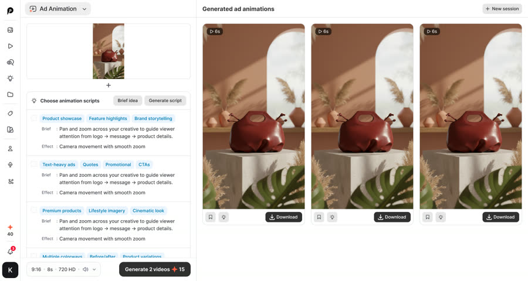

<!doctype html>
<html lang="vi">
<head>
<meta charset="utf-8">
<meta name="viewport" content="width=device-width, initial-scale=1, viewport-fit=cover">
<title>Plan video Promer AI</title>
<link rel="preconnect" href="https://fonts.googleapis.com">
<link rel="stylesheet" href="https://fonts.googleapis.com/css2?family=Inter:wght@400;500;600;700;800&display=swap">
<style>
/* 3 tầng: trang đầu (2 loại video) → danh sách → chi tiết + nút storyboard. Màu theo web promer.ai. */
:root{
  --bg:#E8E9EE; --card:#FFFFFF; --ink:#1B2034; --ink-2:#4A4F60; --ink-3:#7A7F8E; --line:#DEE1F3;
  --violet:#5B4BF0; --pink:#EC4899; --grad:linear-gradient(97deg,#5B4BF0 0%,#A63BE8 46%,#EC4899 100%);
  --done:#16A36B; --done-bg:#E4F6EE; --doing:#2F6BFF; --doing-bg:#E6EEFF; --wait:#B4520E; --wait-bg:#FEF1DA; --idle-bg:#F0F0F2;
  --sans:"Inter",system-ui,-apple-system,"Segoe UI",sans-serif;
}
*{box-sizing:border-box}
html,body{margin:0}
body{background:var(--bg);color:var(--ink);font-family:var(--sans);font-size:15px;line-height:1.55;
  padding-left:max(16px,env(safe-area-inset-left,0px));padding-right:max(16px,env(safe-area-inset-right,0px));padding-block:28px 64px}
.wrap{max-width:1080px;margin:0 auto}
a{color:inherit}
h1,h2,h3{margin:0;line-height:1.15;text-wrap:balance}
h1{font-size:clamp(28px,4vw,40px);font-weight:800;letter-spacing:-.02em}
h2{font-size:clamp(22px,3vw,30px);font-weight:800;letter-spacing:-.01em}
.sub{color:var(--ink-2);margin:8px 0 0;max-width:62ch}
.back{display:inline-flex;gap:6px;align-items:center;text-decoration:none;color:var(--violet);font-weight:600;font-size:14px;margin-bottom:16px}
.back:focus-visible,.tile:focus-visible,.vcard:focus-visible,.btn:focus-visible{outline:3px solid var(--violet);outline-offset:3px}
/* trang đầu */
.tiles{display:grid;grid-template-columns:repeat(auto-fit,minmax(300px,1fr));gap:20px;margin-top:28px}
.tile{display:flex;flex-direction:column;text-decoration:none;background:var(--card);border-radius:22px;overflow:hidden;box-shadow:0 8px 24px rgba(26,26,26,.08);transition:transform .2s}
.tile:hover{transform:translateY(-3px)}
.tile .art{position:relative;height:300px;display:flex;gap:10px;align-items:center;justify-content:center;background:#1B2034;overflow:hidden}
.tile .art::after{content:"";position:absolute;inset:0;background:linear-gradient(180deg,transparent 55%,rgba(27,32,52,.65))}
.tile .art img{height:84%;aspect-ratio:9/16;object-fit:cover;border-radius:12px;box-shadow:0 10px 30px rgba(0,0,0,.45)}
.tile .art img:nth-child(2){height:92%;z-index:1}
.tile.long .art{background:var(--grad)}
.tile .wide-mock{width:78%;aspect-ratio:16/9;border-radius:14px;background:rgba(255,255,255,.16);border:1px solid rgba(255,255,255,.4);display:flex;align-items:center;justify-content:center;color:#fff;font-weight:800;font-size:22px;letter-spacing:.02em}
.tile .art img.wide{height:auto;width:86%;aspect-ratio:16/9;object-fit:cover;object-position:left top;border-radius:12px}
.tile .txt{padding:18px 20px 20px;display:flex;flex-direction:column;gap:4px}
.tile .txt b{font-size:22px}
.tile .txt span{color:var(--ink-2);font-size:14px}
.tile .count{font-weight:700;color:var(--violet)}
/* danh sách */
.group{margin-top:28px}
.group h3{font-size:17px;font-weight:700;margin-bottom:4px}
.group p{margin:0 0 14px;color:var(--ink-3);font-size:14px}
.grid{display:grid;grid-template-columns:repeat(auto-fill,minmax(230px,1fr));gap:16px}
.grid.long{grid-template-columns:repeat(auto-fill,minmax(300px,1fr))}
.vcard{display:flex;flex-direction:column;text-decoration:none;background:var(--card);border-radius:18px;overflow:hidden;box-shadow:0 6px 18px rgba(26,26,26,.06);min-width:0;transition:transform .2s}
.vcard:hover{transform:translateY(-2px)}
.vcard .th{aspect-ratio:9/12;background:#1B2034 center/cover no-repeat;position:relative}
.grid.long .vcard .th{aspect-ratio:16/9}
.vcard .th.empty{background:var(--grad);display:flex;align-items:center;justify-content:center;padding:14px;text-align:center;color:#fff;font-size:13px;font-weight:600}
.vcard .num{position:absolute;left:10px;top:10px;background:rgba(255,255,255,.92);color:var(--ink);font-weight:800;font-size:12px;padding:3px 9px;border-radius:20px}
.vcard .bd{padding:12px 14px 14px;display:flex;flex-direction:column;gap:8px;min-width:0}
.vcard .nm{font-weight:700;font-size:15.5px;line-height:1.3}
.vcard .sm{color:var(--ink-2);font-size:13.5px}
.pill{align-self:flex-start;font-size:12px;font-weight:600;padding:3px 10px;border-radius:20px;background:var(--idle-bg);color:var(--ink-2)}
.pill.done{background:var(--done-bg);color:var(--done)}
.pill.doing{background:var(--doing-bg);color:var(--doing)}
.pill.wait{background:var(--wait-bg);color:var(--wait)}
/* chi tiết */
.detail{display:grid;grid-template-columns:minmax(0,320px) minmax(0,1fr);gap:28px;background:var(--card);border-radius:22px;padding:22px;box-shadow:0 8px 24px rgba(26,26,26,.08)}
.detail .big{width:100%;border-radius:16px;aspect-ratio:9/12;background:#1B2034 center/cover no-repeat}
.detail.long .big{aspect-ratio:16/9}
.detail .big.empty{background:var(--grad);display:flex;align-items:center;justify-content:center;color:#fff;padding:20px;text-align:center;font-weight:600}
.detail .info{display:flex;flex-direction:column;gap:14px;min-width:0}
.detail .lead{font-size:17px;color:var(--ink);margin:0}
.btn{display:inline-flex;align-items:center;gap:8px;text-decoration:none;font-weight:700;font-size:15px;padding:12px 20px;border-radius:14px;background:#1B2034;color:#fff;box-shadow:0 0 0 2px #fff,0 0 0 4px #A63BE8}
.btn.off{background:var(--idle-bg);color:var(--ink-3);box-shadow:none;cursor:default}
.minor{display:flex;flex-wrap:wrap;gap:8px}
.minor a{font-size:13px;color:var(--violet);text-decoration:none;border:1px solid var(--line);border-radius:10px;padding:6px 10px}
dl{display:grid;grid-template-columns:150px minmax(0,1fr);gap:8px 16px;margin:0;font-size:14.5px;border-top:1px solid var(--line);padding-top:14px}
dt{color:var(--ink-3);font-weight:600;font-size:13px}
dd{margin:0;color:var(--ink-2)}
dd b{color:var(--ink)}
.en{color:var(--ink);font-weight:600}
.vi{color:var(--ink-3);font-size:13.5px}
.hash{font-size:13px;color:var(--violet)}
.why{background:#F6F5FB;border-radius:14px;padding:12px 16px}
.why h4{margin:0 0 6px;font-size:13px;color:var(--ink-3)}
.why ul{margin:0;padding-left:18px;color:var(--ink-2);font-size:14px}
.btn.ghost{background:#fff;color:#1B2034;box-shadow:0 0 0 1px var(--line)}
.sched{margin-top:40px}
.slist{display:flex;flex-direction:column;gap:10px;margin-top:16px}
.srow{display:grid;grid-template-columns:64px 54px minmax(0,1fr) auto;gap:14px;align-items:center;background:var(--card);border-radius:16px;padding:10px 16px 10px 12px;text-decoration:none;box-shadow:0 4px 14px rgba(26,26,26,.05)}
.srow:hover{box-shadow:0 0 0 2px #A63BE8}
.srow:focus-visible{outline:3px solid var(--violet);outline-offset:3px}
.sday{display:flex;flex-direction:column;font-size:13px;color:var(--ink-3);line-height:1.3}
.sday b{font-size:18px;color:var(--ink)}
.srow img{width:54px;aspect-ratio:9/16;object-fit:cover;border-radius:8px}
.sinfo{display:flex;flex-direction:column;gap:2px;min-width:0}
.sinfo b{font-size:15px}
.sinfo span{font-size:13.5px;color:var(--ink-2)}
@media (max-width:560px){.srow{grid-template-columns:52px 44px minmax(0,1fr)}.srow .pill{display:none}.srow img{width:44px}}
.more{overflow-wrap:anywhere;margin-top:20px;background:var(--card);border-radius:22px;padding:22px;box-shadow:0 8px 24px rgba(26,26,26,.06);display:flex;flex-direction:column;gap:12px;min-width:0}
.more h2{font-size:clamp(19px,2.4vw,24px)}
.more h3{font-size:17px;margin-top:8px}
.more .eyebrow{font-size:12px;font-weight:600;letter-spacing:.06em;text-transform:uppercase;color:var(--ink-3)}
.more .lede,.more p{color:var(--ink-2);margin:0}
.more .table-wrap{overflow-x:auto;border:1px solid var(--line);border-radius:12px;background:var(--card);box-shadow:0 2px 8px rgba(26,26,26,.04);margin:14px 0}
.more table{border-collapse:collapse;width:100%;font-size:13.5px;font-variant-numeric:tabular-nums}
.more th,.more td{text-align:left;padding:12px 14px;border-bottom:1px solid var(--line);vertical-align:top;line-height:1.5}
.more th{background:var(--bg-2);color:var(--ink);font-weight:700;font-size:12px;text-transform:uppercase;letter-spacing:.04em}
.more tr:last-child td{border-bottom:none}
.more tr:nth-child(even) td{background:rgba(0,0,0,.015)}
.more tr:hover td{background:rgba(135,62,255,.03)}
.more ul{margin:0;padding-left:18px;color:var(--ink-2);display:flex;flex-direction:column;gap:6px}
.more a{color:var(--violet)}
footer{margin-top:36px;font-size:13px;color:var(--ink-3)}
footer a{color:var(--violet)}
@media (max-width:700px){
  .detail{grid-template-columns:1fr}
  .detail .big{max-width:280px}
  dl{grid-template-columns:1fr;gap:2px}
  dt{padding-top:8px}
  .tile .art{height:230px}
}
@media (prefers-reduced-motion:reduce){.tile,.vcard{transition:none}}
</style>
</head>
<body>
<div class="wrap" id="app"></div>
<script>
const V = [{"id":"s01","kind":"short","img":"img/posted/s01.jpg","alt":"Thumbnail đã đăng: How to Turn a Product Photo Into a Video Ad With AI","num":"01","name":"Nước hoa · Một ảnh điện thoại thành quảng cáo","stc":"done","st":"Đã đăng · 21:00 01/11 giờ VN","tags":["Một ảnh điện thoại, ba quảng cáo","Video đầu tiên, dựng lại bản v2"],"why":["Video mở đầu kênh: chụp chai nước hoa bằng điện thoại ở bàn làm việc, Promer ra 3 quảng cáo, đặt lên trang sản phẩm Shopify."],"dl":[["Bản đã đăng","27,6 giây · tiêu đề \"How to Turn a Product Photo Into a Video Ad With AI\" · thumbnail khung hook \"NO STUDIO? ONE PHONE PHOTO\""],["Ba bản","Ánh nắng hoàng hôn · nước và cánh hoa · hero shot trên bục gỗ (video Promer đã tạo)"]],"btns":[{"href":"https://youtube.com/shorts/PjQ-PCoi7Gk","text":"Xem trên YouTube →","main":true}],"post":{"day":"2026-11-01","date":"01/11","time":"21:00","ny":"9:00 AM New York","yt":"https://youtube.com/shorts/PjQ-PCoi7Gk","product":"Nước hoa (một ảnh chụp bằng điện thoại, ra 3 video quảng cáo)","title":"How to Turn a Product Photo Into a Video Ad With AI","img":"img/posted/s01.jpg"},"more":[],"group":"channel","sum":"Không có studio, chỉ một ảnh chụp chai nước hoa bằng điện thoại. Promer biến ảnh đó thành 3 video quảng cáo (nắng hoàng hôn, nước và cánh hoa, hero shot) rồi đặt lên trang sản phẩm Shopify."},{"id":"s02","kind":"short","img":"img/posted/s02.jpg","alt":"Thumbnail đã đăng: How to Turn a Sneaker Photo Into a Video Ad With AI","num":"02","name":"Giày · Hit the ground","stc":"done","st":"Đã đăng · 20:00 29/10 giờ VN","tags":["Một ảnh, nhiều bản để test","Cho xem kết quả trước","Đã có 3 video Promer thật"],"why":["<b>50.520<\/b> shop giày trên Shopify, gấp khoảng <b>3,5<\/b> lần shop kính","Thời trang là ngành trả tiền cho Promer nhiều nhất: <b>36%<\/b> người trả phí","Thư viện Promer có <b>3.657<\/b> template giày (shoes + sneakers), nhiều nhất trong 12 ngành đã quét","Ảnh giày đứng yên không cho thấy độ êm, độ bật; video cho thấy đúng chỗ đó"],"dl":[["Vấn đề shop","Trang shop toàn ảnh giày tĩnh; muốn có nhiều bản quảng cáo để test mà không chụp lại."],["Số shop Shopify","<b>50.520<\/b> shop giày"],["Hook","<span class=\"en\">\"Shopify sellers: one photo, three shoe ads.\"<\/span><br><span class=\"vi\">Merchant Shopify: một ảnh, ba quảng cáo giày.<\/span>"],["Bản đã đăng","26,4 giây · tiêu đề \"How to Turn a Sneaker Photo Into a Video Ad With AI\" · thumbnail khung hook"],["Ba bản","Giày bay lơ lửng · góc máy thấp trời xanh · lao tới bắn nước (video Promer đã tạo)"],["Người xem tìm gì","Cách biến ảnh sản phẩm thành video quảng cáo; ý tưởng quảng cáo cho shop giày<br><span class=\"vi\">Gõ trên YouTube: \"product photo to video ai\" · \"shoes marketing ideas\"<\/span>"],["Hashtag","<span class=\"hash\">#shopify #shoesmarketing #productphototovideo #aiads #shorts #ecommerce #dropshipping<\/span>"]],"btns":[{"href":"https://youtube.com/shorts/xdDqj3qACIs","text":"Xem trên YouTube →","main":true},{"href":"storyboard-v2.html#s02","text":"Storyboard v2","main":false},{"href":"storyboard-shorts-02.html","text":"Bản 28/10 (A · B · C)","main":false}],"post":{"day":"2026-10-29","date":"29/10","time":"20:00","ny":"9:00 AM New York","yt":"https://youtube.com/shorts/xdDqj3qACIs","product":"Giày thể thao (một ảnh, ra 3 video quảng cáo)","title":"How to Turn a Sneaker Photo Into a Video Ad With AI","img":"img/posted/s02.jpg"},"more":["<h2>Vì sao Short 02 là giày<\/h2>\n    <div class=\"table-wrap\"><table>\n      <tr><th>Lý do<\/th><th>Số liệu<\/th><\/tr>\n      <tr><td>Shop giày trên Shopify nhiều<\/td><td>• <b>50.520<\/b> shop giày đang hoạt động, khoảng <b>1,6%<\/b> trong <b>3.189.133<\/b> shop Shopify<br>• Khoảng <b>5,9%<\/b> nhóm thời trang (<b>862.961<\/b> shop), đứng <b>thứ 4<\/b> trong nhóm<br>• Ở Mỹ: <b>16.758<\/b> shop (<b>33,2%<\/b>)<br>• Nhiều gấp khoảng <b>3,5<\/b> lần shop kính (<b>14.382<\/b>)<\/td><\/tr>\n      <tr><td>Thời trang là ngành trả tiền cho Promer nhiều nhất<\/td><td><b>36%<\/b> người trả phí là thời trang; giày thuộc nhóm này (chưa có số riêng)<\/td><\/tr>\n      <tr><td>Thư viện Promer có nhiều mẫu giày<\/td><td>• \"shoes\": <b>2.152<\/b> template<br>• \"sneakers\": <b>1.505<\/b> template<br>• Cộng lại đứng đầu 12 ngành đã quét<\/td><\/tr>\n      <tr><td>Merchant đang tìm<\/td><td>• \"shoes marketing ideas\": từ khoá chính của trang Ad Concept<br>• Trang Image to Video: <b>76,7<\/b> trong 100 lượt vào bấm vào app<\/td><\/tr>\n      <tr><td>Ảnh tĩnh thiệt nhất với giày<\/td><td>Điểm bán của giày là độ êm, độ bật khi bước; ảnh trên sàn không cho thấy, video thì cho thấy<\/td><\/tr>\n    <\/table><\/div>\n    <h2 style=\"margin-top:18px\">Vì sao là đôi giày này<\/h2>\n    <ul class=\"ask\">\n      <li><b>Chỉ có sản phẩm, không có người:<\/b> AI Ad Animation không dựng được người thật.<\/li>\n      <li><b>Ba bản khác nhau rõ:<\/b> lơ lửng trên nền san hô, góc máy thấp trời xanh, lao tới bắn nước.<\/li>\n      <li><b>Đôi giày phổ thông:<\/b> giày chạy bộ trắng sọc cam; merchant bán sneaker nào cũng thấy giống hàng mình.<\/li>\n      <li><b>Thương hiệu:<\/b> giày nhãn Promer ở gót, ghi \"AI-generated · Fictional brand\".<\/li>\n    <\/ul>\n    <p class=\"lede\" style=\"margin-top:8px\">Nguồn số shop: <a href=\"https://storeleads.app/reports/shopify/category/Apparel/Footwear\" target=\"_blank\" rel=\"noopener\">Store Leads<\/a>, cập nhật 23/10/2026. Số người trả phí, template và trang đích: số đo nội bộ của Promer. Chưa có: số merchant giày đang dùng Promer, số lượt tìm \"shoes marketing ideas\" trên YouTube.<\/p>"],"group":"channel","sum":"Trang shop toàn ảnh giày tĩnh; muốn có nhiều bản quảng cáo để test mà không chụp lại."},{"id":"s03","kind":"short","img":"img/posted/s03.jpg","alt":"Thumbnail đã đăng: Black Friday Ads Not Ready? Turn 1 Product Photo Into 3 Ads","num":"03","name":"Cà phê · Black Friday · The Seller Times","stc":"done","st":"Đã đăng · 20:30 31/10 giờ VN","tags":["Mùa Black Friday","Hỏi nỗi lo trước","Đổi nước hoa → cà phê (tránh trùng Shorts 01)"],"why":["Black Friday <b>27/11/2026<\/b>: còn gần 4 tuần để video được tìm thấy","<b>44.154<\/b> shop cà phê và trà trên Shopify, <b>19.521<\/b> ở Mỹ","Thư viện Promer có <b>945<\/b> template cà phê","Chưa video nào của kênh dùng cà phê"],"dl":[["Cách triển khai","<b>Tờ báo<\/b>: trang nhất tít \"BLACK FRIDAY: YOUR ADS AREN'T READY\", ảnh túi cà phê trên báo cử động, lật trang sang bản quảng cáo tiếp. Ý tưởng từ pin \"The Scent Times\"."],["Vấn đề shop","Sắp Black Friday mà chưa có quảng cáo mùa sale, không kịp chụp mới."],["Số shop Shopify","<b>44.154<\/b> shop cà phê và trà"],["Hook","<span class=\"en\">\"Shopify sellers, Black Friday ads not ready?\"<\/span><br><span class=\"vi\">Merchant Shopify, quảng cáo Black Friday chưa xong?<\/span>"],["Người xem tìm gì","Quảng cáo Black Friday cho shop; ý tưởng quảng cáo cà phê<br><span class=\"vi\">Gõ trên YouTube: \"black friday ads shopify\" · \"coffee ad ideas\" (cả hai chưa đo)<\/span>"],["Hashtag","<span class=\"hash\">#shopify #blackfridayads #coffeebrand #aiads #shorts #ecommerce #dropshipping<\/span>"]],"btns":[{"href":"storyboard-s03.html","text":"Xem storyboard Shorts 03 →","main":true}],"post":{"day":"2026-10-31","date":"31/10","time":"20:30","ny":"9:30 AM New York","yt":"https://youtube.com/shorts/mpGG8eunPMo","product":"Cà phê (túi cà phê, mùa Black Friday)","title":"Black Friday Ads Not Ready? Turn 1 Product Photo Into 3 Ads","img":"img/posted/s03.jpg"},"more":["<div class=\"eyebrow\">Shorts 03 · bước 1 Content · bản 1 · chờ duyệt<\/div>\n    <h2 class=\"big\">Shorts 03 · The Seller Times: Black Friday cho shop cà phê<\/h2>\n    <p style=\"margin-top:6px\"><a class=\"btn\" href=\"storyboard-s03.html\">Xem storyboard có nhân vật, góc máy, tiêu cự, khẩu độ, màn trập →<\/a><\/p>\n\n    <h2 style=\"margin-top:12px\">Video kể gì (đọc 20 giây)<\/h2>\n    <ul class=\"ask\">\n      <li>Một tờ báo xoay vào khung. Tít trang nhất: <b>\"BLACK FRIDAY: YOUR ADS AREN'T READY\"<\/b>, nói đúng nỗi lo của chủ shop.<\/li>\n      <li>Ảnh túi cà phê chụp điện thoại in trên trang báo bỗng <b>cử động<\/b>: ảnh tĩnh thành video ngay trong giây đầu.<\/li>\n      <li>Lật trang báo, mỗi trang là <b>một việc<\/b> của quảng cáo Black Friday: <b>Deal<\/b> (cho thấy giá giảm) · <b>Deadline<\/b> (cho thấy ngày hết) · <b>Bundle<\/b> (cho thấy mua nhiều hơn). Mỗi trang là một video Promer thật làm từ cùng tấm ảnh đó.<\/li>\n      <li>Mặt sau tờ báo là ô rao vặt: màn kết quả Promer AI Ad Animation, rồi mục \"Reader poll\" hỏi người xem chạy bản nào trước.<\/li>\n    <\/ul>\n\n    <h2 style=\"margin-top:18px\">Người xem được gì<\/h2>\n    <div class=\"table-wrap\"><table>\n      <tr><th>Câu hỏi<\/th><th>Trả lời<\/th><th>Mức<\/th><\/tr>\n      <tr><td>Vì sao họ dừng lại?<\/td><td>Khung đầu là trang nhất báo với tít đúng nỗi lo tháng 11 của chủ shop. Ở giây 1,5 ảnh trên báo cử động, nên họ thấy trước/sau trước khi kịp lướt.<\/td><td>Khá. Tít báo nhiều chữ: chữ tít phải to (cao ≥ 90 px trên khung 1080), chỉ 5 chữ đọc được.<\/td><\/tr>\n      <tr><td>Họ mang về được gì?<\/td><td>Một cách chia việc dùng ngay, kể cả không dùng Promer: quảng cáo Black Friday làm <b>3 bản cho 3 việc<\/b> (giá · hạn chót · combo) từ cùng một ảnh, rồi để tài khoản quảng cáo chọn bản thắng.<\/td><td>Khá. Là lời khuyên cách làm, không phải số liệu, nên không cần dẫn nguồn.<\/td><\/tr>\n      <tr><td>Xem xong họ làm gì khác?<\/td><td>Lấy ảnh sản phẩm bán chạy nhất, chọn việc cho bản đầu tiên, bình luận 1, 2 hoặc 3. Related video dẫn sang video dài Black Friday (L2).<\/td><td>Trung bình. L2 chưa làm, tạm để Related video trỏ về video kênh gần nhất.<\/td><\/tr>\n    <\/table><\/div>\n\n    <h2 style=\"margin-top:18px\">Các cảnh (khoảng 25 giây, giọng Emma, phụ đề cứng)<\/h2>\n    <p class=\"lede\" style=\"margin-bottom:8px\">Lời đọc 48 chữ, khoảng 14–18 giây theo tốc độ Emma (2,6–3,4 chữ/giây). Chữ trên tờ báo tránh ô phụ đề (y 1365–1440).<\/p>\n    <div class=\"table-wrap\"><table>\n      <tr><th>Cảnh<\/th><th>Giây<\/th><th>Hình<\/th><th>Lời đọc<\/th><\/tr>\n      <tr><td><b>SC01_Hook<\/b><\/td><td>0–3<\/td><td>Tờ báo xoay vào khung kiểu phim cũ, dừng ở 0,6 giây. Măng-sét \"THE SELLER TIMES\", tít \"BLACK FRIDAY: YOUR ADS AREN'T READY\", chữ nhỏ \"For Shopify sellers\". Ảnh túi cà phê chụp điện thoại in trên báo; giây 1,5 ảnh bắt đầu cử động (video Promer).<\/td><td><span class=\"en\">\"Shopify sellers, Black Friday ads not ready?\"<\/span><br><span class=\"vi\">Merchant Shopify, quảng cáo Black Friday chưa xong?<\/span><\/td><\/tr>\n      <tr><td><b>SC02_Clipping<\/b><\/td><td>3–6<\/td><td>Máy đẩy vào khung ảnh trên báo. Góc trang ghim mẩu ảnh gốc chụp điện thoại, chú thích \"the only photo\".<\/td><td><span class=\"en\">\"Skip the reshoot. Give one photo three jobs.\"<\/span><br><span class=\"vi\">Khỏi chụp lại. Giao cho một tấm ảnh ba việc.<\/span><\/td><\/tr>\n      <tr><td><b>SC03_Deal<\/b><\/td><td>6–10<\/td><td>Lật trang, đầu trang \"PAGE 2 · THE DEAL\". Video Promer bản 1: hạt cà phê bung quanh túi, nhịp mạnh đúng drop nhạc; chữ giá giảm do AE dựng trên trang báo, không nằm trong video.<\/td><td><span class=\"en\">\"Job one: sell the deal.\"<\/span><br><span class=\"vi\">Việc một: bán cái giá.<\/span><\/td><\/tr>\n      <tr><td><b>SC04_Deadline<\/b><\/td><td>10–14<\/td><td>Lật trang, \"PAGE 3 · THE DEADLINE\". Video bản 2: phòng tối, một đèn spot rọi túi, hơi nóng bốc lên; AE thêm \"ENDS MONDAY\" kiểu tít báo.<\/td><td><span class=\"en\">\"Job two: sell the deadline.\"<\/span><br><span class=\"vi\">Việc hai: bán hạn chót.<\/span><\/td><\/tr>\n      <tr><td><b>SC05_Bundle<\/b><\/td><td>14–18<\/td><td>Lật trang, \"PAGE 4 · THE BUNDLE\". Video bản 3: ba túi lần lượt rơi xuống xếp hàng.<\/td><td><span class=\"en\">\"Job three: sell the bundle.\"<\/span><br><span class=\"vi\">Việc ba: bán combo.<\/span><\/td><\/tr>\n      <tr><td><b>SC06_Classifieds<\/b><\/td><td>18–21<\/td><td>Tờ báo gập lại. Mặt sau có ô rao vặt: màn kết quả Promer AI Ad Animation dựng lại trong AE (ảnh túi vào, 3 video ra), dòng \"Made in Promer AI · Ad Animation\".<\/td><td><span class=\"en\">\"All three made in Promer AI from that one photo.\"<\/span><br><span class=\"vi\">Cả ba làm trong Promer AI từ đúng tấm ảnh đó.<\/span><\/td><\/tr>\n      <tr><td><b>SC07_Outro<\/b><\/td><td>21–25<\/td><td>Mục \"READER POLL\" trên mặt sau: 3 ảnh nhỏ đánh số 1, 2, 3, câu hỏi, logo Promer AI.<\/td><td><span class=\"en\">\"Which one runs first? Comment 1, 2, or 3.\"<\/span><br><span class=\"vi\">Bản nào chạy trước? Bình luận 1, 2 hoặc 3.<\/span><\/td><\/tr>\n    <\/table><\/div>\n\n    <h2 style=\"margin-top:18px\">Nguồn ý tưởng<\/h2>\n    <ul class=\"ask\">\n      <li><b>Pin \"The Scent Times · don't gatekeep your perfume\"<\/b> (Pinterest, từ khoá \"perfume ad creative\", xem ngày 29/10/2026; ảnh lưới `02_Reference/pinterest_29-10/s03_perfume_pinterest.jpg`). Trong pin: một người cầm tờ báo che mặt, trang báo in chai nước hoa, ly cà phê trên bàn.<\/li>\n      <li><b>Lấy:<\/b> format tờ báo làm khung quảng cáo, tít giật một dòng.<\/li>\n      <li><b>Đổi:<\/b> không có người cầm báo (báo tự xoay vào khung); tít thành nỗi lo mùa sale của chủ shop; ảnh in trên báo cử động thành video Promer; lật trang để sang bản tiếp; mặt sau thành ô rao vặt và mục bình chọn.<\/li>\n    <\/ul>\n\n    <h2 style=\"margin-top:18px\">Đối chiếu trùng (6 ô)<\/h2>\n    <div class=\"table-wrap\"><table>\n      <tr><th>Ô<\/th><th>Shorts 03<\/th><th>Gần nhất đã có<\/th><th>Kết luận<\/th><\/tr>\n      <tr><td>Lời hứa chính<\/td><td>Quảng cáo Black Friday có 3 việc: giá, hạn chót, combo<\/td><td>Shorts 02 \"một ảnh, ba quảng cáo\"; Short kênh \"10 Ads, Same Idea? Find New Ad Angles\"<\/td><td>Khác: 03 nói loại ưu đãi mùa sale, không nói góc sáng tạo hay tính năng Ad Concept. Gần nhất là Short kênh, cần anh xem.<\/td><\/tr>\n      <tr><td>Sản phẩm demo<\/td><td>Túi cà phê nhãn Promer<\/td><td>Chưa video nào dùng cà phê<\/td><td>Không trùng<\/td><\/tr>\n      <tr><td>Hình mở, kiểu mở<\/td><td>Trang nhất tờ báo, hỏi nỗi lo trước<\/td><td>01 ảnh điện thoại · 02 trang shop<\/td><td>Không trùng<\/td><\/tr>\n      <tr><td>Concept hình<\/td><td>Tờ báo, lật trang<\/td><td>04 nét son · 05 nút gạt · 06 zoom mặt số · 07 ghép hình · 08 túi khổng lồ ngoài phố<\/td><td>Không trùng<\/td><\/tr>\n      <tr><td>Cảnh Promer<\/td><td>Màn kết quả Ad Animation trong ô rao vặt, khoảng 1,5 giây<\/td><td>01 thanh prompt · 02 tick ý tưởng · dài #01 đi hết các bước Ad Animation<\/td><td>Không trùng. #01 đang tạm dừng; khi làm lại thì #01 không dùng màn kết quả này.<\/td><\/tr>\n      <tr><td>Câu hook<\/td><td>\"Shopify sellers, Black Friday ads not ready?\"<\/td><td>08 \"one bag photo, three Black Friday ads\"<\/td><td>Gần về mùa: hook 08 đổi sang quà tặng khi làm Content 08<\/td><\/tr>\n    <\/table><\/div>\n\n    <h2 style=\"margin-top:18px\">Cần anh chốt<\/h2>\n    <ol class=\"ask\">\n      <li><b>Sản phẩm cà phê?<\/b> Lý do chọn:\n        <ul>\n          <li><b>44.154<\/b> shop cà phê và trà trên Shopify (Store Leads, xem 29/10/2026), gần bằng giày (<b>50.520<\/b>)<\/li>\n          <li><b>945<\/b> template cà phê trong thư viện Promer (đo 26/10)<\/li>\n          <li>Chưa video nào dùng cà phê<\/li>\n          <li>Tờ báo và cà phê buổi sáng vốn đi cùng nhau<\/li>\n        <\/ul>\n        Phương án B: kính mát (sản phẩm cũ của 03), <b>14.382<\/b> shop, <b>849<\/b> template; thuộc nhóm thời trang nhưng tháng 11 không phải mùa kính.<\/li>\n      <li><b>Câu kết bình chọn.<\/b> Luật review 29/10 có CTA chung \"Comment 1, 2 or 3\", còn bảng đối chiếu ghi khung bình chọn 1/2/3 là của Shorts 02. Em đề xuất giữ câu hỏi kéo bình luận nhưng đổi hình thành mục \"Reader poll\" trên báo, câu hỏi \"Which one runs first?\".<\/li>\n      <li><b>Credit.<\/b> Cần 3 video Promer:\n        <ul>\n          <li>mỗi video khoảng <b>48<\/b> credit (Veo 3.1, 8 giây, tắt tiếng), 3 video khoảng <b>144<\/b><\/li>\n          <li>đang còn <b>47<\/b><\/li>\n        <\/ul>\n        Bản 3 (ba túi xếp hàng) có thể Promer không giữ đúng 3 túi giống nhau; em tạo bản đó sau cùng, lỗi thì báo anh trước khi tạo lại.<\/li>\n      <li><b>Tên báo \"The Seller Times\".<\/b> Không đặt chữ Shopify trên măng-sét để khỏi giống ấn phẩm của Shopify; chữ \"For Shopify sellers\" để nhỏ dưới măng-sét.<\/li>\n    <\/ol>"],"group":"channel","sum":"Black Friday sắp tới mà quảng cáo chưa sẵn sàng. Chụp một ảnh túi cà phê bằng điện thoại, đưa vào Promer, ra 3 video quảng cáo rồi đưa lên trang Shopify."},{"id":"s04","kind":"short","img":"img/T01_makeup_20.jpg","alt":"Template son trong hộp cứu hoả","num":"04","name":"Son · Break the glass","stc":"wait","st":"Bước 2 Idea · chờ duyệt plan v3","tags":["Không chụp lại","Hỏi nỗi lo trước"],"why":["Từ khoá \"lipstick ad ideas\" ưu tiên P0, <b>13,8 triệu<\/b> view","Nhóm làm đẹp: <b>18%<\/b> người trả phí cho Promer","Merchant son thiếu ý tưởng hơn thiếu ảnh: video cho một ý tưởng làm được ngay","Kéo người xem sang video dài về son"],"dl":[["Cách triển khai v3","<b>Nét son làm chuyển cảnh<\/b>: mỗi nét son quét ngang khung lau sang bản quảng cáo tiếp, một cú máy liền; nét cuối viết chữ \"Promer\". Ý tưởng từ pin bảng 9 mẫu son quẹt."],["Vấn đề shop","Cần quảng cáo son mới nhưng không muốn tổ chức buổi chụp mới."],["Số shop Shopify","Cả nhóm chăm sóc da và cơ thể: <b>218.354<\/b> shop (chưa có số riêng son)"],["Hook","<span class=\"en\">\"New lipstick ad, no reshoot?\"<\/span><br><span class=\"vi\">Quảng cáo son mới mà không phải chụp lại? Cảnh kính vỡ hiện ngay giây đầu.<\/span>"],["Người xem tìm gì","Ý tưởng quảng cáo son khác với các shop khác<br><span class=\"vi\">Gõ trên YouTube: \"lipstick ad ideas\"<\/span>"],["Hashtag","<span class=\"hash\">#shopify #lipstickads #beautymarketing #aiads #shorts #ecommerce #dropshipping<\/span>"]],"btns":[{"href":"storyboard-v2.html#s04","text":"Xem storyboard v2 →","main":true}],"more":[],"group":"channel","sum":"Nét son làm chuyển cảnh: mỗi nét son quét ngang khung lau sang bản quảng cáo tiếp, một cú máy liền; nét cuối viết chữ \"Promer\". Ý tưởng từ pin bảng 9 mẫu son quẹt."},{"id":"s05","kind":"short","img":"img/T04_serum_04.jpg","alt":"Template serum và nhân sâm","num":"05","name":"Skincare · From the root","stc":"wait","st":"Bước 2 Idea · chờ duyệt plan v3","tags":["Kể câu chuyện sản phẩm","Hỏi nỗi lo trước"],"why":["Nhóm chăm sóc da và cơ thể: <b>218.354<\/b> shop, đông nhất trong 7 ngành","Thư viện Promer có <b>2.510<\/b> template skincare + <b>1.852<\/b> template serum","Nhóm làm đẹp: <b>18%<\/b> người trả phí cho Promer","Kéo người xem sang video dài UGC serum"],"dl":[["Cách triển khai v3","<b>Công tắc giao diện<\/b>: nút gạt kiểu iPhone \"Studio: OFF → ON\", \"Story: OFF → ON\", \"Motion: OFF → ON\" đặt lên ảnh; mỗi lần gạt cảnh đổi. Ý tưởng từ pin \"dry skin: OFF\"."],["Vấn đề shop","Chỉ có ảnh chai trên kệ, không nói được thành phần."],["Số shop Shopify","Cả nhóm chăm sóc da và cơ thể: <b>218.354<\/b> shop (chưa có số riêng serum)"],["Hook","<span class=\"en\">\"Shopify skincare brands, don't just show the bottle.\"<\/span><br><span class=\"vi\">Brand skincare trên Shopify, đừng chỉ cho xem cái chai. (review: hook ổn, giữ)<\/span>"],["Người xem tìm gì","Cách quảng cáo mỹ phẩm, skincare ngoài ảnh chai trên kệ<br><span class=\"vi\">Gõ trên YouTube: \"cosmetic marketing ideas\" · \"ugc skincare ads\"<\/span>"],["Hashtag","<span class=\"hash\">#shopify #skincareads #cosmeticmarketing #aiads #shorts #ecommerce #dropshipping<\/span>"]],"btns":[{"href":"storyboard-v2.html#s05","text":"Xem storyboard v2 →","main":true}],"more":[],"group":"channel","sum":"Công tắc giao diện: nút gạt kiểu iPhone \"Studio: OFF → ON\", \"Story: OFF → ON\", \"Motion: OFF → ON\" đặt lên ảnh; mỗi lần gạt cảnh đổi. Ý tưởng từ pin \"dry skin: OFF\"."},{"id":"s06","kind":"short","img":"img/T03_watch_17.jpg","alt":"Template đồng hồ và tia sáng","num":"06","name":"Đồng hồ · Every second","stc":"wait","st":"Bước 2 Idea · chờ duyệt plan v3","tags":["Làm mới creative","Cho xem kết quả trước"],"why":["Từ khoá \"watch ad ideas\", \"watch paid ads youtube\"","Thư viện Promer có <b>1.136<\/b> template đồng hồ; mẫu đồng hồ được dùng nhiều nhất trong các mẫu mới (<b>24<\/b> lượt)","Đồng hồ bán bằng chi tiết mặt số, mà ảnh cổ tay hay bị loá","Kéo người xem sang video dài 5 dạng quảng cáo"],"dl":[["Cách triển khai v3","<b>Zoom vô tận một cú máy<\/b>: máy lao vào mặt số, xuyên qua là bản quảng cáo tiếp, lặp 3 lần, lùi ra thấy đồng hồ trên trang shop. Ý tưởng từ pin Casio mặt số thành đường cao tốc."],["Vấn đề shop","Ảnh cổ tay bị loá, không thấy chi tiết mặt số; quảng cáo cũ cần làm mới."],["Số shop Shopify","Cả nhóm phụ kiện: <b>197.961<\/b> shop (chưa có số riêng đồng hồ)"],["Hook","<span class=\"en\">\"Shopify watch sellers: show every detail.\"<\/span><br><span class=\"vi\">Shop đồng hồ trên Shopify: cho thấy từng chi tiết. (6 chữ)<\/span>"],["Người xem tìm gì","Ý tưởng quảng cáo đồng hồ, quảng cáo đồng hồ trên YouTube<br><span class=\"vi\">Gõ trên YouTube: \"watch ad ideas\" · \"watch paid ads youtube\"<\/span>"],["Hashtag","<span class=\"hash\">#shopify #watchads #productphototovideo #aiads #shorts #ecommerce #dropshipping<\/span>"]],"btns":[{"href":"storyboard-v2.html#s06","text":"Xem storyboard v2 →","main":true}],"more":[],"group":"channel","sum":"Zoom vô tận một cú máy: máy lao vào mặt số, xuyên qua là bản quảng cáo tiếp, lặp 3 lần, lùi ra thấy đồng hồ trên trang shop. Ý tưởng từ pin Casio mặt số thành đường cao…"},{"id":"s07","kind":"short","img":"img/posted/s07.jpg","alt":"Thumbnail đã lên lịch: The Ring Waited in a Pocket for Months","num":"07","name":"Trang sức · Chiếc nhẫn trong túi áo","stc":"wait","st":"Tạm hoãn · Đang chỉnh sửa bản mới (v5/v6)","tags":["Câu chuyện sản phẩm","Nhẫn cưới","2 bản storyboard"],"why":["Từ khoá \"jewelry advertising ideas\", \"ads for jewelry\"","Thư viện Promer có <b>1.339<\/b> template trang sức","Đồ nhỏ, khó chụp đẹp bằng điện thoại: chỗ AI giúp được nhiều nhất","Đúng mùa quà tặng cuối năm, kéo sang video dài trang sức"],"dl":[["Chuyên mục","<b>Câu chuyện sản phẩm<\/b> (không phải khoe đầu ra Promer)"],["Tiêu đề","<span class=\"en\">The Ring Waited in a Pocket for Months<\/span>"],["Vấn đề shop","Đồ nhỏ, khó chụp, ảnh trên khay nhung trông rẻ."],["Số shop Shopify","Cả nhóm phụ kiện: <b>197.961<\/b> shop (chưa có số riêng trang sức)"],["Người xem tìm gì","Cách quảng cáo trang sức, đồ nhỏ khó chụp<br><span class=\"vi\">Gõ trên YouTube: \"jewelry advertising ideas\" · \"ads for jewelry\"<\/span>"],["Hashtag","<span class=\"hash\">#shopify #jewelryads #jewelrymarketing #aiads #shorts #ecommerce #dropshipping<\/span>"]],"btns":[],"more":["<h2>Câu chuyện: Chiếc nhẫn trong túi áo (câu chuyện của một chiếc nhẫn cưới)<\/h2>\n<p><b>Chuyên mục:<\/b> Câu chuyện sản phẩm (kể chuyện một chiếc nhẫn cưới, tiết chế kiểu Cartier; Promer chỉ xuất hiện nhẹ ở cuối).<\/p>\n<p><b>Tiêu đề:<\/b> <span class=\"en\">The Ring Waited in a Pocket for Months<\/span><br><span class=\"vi\">Dự phòng: \"Thirty Years Later, Still the Same Ring\" · \"Nobody Buys a Ring. They Keep One.\"<\/span><\/p>\n<p><b>Chủ shop mang về được gì:<\/b> Bán nhẫn bằng khoảnh khắc đời của nó (chờ, trao, đeo, già đi cùng nhau), không bằng thông số hay lời khoe. Shop của bạn cũng làm được: cho khách thấy sản phẩm ở lúc người ta CHỜ nó và lúc người ta GIỮ nó nhiều năm, không chỉ lúc nó nằm trên nền trắng.<\/p>\n<p><b>Bản 1 · Kem ấm, lụa, máy tĩnh:<\/b> Tông kem và vàng nhạt, vải lụa, ánh sáng cửa sổ mềm. Máy gần như đứng yên, cắt mềm bằng chồng mờ chậm. Cảm giác: êm, thân mật, hoài niệm.<br><b>Bản 2 · Tối tương phản, macro, ánh sáng cứng:<\/b> Nền đen và đỏ rượu, một luồng sáng cứng chiếu chéo, cận macro. Máy trôi chậm, chuyển cảnh theo chuyển động của tay (tay che khung, tay đi ngang rồi lộ cảnh sau). Cảm giác: trang trọng, kiểu quảng cáo Cartier.<\/p>","<h2>Storyboard: Bản 1 và Bản 2, cùng câu chuyện<\/h2>\n<p style=\"font-size:.85em;color:#717582;margin:0 0 8px\">Hàng trên là câu chuyện từng cảnh (chung cho 2 bản). Hàng giữa là Bản 1, hàng dưới là Bản 2: khác cách quay, cùng lời. Anh chọn cảnh nào của bản nào để ghép cũng được. Ảnh là tham chiếu Pinterest, bấm để mở nguồn. Trên điện thoại kéo ngang.<\/p>\n<div style=\"overflow-x:auto;-webkit-overflow-scrolling:touch;padding-bottom:8px\"><div style=\"display:grid;grid-template-columns:52px repeat(6, minmax(150px, 1fr));gap:10px;align-items:stretch;min-width:1012px\"><div style=\"background:#f1f2f5;border-radius:12px;display:flex;align-items:center;justify-content:center;font-weight:700;text-align:center;font-size:.8em;padding:6px\">Cảnh<\/div><div style=\"border:1px solid #e3e4ea;border-radius:12px;padding:10px;background:#fff;font-size:.8em;line-height:1.45\"><b>SC01<\/b> · 0 đến 3 giây<br><b>Chữ:<\/b> <span class=\"en\">Before the yes.<\/span><br><span style=\"color:#717582\">Không lời<\/span><\/div><div style=\"border:1px solid #e3e4ea;border-radius:12px;padding:10px;background:#fff;font-size:.8em;line-height:1.45\"><b>SC02<\/b> · 3 đến 8 giây<br><b>Chữ:<\/b> <span class=\"en\">Carried for months.<\/span><br><b>Lời:<\/b> <span class=\"en\">Carried for months.<\/span><\/div><div style=\"border:1px solid #e3e4ea;border-radius:12px;padding:10px;background:#fff;font-size:.8em;line-height:1.45\"><b>SC03<\/b> · 8 đến 13 giây<br><b>Chữ:<\/b> <span class=\"en\">Then, one second.<\/span><br><span style=\"color:#717582\">Không lời<\/span><\/div><div style=\"border:1px solid #e3e4ea;border-radius:12px;padding:10px;background:#fff;font-size:.8em;line-height:1.45\"><b>SC04<\/b> · 13 đến 18 giây<br><b>Chữ:<\/b> <span class=\"en\">Yes.<\/span><br><span style=\"color:#717582\">Không lời<\/span><\/div><div style=\"border:1px solid #e3e4ea;border-radius:12px;padding:10px;background:#fff;font-size:.8em;line-height:1.45\"><b>SC05<\/b> · 18 đến 24 giây<br><b>Chữ:<\/b> <span class=\"en\">Thirty years later.<\/span><br><b>Lời:<\/b> <span class=\"en\">Still the same ring.<\/span><\/div><div style=\"border:1px solid #e3e4ea;border-radius:12px;padding:10px;background:#fff;font-size:.8em;line-height:1.45\"><b>SC06<\/b> · 24 đến 28 giây<br><b>Chữ:<\/b> <span class=\"en\">Every ring has a story.<\/span><br><b>Lời:<\/b> <span class=\"en\">Every ring has a story. Tell yours.<\/span><\/div><div style=\"background:#f7efe4;border-radius:12px;display:flex;align-items:center;justify-content:center;font-weight:700;text-align:center;font-size:.8em;padding:6px\">Bản 1<\/div><div style=\"border:1px solid #e3e4ea;border-radius:12px;padding:10px;background:#fff;font-size:.8em;line-height:1.45\"><div style=\"display:flex;gap:6px\"><a href=\"https://www.pinterest.com/search/pins/?q=jewelry%20ad%20minimal%20cream%20silk%20hands\" target=\"_blank\" rel=\"noopener\" style=\"flex:1 1 0;min-width:0\"><\/a><a href=\"https://www.pinterest.com/search/pins/?q=jewelry%20ad%20minimal%20cream%20silk%20hands\" target=\"_blank\" rel=\"noopener\" style=\"flex:1 1 0;min-width:0\"><\/a><\/div><div style=\"margin-top:8px\">Bàn tay trái đặt ngửa trên tấm lụa kem, ngón áp út trống, ánh sáng cửa sổ trượt chậm qua da. Máy đứng yên, hơi thở của ánh sáng là chuyển động duy nhất.<\/div><\/div><div style=\"border:1px solid #e3e4ea;border-radius:12px;padding:10px;background:#fff;font-size:.8em;line-height:1.45\"><div style=\"display:flex;gap:6px\"><a href=\"https://www.pinterest.com/search/pins/?q=hand%20in%20coat%20pocket%20ring%20box\" target=\"_blank\" rel=\"noopener\" style=\"flex:1 1 0;min-width:0\"><\/a><a href=\"https://www.pinterest.com/search/pins/?q=hand%20in%20coat%20pocket%20ring%20box\" target=\"_blank\" rel=\"noopener\" style=\"flex:1 1 0;min-width:0\"><\/a><\/div><div style=\"margin-top:8px\">Một bàn tay giấu sau lưng áo sơ mi trắng, ngón cái xoay một chiếc hộp nhỏ, ngập ngừng. Tông kem, nắng chiều. Máy tĩnh, chỉ ngón tay cử động.<\/div><\/div><div style=\"border:1px solid #e3e4ea;border-radius:12px;padding:10px;background:#fff;font-size:.8em;line-height:1.45\"><div style=\"display:flex;gap:6px\"><a href=\"https://www.pinterest.com/search/pins/?q=hand%20in%20coat%20pocket%20ring%20box\" target=\"_blank\" rel=\"noopener\" style=\"flex:1 1 0;min-width:0\"><\/a><a href=\"https://www.pinterest.com/search/pins/?q=hand%20in%20coat%20pocket%20ring%20box\" target=\"_blank\" rel=\"noopener\" style=\"flex:1 1 0;min-width:0\"><\/a><\/div><div style=\"margin-top:8px\">Hai tay đưa hộp nhung trắng, nắp mở chậm, nhẫn lộ ra dưới ánh sáng cửa sổ, một vệt loé nhẹ. Máy đứng yên, cắt mềm bằng chồng mờ sang cảnh đeo nhẫn.<\/div><\/div><div style=\"border:1px solid #e3e4ea;border-radius:12px;padding:10px;background:#fff;font-size:.8em;line-height:1.45\"><div style=\"display:flex;gap:6px\"><a href=\"https://www.pinterest.com/search/pins/?q=bride%20looking%20at%20engagement%20ring%20smiling\" target=\"_blank\" rel=\"noopener\" style=\"flex:1 1 0;min-width:0\"><\/a><a href=\"https://www.pinterest.com/search/pins/?q=woman%20hand%20on%20cheek%20engagement%20ring%20portrait\" target=\"_blank\" rel=\"noopener\" style=\"flex:1 1 0;min-width:0\"><\/a><\/div><div style=\"margin-top:8px\">Nhẫn vừa trượt vào ngón, cô ấy đưa tay lên gần má, cúi nhìn chiếc nhẫn rồi mỉm cười. Mặt nửa khung, nắng ấm, tông kem. Máy tĩnh, chỉ nụ cười và ánh nhẫn chuyển động.<\/div><\/div><div style=\"border:1px solid #e3e4ea;border-radius:12px;padding:10px;background:#fff;font-size:.8em;line-height:1.45\"><div style=\"display:flex;gap:6px\"><a href=\"https://www.pinterest.com/search/pins/?q=elderly%20hands%20wedding%20rings\" target=\"_blank\" rel=\"noopener\" style=\"flex:1 1 0;min-width:0\"><\/a><a href=\"https://www.pinterest.com/search/pins/?q=elderly%20hands%20wedding%20rings\" target=\"_blank\" rel=\"noopener\" style=\"flex:1 1 0;min-width:0\"><\/a><\/div><div style=\"margin-top:8px\">Hai bàn tay già đặt lên nhau trên vải kem, hai chiếc nhẫn vàng đã mòn. Ánh sáng chiều ấm, máy đứng yên rất lâu, chỉ một ngón tay khẽ siết.<\/div><\/div><div style=\"border:1px solid #e3e4ea;border-radius:12px;padding:10px;background:#fff;font-size:.8em;line-height:1.45\"><div style=\"display:flex;gap:6px\"><a href=\"https://www.pinterest.com/search/pins/?q=engagement%20ring%20portrait%20woman%20soft%20light%20cream\" target=\"_blank\" rel=\"noopener\" style=\"flex:1 1 0;min-width:0\"><\/a><a href=\"https://www.pinterest.com/search/pins/?q=woman%20hand%20on%20cheek%20engagement%20ring%20portrait\" target=\"_blank\" rel=\"noopener\" style=\"flex:1 1 0;min-width:0\"><\/a><\/div><div style=\"margin-top:8px\">Chân dung cô ấy đeo nhẫn, tay chạm nhẹ lên má, nhìn vào máy, nền kem, ánh sáng mềm. Chữ nhỏ hiện: &quot;Ad made with Promer AI · promer.ai&quot;. Cắt mềm về trắng kem.<\/div><\/div><div style=\"background:#ecedf3;border-radius:12px;display:flex;align-items:center;justify-content:center;font-weight:700;text-align:center;font-size:.8em;padding:6px\">Bản 2<\/div><div style=\"border:1px solid #e3e4ea;border-radius:12px;padding:10px;background:#fff;font-size:.8em;line-height:1.45\"><div style=\"display:flex;gap:6px\"><a href=\"https://www.pinterest.com/search/pins/?q=ring%20macro%20dark\" target=\"_blank\" rel=\"noopener\" style=\"flex:1 1 0;min-width:0\"><\/a><a href=\"https://www.pinterest.com/search/pins/?q=ring%20macro%20dark\" target=\"_blank\" rel=\"noopener\" style=\"flex:1 1 0;min-width:0\"><\/a><\/div><div style=\"margin-top:8px\">Nền đen, một luồng sáng cứng chiếu xiên xuống bàn tay, ngón áp út nằm trong vùng sáng, còn trống. Cận macro vào ngón tay, máy trôi rất chậm tới gần.<\/div><\/div><div style=\"border:1px solid #e3e4ea;border-radius:12px;padding:10px;background:#fff;font-size:.8em;line-height:1.45\"><div style=\"display:flex;gap:6px\"><a href=\"https://www.pinterest.com/search/pins/?q=hand%20in%20coat%20pocket%20ring%20box\" target=\"_blank\" rel=\"noopener\" style=\"flex:1 1 0;min-width:0\"><\/a><a href=\"https://www.pinterest.com/search/pins/?q=hand%20in%20coat%20pocket%20ring%20box\" target=\"_blank\" rel=\"noopener\" style=\"flex:1 1 0;min-width:0\"><\/a><\/div><div style=\"margin-top:8px\">Bàn tay luồn vào ngực áo vest đen, chạm vào hộp nhung. Cận macro, đỏ rượu tối, tay chạm hộp rồi rụt lại. Tay đi ngang che khung để sang cảnh sau.<\/div><\/div><div style=\"border:1px solid #e3e4ea;border-radius:12px;padding:10px;background:#fff;font-size:.8em;line-height:1.45\"><div style=\"display:flex;gap:6px\"><a href=\"https://www.pinterest.com/search/pins/?q=ring%20box%20opening%20hands%20dark\" target=\"_blank\" rel=\"noopener\" style=\"flex:1 1 0;min-width:0\"><\/a><a href=\"https://www.pinterest.com/search/pins/?q=ring%20box%20opening%20hands%20dark\" target=\"_blank\" rel=\"noopener\" style=\"flex:1 1 0;min-width:0\"><\/a><\/div><div style=\"margin-top:8px\">Nền đen, nắp hộp bật mở, ánh sáng cứng từ trong hộp hắt lên ngón tay, kim cương loé một nhát. Cận macro, máy đẩy sát vào viên đá.<\/div><\/div><div style=\"border:1px solid #e3e4ea;border-radius:12px;padding:10px;background:#fff;font-size:.8em;line-height:1.45\"><div style=\"display:flex;gap:6px\"><a href=\"https://www.pinterest.com/search/pins/?q=putting%20on%20wedding%20ring\" target=\"_blank\" rel=\"noopener\" style=\"flex:1 1 0;min-width:0\"><\/a><a href=\"https://www.pinterest.com/search/pins/?q=putting%20on%20wedding%20ring\" target=\"_blank\" rel=\"noopener\" style=\"flex:1 1 0;min-width:0\"><\/a><\/div><div style=\"margin-top:8px\">Đen trắng tương phản, ánh sáng cứng chỉ chạm lên đôi tay; nhẫn trượt vào ngón, bàn tay còn lại siết nhẹ. Cận macro, máy trôi theo chuyển động của tay.<\/div><\/div><div style=\"border:1px solid #e3e4ea;border-radius:12px;padding:10px;background:#fff;font-size:.8em;line-height:1.45\"><div style=\"display:flex;gap:6px\"><a href=\"https://www.pinterest.com/search/pins/?q=elderly%20hands%20wedding%20rings\" target=\"_blank\" rel=\"noopener\" style=\"flex:1 1 0;min-width:0\"><\/a><a href=\"https://www.pinterest.com/search/pins/?q=elderly%20hands%20wedding%20rings\" target=\"_blank\" rel=\"noopener\" style=\"flex:1 1 0;min-width:0\"><\/a><\/div><div style=\"margin-top:8px\">Cận macro nếp da và chiếc nhẫn mòn, nền tối, một luồng sáng cứng làm nổi từng vết nhăn. Hai bàn tay đan vào nhau, máy trôi chậm dọc theo ngón tay.<\/div><\/div><div style=\"border:1px solid #e3e4ea;border-radius:12px;padding:10px;background:#fff;font-size:.8em;line-height:1.45\"><div style=\"display:flex;gap:6px\"><a href=\"https://www.pinterest.com/search/pins/?q=ring%20macro%20dark\" target=\"_blank\" rel=\"noopener\" style=\"flex:1 1 0;min-width:0\"><\/a><a href=\"https://www.pinterest.com/search/pins/?q=ring%20macro%20dark\" target=\"_blank\" rel=\"noopener\" style=\"flex:1 1 0;min-width:0\"><\/a><\/div><div style=\"margin-top:8px\">Nhẫn đứng trên nền đen phản chiếu, một nón sáng chiếu xiên rồi tắt dần. Chữ nhỏ hiện: &quot;Ad made with Promer AI · promer.ai&quot;. Kết bằng đen.<\/div><\/div><\/div><\/div>","<h2>Cần anh quyết<\/h2><ul>\n<li>Chọn Bản 1, Bản 2, hoặc ghép cảnh (ví dụ SC01 Bản 2 + SC02 Bản 1…). Anh chọn xong em sang bước Key visual.<\/li>\n<li>Bộ chuyên mục cho cả kênh (Câu chuyện sản phẩm · Học làm quảng cáo · Trước/sau · Mùa vụ) chưa chốt; S07 là video đầu của chuyên mục Câu chuyện sản phẩm.<\/li>\n<li>Hai hướng cũ (Ánh sáng / Trao tay) đã thay bằng câu chuyện này; nội dung cũ vẫn lưu trong repo.<\/li><\/ul>"],"group":"channel","sum":"Câu chuyện của một chiếc nhẫn cưới, kể bằng tay và cử chỉ, một câu chữ mỗi cảnh, kiểu Cartier. Promer chỉ ở cuối. Tiêu đề: \"The Ring Waited in a Pocket for Months\"."},{"id":"s08","kind":"short","img":"img/posted/s08.jpg","alt":"Thumbnail đã đăng: The Easiest Way to Give Every Colorway Its Own Ad","num":"08","name":"Túi xách · Mỗi màu một quảng cáo","stc":"done","st":"Đã đăng · 23:00 30/10 giờ VN","tags":["Một sản phẩm, nhiều màu","Video mẫu anh gửi 30/10"],"why":["Ý mới anh gửi 30/10 (video mẫu bag variants), làm xen giữa plan, không thay video túi Bloom."],"dl":[["Lấy ý tưởng từ","Video mẫu \"bag variants\" anh gửi ngày 30/10: cùng một người mẫu đeo túi qua 6 nơi, mỗi nơi một màu."]],"btns":[],"post":{"day":"2026-10-30","date":"30/10","time":"23:00","ny":"12:00 PM New York","yt":"https://youtube.com/shorts/ZBp7a1JV2wc","product":"Túi xách 6 màu (mỗi màu một video quảng cáo)","title":"The Easiest Way to Give Every Colorway Its Own Ad","img":"img/posted/s08.jpg"},"more":[],"group":"channel","sum":"Một chiếc túi có 6 màu. Thay vì để 6 màu nằm chung một lưới ảnh, mỗi màu có một video quảng cáo riêng. Cuối video hỏi người xem thích màu nào."},{"id":"s08-bloom","kind":"short","img":"img/T07_handbag_18.jpg","alt":"Template túi tote cắm hoa","num":"09","name":"Túi xách · Bloom · Black Friday","stc":"wait","st":"Bước 2 Idea · chờ duyệt plan v3","tags":["Mùa Black Friday, quà tặng","Cho xem kết quả trước"],"why":["Nhóm phụ kiện: <b>197.961<\/b> shop trên Shopify","Thư viện Promer có <b>1.430<\/b> template túi xách","Thời trang là ngành trả tiền cho Promer nhiều nhất: <b>36%<\/b> người trả phí","Review 29/10: lồng ghép Black Friday","Trong plan v2 thẻ này mang số 08. Số 08 nay là video túi 6 màu đã đăng 30/10, nên thẻ này tạm đánh số 09."],"dl":[["Cách triển khai v3","<b>Quảng cáo giả ngoài đời (FOOH)<\/b>: túi khổng lồ trên nóc taxi giữa phố ngày Black Friday, hoa nở bung; cắt về ảnh túi trên móc \"this was one photo\". Ý tưởng từ pin túi đỏ trên taxi New York."],["Vấn đề shop","Ảnh túi treo trên móc, không có không khí quà tặng mùa Black Friday."],["Số shop Shopify","Cả nhóm phụ kiện: <b>197.961<\/b> shop (chưa có số riêng túi)"],["Hook","<span class=\"en\">\"One bag photo, three Black Friday ads.\"<\/span><br><span class=\"vi\">Một ảnh túi, ba quảng cáo Black Friday.<\/span>"],["Người xem tìm gì","Mẫu video quảng cáo cho shop thời trang, phụ kiện<br><span class=\"vi\">Gõ trên YouTube: \"clothing store ad video template\" · \"clothing brand ad creative\"<\/span>"],["Hashtag","<span class=\"hash\">#shopify #fashionads #blackfridayads #aiads #shorts #ecommerce #dropshipping<\/span>"]],"btns":[{"href":"storyboard-v2.html#s08","text":"Xem storyboard v2 →","main":true}],"more":[],"group":"channel","sum":"Quảng cáo giả ngoài đời (FOOH): túi khổng lồ trên nóc taxi giữa phố ngày Black Friday, hoa nở bung; cắt về ảnh túi trên móc \"this was one photo\". Ý tưởng từ pin túi đỏ…"},{"id":"l01","kind":"long","img":null,"alt":"Son đỏ vỏ vàng: ảnh ở bước Key visual","num":"#01","name":"Product Image to Video AI","stc":"wait","st":"Kịch bản v3: UGC Ads (1) → Ad Clone (2) → Ad Animation (3) · storyboard F1 UGC chờ duyệt","tags":["Thứ tự làm: 1","M3 · đang tìm công cụ","UGC Ads · Video Ad Clone · Ad Animation","Làm đẹp · son đỏ có sẵn trong Promer"],"why":["Trang đích tốt nhất cả plan: <b>77<\/b> trong 100 lượt vào bấm vào app, <b>32<\/b> đăng ký","Từ khoá P0: <b>9/10<\/b> video top đúng chủ đề, <b>759K<\/b> view video dài, cao nhất <b>515K<\/b>","Video top của Eigi (<b>138K<\/b>, 4 ngày) chấm AI có giữ đúng bao bì, logo: người xem quan tâm \"giữ đúng sản phẩm\", kênh chưa nói","Khuôn \"chiếu quảng cáo xong trước, dựng sau\" của Higgsfield đang lên: <b>115K<\/b> view trong 4 ngày (đo 03/11)"],"dl":[["Angle","Ba quảng cáo, ba việc, xếp theo ưu tiên: tạo lòng tin (UGC, khoảng 3:30) · thay bản đã mệt (Clone, khoảng 2:30) · dừng lướt (Animation, khoảng 1:30). Mỗi cái kèm một chỗ hay hỏng và cách tránh."],["Câu mở","<span class=\"en\">\"Only one of these took a camera. Guess.\"<\/span> → giây 40: <span class=\"en\">\"None of them.\"<\/span><br><span class=\"vi\">Hình: 3 quảng cáo hũ nến chạy cạnh nhau, chữ to \"WHICH ONE WAS FILMED?\". Hai hướng khác (H2 nhãn chảy, H3 quảng cáo đã mệt) xem trong Content bản 4.<\/span>"],["Tiêu đề","Anh chọn sau (không dùng khuôn \"How to Turn… Photo Into…\" và không dùng \"1 photo → 3 ads\" vì trùng S01, S02, S03)"],["Từ khoá","<span class=\"hash\">product image to video ai · ai product animation tutorial · product photo to video ai free<\/span>"],["Lấy ý tưởng từ","Higgsfield AI \"I Spent 72 Hours Making This AI Commercial\" (<b>115K<\/b> view, 4 ngày) · ElevenLabs \"How to Make Viral AI UGC Ads\" (<b>135K<\/b>) · taysthetic (<b>522K<\/b>). Lấy: chiếu thành phẩm trước, dựng từng phần, chiếu lại. Đổi: 3 quảng cáo 3 việc trong một app, kèm chỗ hỏng."]],"btns":[{"href":"storyboard-l01-f1-ugc_Claude.html","text":"Xem storyboard F1 UGC Ads (05/11) →","main":true},{"href":"storyboard-l01-nguoi-dan-ab_Claude.html","text":"Xem storyboard A/B (16 cảnh) →"},{"href":"storyboard-l01-sc01_Claude.html","text":"SC01: 3 hướng ý tưởng (05/11)"},{"href":"storyboard-l01-nguoi-dan_Claude.html","text":"Idea người dẫn ngồi nói"},{"href":"storyboard-l01-plan-chi-tiet_Claude.html","text":"Plan 10 phút bản cũ (04/11 sáng)"},{"href":"storyboard-l01_Claude.html","text":"Idea bản cũ (03/11)"}],"more":["<b>04/11/2026 chiều: làm lại theo kiểu người dẫn ngồi nói<\/b> (anh muốn giống kênh Iman Gadzhi / Johnny Harris; em chọn khuôn Iman vì hợp video nói về sản phẩm). Người dẫn AI cố định của kênh, giọng Emma, son đỏ giữ nguyên. Hai hướng: A \"Cô ấy không có thật\" (3 quảng cáo, 3 thành viên đoàn quay) · B \"3 cấp làm quảng cáo video\" (bảng % tiến độ). Bấm \"Xem idea mới\" ở trên. Plan 10 phút bản cũ giữ để tra. <b>Anh duyệt bản ghép<\/b> (mở của A + 3 cấp của B): storyboard A/B 16 cảnh, cùng lời, khác hình (A Studio tím · B Bàn sáng).","<div class=\"eyebrow\">Video dài #01 · bước 2 Idea · chờ duyệt (03/11/2026)<\/div>\n<h2 class=\"big\">Đang ở đâu<\/h2>\n<ul class=\"ask\"><li><b>Content bản 4<\/b> (03/11): bỏ câu mở gọi tên nhóm người bán, đổi lời hứa vì trùng S03, thêm nhịp cho đủ 10 phút. Ba quảng cáo mẫu làm bằng GodTools (anh chốt 03/11).<\/li><li><b>Idea trộn<\/b>: xem nút \"Xem idea\" ở trên (13 phần, hình Pinterest + UI Promer thật từng phần).<\/li><li>Chờ anh: duyệt khung idea · chọn nguồn clip kết quả · tiêu đề chọn sau.<\/li><\/ul>"],"group":"channel","sum":"Một cây son đỏ vỏ đen vàng, ba quảng cáo cho ba việc: UGC Ads để người mua tin (phần chính), Video Ad Clone để thay bản đã mệt, Ad Animation cho shot dừng lướt."},{"id":"l02","kind":"long","img":"img/T04_serum_04.jpg","alt":"Template serum","num":"#02","name":"Realistic AI UGC Ads","stc":"wait","st":"Bước 1 Content · chờ duyệt","tags":["Thứ tự làm: 2","M3","AI UGC Ads","Làm đẹp · serum"],"why":["Người gõ \"ai video product review generator\" trên Google đã trả tiền <b>2<\/b> đơn","Từ khoá P0: <b>10/10<\/b> video top đúng chủ đề, <b>307K<\/b> view","Làm đẹp: <b>18%<\/b> người trả phí","Cần tài khoản trả phí mới xuất được UGC"],"dl":[["Angle","Nói với merchant, không nói với freelancer: UGC ad cho chính sản phẩm của bạn, và vì sao phần lớn UGC AI trông giả."],["Câu mở","<span class=\"en\">\"Most AI UGC ads look fake. Here&#x27;s why.\"<\/span><br><span class=\"vi\">Hình: 3 clip UGC chạy liền, rồi một clip lỗi (nhãn méo, tay cầm sai). (câu mở \"Shopify…\" là đề xuất theo luật 28/10, kịch bản 27/10 chưa có)<\/span>"],["Tiêu đề","How to Make Realistic AI UGC Ads for Your Product (No Creators Needed)"],["Từ khoá","<span class=\"hash\">realistic ai ugc ads · ai ugc video generator · ai product review videos<\/span>"],["Lấy ý tưởng từ","Nafay 3D \"Complete AI UGC Ads Masterclass\" (<b>85K<\/b>) · Youri van Hofwegen \"How to Make Realistic UGC Ads with AI\" (<b>79K<\/b>, 3 tuần). Lấy: quy trình đủ bước, mở bằng thành phẩm. Đổi: nói với merchant, gọn 10 phút, một app."]],"btns":[{"href":null,"text":"Storyboard: chưa làm (bước 4)"}],"more":[],"group":"channel","sum":"Nói với merchant, không nói với freelancer: UGC ad cho chính sản phẩm của bạn, và vì sao phần lớn UGC AI trông giả."},{"id":"l07","kind":"long","img":"img/T03_watch_17.jpg","alt":"Template đồng hồ","num":"#07","name":"Ecommerce Video Ads: 1 sản phẩm, 5 khổ","stc":"wait","st":"Bước 1 Content · chờ duyệt","tags":["Thứ tự làm: 3","M3","Kết nối Shopify · nhiều tính năng","Phụ kiện · đồng hồ"],"why":["Người gõ \"e commerce video ads\" trên Google đã trả tiền <b>2<\/b> đơn","\"how to create video ads for shopify\": <b>10/10<\/b> đúng chủ đề, <b>327K<\/b> view","Đồng hồ hợp nhiều khổ hình"],"dl":[["Angle","Một sản phẩm trong shop Shopify ra 5 khổ video quảng cáo, không rời danh sách sản phẩm."],["Câu mở","<span class=\"en\">\"One product, five video ads.\"<\/span><br><span class=\"vi\">Hình: Lưới 5 video quảng cáo cùng một chiếc đồng hồ, mỗi khổ một khung. (câu mở \"Shopify…\" là đề xuất theo luật 28/10, kịch bản 27/10 chưa có)<\/span>"],["Tiêu đề","How to Create Video Ads for Your Shopify Store With AI (5 Formats)"],["Từ khoá","<span class=\"hash\">e commerce video ads · how to create video ads for shopify · how to create video ads with ai free<\/span>"],["Lấy ý tưởng từ","Google Ads của Promer, cụm \"e commerce video ads\" (<b>5<\/b> đăng ký, <b>2<\/b> đơn) · sheet research \"how to create video ads for shopify\". Lấy: luồng kết nối Shopify → chọn sản phẩm → làm video. Đổi: 5 khổ từ một sản phẩm."]],"btns":[{"href":null,"text":"Storyboard: chưa làm (bước 4)"}],"more":[],"group":"channel","sum":"Một sản phẩm trong shop Shopify ra 5 khổ video quảng cáo, không rời danh sách sản phẩm."},{"id":"l06","kind":"long","img":"img/T01_makeup_20.jpg","alt":"Template son","num":"#06","name":"Lipstick Ad Ideas · góc Black Friday","stc":"wait","st":"Bước 1 Content · chờ duyệt","tags":["Thứ tự làm: 4","M1","Ad Library · Ad Concept · Ad Animation","Làm đẹp · son"],"why":["\"lipstick ad ideas\" P0: <b>13,8 triệu<\/b> view video dài","<b>9/10<\/b> video top là xem ví dụ ⇒ mở bằng ví dụ rồi mới dạy làm","Black Friday <b>27/11/2026<\/b>: đăng càng sớm càng hợp mùa"],"dl":[["Angle","Quảng cáo son hay đều làm giống nhau vài điều. Xem, rút bài học, rồi làm một bản cho son của bạn."],["Câu mở","<span class=\"en\">\"Shopify beauty brands: great lipstick ads all do the same 5 things.\"<\/span><br><span class=\"vi\">Hình: Chuỗi cảnh cận son rất nhanh (đã làm mờ brand) → chữ \"They all do the same 5 things\". (câu mở \"Shopify…\" là đề xuất theo luật 28/10, kịch bản 27/10 chưa có)<\/span>"],["Tiêu đề","Lipstick Ad Ideas for Beauty Brands (and How to Make Them With AI)"],["Từ khoá","<span class=\"hash\">lipstick ad ideas · lipstick commercial · cosmetic marketing ideas<\/span>"],["Lấy ý tưởng từ","Sheet research \"lipstick ad ideas\" (<b>10/10<\/b> đúng chủ đề, <b>9/10<\/b> là xem ví dụ). Lấy: dạng ví dụ trước, cách làm sau. Đổi: mỗi ví dụ rút 1 bài học, kết bằng bản làm cho brand mình."]],"btns":[{"href":null,"text":"Storyboard: chưa làm (bước 4)"}],"more":[],"group":"channel","sum":"Quảng cáo son hay đều làm giống nhau vài điều. Xem, rút bài học, rồi làm một bản cho son của bạn."},{"id":"l08","kind":"long","img":"img/T06_jewelry_21.jpg","alt":"Template nhẫn","num":"#08","name":"AI Jewelry Ads","stc":"wait","st":"Bước 1 Content · chờ duyệt","tags":["Thứ tự làm: 5","M1","Photoshoot · Ad Concept · Ad Animation","Trang sức · dây chuyền"],"why":["Trang xem quảng cáo theo ngành đông người vào nhất: <b>2.488<\/b> lượt / 90 ngày","\"ai jewelry ads\": <b>10/10<\/b> đúng chủ đề, tổng <b>52K<\/b> view: ít đối thủ","Góc quà tặng mùa lễ"],"dl":[["Angle","Trang sức là đồ nhỏ, khó chụp, thuê studio đắt. Một tấm ảnh điện thoại đủ ra cả bộ ad, nếu biết kiểm chi tiết."],["Câu mở","<span class=\"en\">\"Shopify jewelry sellers: this ad started as a phone photo.\"<\/span><br><span class=\"vi\">Hình: 3 bản ad dây chuyền chạy liền → cắt về ảnh điện thoại gốc trên bàn. (câu mở \"Shopify…\" là đề xuất theo luật 28/10, kịch bản 27/10 chưa có)<\/span>"],["Tiêu đề","How to Make Jewelry Ads for Your Store With AI (From a Phone Photo)"],["Từ khoá","<span class=\"hash\">ai jewelry ads · jewelry advertising ideas · cinematic jewelry video<\/span>"],["Lấy ý tưởng từ","Sheet research \"ai jewelry ads\" (<b>6<\/b> video dạy làm, <b>4<\/b> ví dụ) · \"jewellery ad with ai\" (<b>7/10<\/b> video top dưới <b>5K<\/b> view). Lấy: mở bằng 3 bản ad. Đổi: hướng dẫn đủ bước, phần kiểm chi tiết."]],"btns":[{"href":null,"text":"Storyboard: chưa làm (bước 4)"}],"more":[],"group":"channel","sum":"Trang sức là đồ nhỏ, khó chụp, thuê studio đắt. Một tấm ảnh điện thoại đủ ra cả bộ ad, nếu biết kiểm chi tiết."},{"id":"l03","kind":"long","img":null,"alt":"Chưa có hình: tạo ở bước Key visual","num":"#03","name":"Clothing Brand Ads","stc":"wait","st":"Bước 1 Content · chờ duyệt","tags":["Thứ tự làm: 6","M2","AI Photoshoot · Ad Animation","Thời trang · áo len"],"why":["Thời trang: <b>36%<\/b> người trả phí, ngành lớn nhất","/ad-prompt đông người vào nhất trong các trang công cụ: <b>466<\/b> lượt","Chưa có số đăng ký nên xếp sau các video đã ra đơn"],"dl":[["Angle","Đưa quần áo của bạn lên người mẫu và thành video quảng cáo, không cần đặt lịch chụp."],["Câu mở","<span class=\"en\">\"Shopify clothing brands: no model, no studio, still a real ad.\"<\/span><br><span class=\"vi\">Hình: Ảnh áo len nhàu trên giường → 4 ảnh người mẫu mặc chính chiếc áo đó bật ra. (câu mở \"Shopify…\" là đề xuất theo luật 28/10, kịch bản 27/10 chưa có)<\/span>"],["Tiêu đề","How to Make Clothing Brand Ads With AI (No Studio, No Model)"],["Từ khoá","<span class=\"hash\">how to make clothing brand ads with ai · ai clothing ads · clothing ads with ai<\/span>"],["Lấy ý tưởng từ","Isa does AI \"EXACTLY How to Create Fashion Ads with AI\" (<b>19.797<\/b> view, top 1 từ khoá) · Jack Vs. AI \"How to Make Fashion Ads with AI\" (<b>68.954<\/b>). Lấy: đi thẳng từng bước, mở bằng kết quả bất ngờ. Đổi: brand nhỏ, thêm phần kiểm chi tiết sản phẩm."]],"btns":[{"href":null,"text":"Storyboard: chưa làm (bước 4)"}],"more":[],"group":"channel","sum":"Đưa quần áo của bạn lên người mẫu và thành video quảng cáo, không cần đặt lịch chụp."},{"id":"l04","kind":"long","img":null,"alt":"Chưa có hình: tạo ở bước Key visual","num":"#04","name":"Find Winning Ads on Facebook","stc":"wait","st":"Bước 1 Content · chờ duyệt","tags":["Thứ tự làm: 7","M2","AI Ad Spy · Ad Library · Ad Clone","Thời trang"],"why":["Nhóm từ khoá lớn nhất: <b>118<\/b> ý tưởng video, <b>51<\/b> cái P0","Kéo được người chưa biết Promer AI","Nhưng 100 lượt vào chỉ <b>2<\/b> người đăng ký, nên để sau"],"dl":[["Angle","Đừng đoán quảng cáo nào chạy tốt: xem quảng cáo đã chạy lâu trong ngành, đọc vì sao nó chạy, rồi làm phiên bản của bạn."],["Câu mở","<span class=\"en\">\"Brands don&#x27;t keep paying for ads that don&#x27;t work.\"<\/span><br><span class=\"vi\">Hình: Lưới 5 quảng cáo thời trang (đã làm mờ logo), mỗi ô có số ngày đang chạy. (câu mở \"Shopify…\" là đề xuất theo luật 28/10, kịch bản 27/10 chưa có)<\/span>"],["Tiêu đề","How to Find Winning Facebook Ads in Your Niche and Remake Them for Your Store"],["Từ khoá","<span class=\"hash\">how to find winning ads on facebook · how to spy on competitors meta ads · fb ads library<\/span>"],["Lấy ý tưởng từ","Blake Bauer \"Facebook Ad Library To Find Winning Ads (2026)\" (<b>56K<\/b>) · Atria \"Steal any ad (legally)…\" (<b>228K<\/b>). Lấy: đi từng bước trong thư viện. Đổi: không dùng chữ \"steal\", chỉ giữ cấu trúc, làm phiên bản cho sản phẩm mình."]],"btns":[{"href":null,"text":"Storyboard: chưa làm (bước 4)"}],"more":[],"group":"channel","sum":"Đừng đoán quảng cáo nào chạy tốt: xem quảng cáo đã chạy lâu trong ngành, đọc vì sao nó chạy, rồi làm phiên bản của bạn."},{"id":"l05","kind":"long","img":"img/s02_a1_2-5.jpg","alt":"Giày nhãn Promer từ video Promer","num":"#05","name":"Static vs Video Ads","stc":"wait","st":"Bước 1 Content · chờ duyệt","tags":["Thứ tự làm: 8","M3","AI Ad Clone · Ad Animation","Giày sneaker"],"why":["Dẫn về trang tốt nhất (<b>77<\/b> trong 100 lượt bấm vào app)","\"meta static ads\" <b>416K<\/b>, \"how to make static ads with ai\" <b>244K<\/b> view","Trùng trang với #1 nên để cách xa #1"],"dl":[["Angle","Đừng hỏi \"ảnh hay video tốt hơn\". Làm cả hai từ cùng một tấm ảnh, chạy song song, để số đo trả lời."],["Câu mở","<span class=\"en\">\"Static or video? Make both from one photo.\"<\/span><br><span class=\"vi\">Hình: Hai quảng cáo giày cạnh nhau (ảnh tĩnh, video), chữ \"Which one would you run?\". (câu mở \"Shopify…\" là đề xuất theo luật 28/10, kịch bản 27/10 chưa có)<\/span>"],["Tiêu đề","How to Turn Static Image Ads Into Video Ads for Your Online Store"],["Từ khoá","<span class=\"hash\">static image ads vs video ads · how to make static ads with ai · meta static ads<\/span>"],["Lấy ý tưởng từ","Sheet research \"meta static ads\", \"how to make static ads with ai\". Lấy: mở bằng quảng cáo tĩnh đang chạy, chỉ ra điểm chung. Đổi: biến chính ảnh đó thành video để so."]],"btns":[{"href":null,"text":"Storyboard: chưa làm (bước 4)"}],"more":[],"group":"channel","sum":"Đừng hỏi \"ảnh hay video tốt hơn\". Làm cả hai từ cùng một tấm ảnh, chạy song song, để số đo trả lời."},{"id":"l10","kind":"long","img":null,"alt":"Chưa có hình: tạo ở bước Key visual","num":"#10","name":"Best AI Ad Generator for Shopify","stc":"wait","st":"Bước 1 Content · chờ duyệt","tags":["Thứ tự làm: 9","M4 · đang so công cụ","Nhiều tính năng","Thời trang · 1 sản phẩm"],"why":["100 lượt vào trang có <b>17<\/b> người đăng ký","\"free ai ad generator\" P0: <b>477K<\/b> view video dài","Kênh hãng tự so thì khó tin: làm khi đã có vài video hướng dẫn, nói cả chỗ Promer thua"],"dl":[["Angle","Một sản phẩm, một yêu cầu, 5 công cụ, chấm công khai theo thứ merchant cần. Promer AI cũng bị chấm."],["Câu mở","<span class=\"en\">\"Same product, five AI ad tools. Which ad would you run?\"<\/span><br><span class=\"vi\">Hình: Lưới 5 ad cùng một chiếc áo, che tên công cụ. (câu mở \"Shopify…\" là đề xuất theo luật 28/10, kịch bản 27/10 chưa có)<\/span>"],["Tiêu đề","How to Choose an AI Ad Generator for Shopify (I Tested 5 Tools)"],["Từ khoá","<span class=\"hash\">ai ad generator · free ai ad generator · creatify alternative<\/span>"],["Lấy ý tưởng từ","Sheet research \"free ai ad generator\" · Ryan Collins \"Fable 5.1 vs GPT-6 Astra: AI UGC Ad…\" (<b>65K<\/b> trong <b>5<\/b> ngày). Lấy: cùng đầu vào, test lần lượt, chấm. Đổi: so công cụ làm ad, không so model."]],"btns":[{"href":null,"text":"Storyboard: chưa làm (bước 4)"}],"more":[],"group":"channel","sum":"Một sản phẩm, một yêu cầu, 5 công cụ, chấm công khai theo thứ merchant cần. Promer AI cũng bị chấm."},{"id":"l09","kind":"long","img":null,"alt":"Chưa có hình: tạo ở bước Key visual","num":"#09","name":"UGC Ad Examples","stc":"wait","st":"Bước 1 Content · chờ duyệt","tags":["Thứ tự làm: 10","M1–M3","AI UGC Ads · AI actor","Làm đẹp · serum"],"why":["\"ai avatar ads\" P0: <b>1,7 triệu<\/b> view, cao nhất <b>728K<\/b>","\"ugc skincare ads\" P0: <b>1,36 triệu<\/b> view","Kéo người xem sang #2 nên làm sau #2; 100 lượt vào chỉ khoảng <b>5<\/b> đăng ký"],"dl":[["Angle","Xem 5 kiểu UGC ad đang dùng nhiều, hiểu vì sao từng kiểu hiệu quả, rồi làm một bản cho sản phẩm của mình."],["Câu mở","<span class=\"en\">\"Same script, three AI actors. Which one would you test?\"<\/span><br><span class=\"vi\">Hình: Cùng một lời thoại, 3 người AI khác nhau nói liền nhau. (câu mở \"Shopify…\" là đề xuất theo luật 28/10, kịch bản 27/10 chưa có)<\/span>"],["Tiêu đề","How to Make UGC Ads for Your Product Like These Examples (AI, 2026)"],["Từ khoá","<span class=\"hash\">ugc ad example · ai avatar ads · ugc skincare ads<\/span>"],["Lấy ý tưởng từ","Sheet research \"ai avatar ads\", \"ugc skincare ads\". Lấy: cùng script thử 3 AI actor; mở bằng vài UGC ad skincare. Đổi: phần cách làm rút gọn, dẫn sang #2."]],"btns":[{"href":null,"text":"Storyboard: chưa làm (bước 4)"}],"more":[],"group":"channel","sum":"Xem 5 kiểu UGC ad đang dùng nhiều, hiểu vì sao từng kiểu hiệu quả, rồi làm một bản cho sản phẩm của mình."},{"id":"ad-a","kind":"short","img":"img/ads-evox/ui_choose.jpg","alt":"Màn Choose ad script idea của Promer","num":"10","name":"Quảng cáo Promer · Từ ảnh sản phẩm ra video quảng cáo","stc":"wait","st":"Ý tưởng · storyboard chờ anh duyệt","tags":["Quảng cáo Promer","Ý tưởng từ video EvoX","26 giây"],"why":["Quảng cáo cho trang Promer. Cách kể lấy từ video quảng cáo EvoX anh gửi 31/10: người thật gặp khó, sản phẩm xuất hiện, cách dùng, kết quả."],"dl":[["Câu mở","<span class=\"en\">\"Got product photos, but no video ads?\"<\/span><br><span class=\"vi\">Có ảnh sản phẩm mà chưa có video quảng cáo?<\/span>"],["Anh cần chốt","Dùng sản phẩm gì · số tiền ghi trên các thẻ chi phí · có ghi \"1M+ ads created\" không."]],"btns":[{"href":"storyboard-ads-evox_Claude.html#video-a","text":"Xem storyboard","main":true}],"group":"channel","more":[],"sum":"Chủ shop chỉ có ảnh sản phẩm, chưa có video quảng cáo. Thêm một ảnh vào Promer, chọn ý tưởng có sẵn, bấm tạo, ra 3 video quảng cáo để chạy thử."},{"id":"ad-b","kind":"short","img":"img/posted/sext.jpg","alt":"Thumbnail đã lên lịch: Your Competitor's Best Ads Are Public","num":"EXT","name":"Extension Chrome · Your Competitor's Best Ads Are Public","stc":"done","st":"Đã lên lịch · 20:30 06/11 giờ VN","tags":["Quảng cáo extension","Ý tưởng riêng","24 giây"],"why":["Một quảng cáo riêng cho extension Promer trên Chrome, không lấy ý tưởng từ EvoX.","Chưa có storyboard: cần link hoặc ảnh chụp extension."],"dl":[["Câu mở","<span class=\"en\">\"Your competitor's ad is winning. Why?\"<\/span><br><span class=\"vi\">Quảng cáo của đối thủ đang thắng. Vì sao?<\/span>"],["Còn thiếu","Em chưa biết extension làm gì thật. Cần anh gửi link hoặc ảnh chụp extension."]],"btns":[{"href":"storyboard-extension_Claude.html","text":"Xem trang ý tưởng","main":true}],"group":"idea","more":[],"sum":"Chủ shop thấy quảng cáo của đối thủ đang chạy tốt nhưng không biết vì sao. Bấm Promer trên thanh Chrome, xem quảng cáo đó được làm thế nào, rồi làm lại cho sản phẩm của…","post":{"day":"2026-11-06","date":"06/11","time":"20:30","ny":"8:30 AM Nov 6 New York","yt":"https://youtube.com/shorts/pCT_j7PoCcs","product":"Promer Chrome Extension (Ad Spy & Clone)","title":"Your Competitor's Best Ads Are Public #shorts","img":"img/posted/sext.jpg"}},{"id":"xmas-ugc-1","kind":"short","group":"idea","img":"img/xmas-ugc/sb/shop_skirt_main.jpg","alt":"Ảnh sản phẩm chân cây thông in tên (ảnh shop, tham chiếu)","num":"11","name":"Quảng cáo Giáng sinh 1 · Chân cây thông: một ảnh ra 3 video UGC","stc":"wait","st":"Đổi sang chân cây thông · chờ anh duyệt","tags":["Quảng cáo chạy chuyển đổi","Giáng sinh","45–60 giây"],"why":["Chủ shop có ảnh sản phẩm nhưng chưa làm được video. Hook trong 5 giây đầu: một ảnh tĩnh nổ ra 3 video người thật cầm sản phẩm."],"dl":[["Sản phẩm","Chân cây thông cá nhân hoá, 1–10 tên (pawesomehouse.com, 29,99 USD; xoá logo shop khi làm video)"],["Câu mở","<span class=\"en\">\"One photo of this tree skirt. Three UGC ads. Zero filming.\"<\/span>"],["3 video UGC","Gốc cây trơ chân đế thành đẹp · cả nhà đọc tên mình · bà mở quà thấy tên các cháu"],["Rủi ro","AI hay làm méo chữ: cận cảnh tên ghép trong After Effects từ ảnh sản phẩm thật"],["Khung hình","16:9 (1920×1080)"],["Chỉ số theo dõi","Xem hết 5 giây đầu → CTR → đăng ký → trả phí"]],"btns":[{"href":"storyboard-xmas-ugc-1_Claude.html","text":"Xem storyboard","main":true}],"sum":"(16:9) Chân cây thông in tên cả nhà: một ảnh sản phẩm ra 3 video UGC, ba lý do mua (gốc cây đẹp, tên cả nhà, quà cho mẹ), rồi cho xem Promer làm thế nào.","more":["<div class=\"eyebrow\">Quảng cáo Giáng sinh 1 · chân cây thông · chờ duyệt<\/div><h2 class=\"big\">Các cảnh (hai bản A và B)<\/h2><div class=\"table-wrap\"><table><tr><th>Cảnh<\/th><th>Giây<\/th><th>Bản A<\/th><th>Bản B<\/th><\/tr><tr><td>SC01 Hook: kết quả trước<\/td><td>0–5<\/td><td>Ảnh sản phẩm của shop nằm giữa khung, vỡ thành 3 dải dọc 640×1080 (ba dải kín khung 16:9). Dải 1: gốc cây trơ chân đế. Dải 2: cả nhà quanh cây buổi tối. Dải 3: bà mở hộp quà. Giây 1–2 đã thấy 3 video chạy.<\/td><td>Bàn làm việc nhìn từ trên xuống: tay đặt ảnh chân cây lên bàn, 3 tờ giấy rơi ra, mỗi tờ lật thành một video.<\/td><\/tr><tr><td>SC02 3 UGC, 3 lý do mua<\/td><td>5–15<\/td><td>Mỗi video khoảng 3 giây, mỗi video một lý do mua. (1) Gốc cây xấu thành đẹp: máy cúi xuống chân đế sắt, creator nói \"Our tree looked like this for years.\", trải thảm, vuốt phẳng, máy lùi ra thấy cây hoàn chỉnh. (2) Đọc tên cả nhà: mẹ ngồi bệt trên sàn chỉ từng người tuyết \"That's me, that's Daniel...\", bé chạy vào chỉ tên mình. (3) Mở quà: bà mở hộp, đọc thấy tên các cháu, đưa tay lên ngực. Tên trên thảm cận cảnh ghép trong AE từ ảnh sản phẩm thật, không để AI vẽ chữ.<\/td><td>Cùng 3 lý do, nhưng quay kiểu selfie nói vào camera: mỗi creator cầm mép thảm đưa sát máy cho thấy tên, nói một câu. Ba người xếp thành 3 dải dọc kín khung 16:9, sáng lần lượt theo nhịp.<\/td><\/tr><tr><td>SC03 Cách làm, đa dạng<\/td><td>15–35<\/td><td>UI Promer phủ kín khung 16:9, nền ấm. 15–20 dán link chân cây. 20–26 Promer đọc quảng cáo đang thắng và gợi ý hook (quà tặng, cả nhà, gốc cây đẹp). 26–32 thư viện 5.000 avatar: lọc tuổi để có cả mẹ trẻ lẫn bà (nhấn sự đa dạng). 32–35 bấm tạo.<\/td><td>Cùng 4 nhịp, nhưng UI nằm trên laptop đặt trên bàn, máy đẩy vào dần. Ở nhịp avatar, con trỏ chọn lần lượt 3 người khác độ tuổi.<\/td><\/tr><tr><td>SC04 Spy và Clone<\/td><td>35–46<\/td><td>Quảng cáo chân cây cá nhân hoá đang thắng trượt vào từ phải (che tên hãng), rồi biến thành bản của mình với đúng chân cây của mình.<\/td><td>Một tờ quảng cáo đối thủ được chép thành tờ mới: tờ cũ nằm dưới, tờ mới hiện lên với chân cây của mình.<\/td><\/tr><tr><td>SC05 CTA<\/td><td>46–52<\/td><td>Logo Promer và nút viền chạy màu (dùng lại kiểu CTA Shorts 01).<\/td><td>Giống bản A (CTA cố định theo sheet).<\/td><\/tr><\/table><\/div>"]},{"id":"xmas-ugc-2","kind":"short","group":"idea","img":"img/xmas-ugc/sb2/lat2.jpg","alt":"Ảnh tham chiếu Pinterest: ly latte in hình mặt cô gái","num":"12","name":"Quảng cáo Giáng sinh 2 · She's not real","stc":"wait","st":"Chờ anh duyệt storyboard bản 2 (03/11)","tags":["Quảng cáo chạy chuyển đổi","Giáng sinh","35 giây","16:9"],"why":["Brief marketing (video 4 trong mục \"They're/She's not real\"): một cô gái đẹp, da thật, dùng sản phẩm như người thật, rồi lật mặt cô ấy là AI.","Nghiên cứu YouTube 03/11: Short chỉ có hook \"She's not real\" phần lớn dưới 1.000 view; Short thắng (58K, 92K, 822K) có cảnh mở tự đứng được hoặc chia đôi sản phẩm | AI."],"dl":[["Sản phẩm","Máy in ảnh lên bọt cà phê (theo brief: kiểu Brew Shot), làm bản riêng không logo bằng GodTools"],["Câu mở","<span class=\"en\">\"Okay… I just printed my face on my latte.\"<\/span> rồi <span class=\"en\">\"The latte is real. She isn't.\"<\/span>"],["Cảnh","Kết quả trước · lật mặt · một cô gái 3 bối cảnh · cách làm trên Promer · Spy/Clone · CTA"],["Khác video 3","Video 3 là 3 gương mặt; video này giữ MỘT gương mặt xuyên suốt"],["Cần chốt","Bản A/B từng cảnh · dạng máy in · trùng chủ đề cà phê với Shorts 03 · 16:9 hay 9:16"]],"btns":[{"href":"storyboard-xmas-ugc-2-v2_Claude.html","text":"Xem storyboard","main":true}],"sum":"(16:9, 35 giây) Cô gái in mặt mình lên ly latte Giáng sinh, nói như người thật, giây 5 lật \"cô ấy không có thật\", rồi cùng gương mặt đó ở 3 bối cảnh, cách làm trên Promer, Spy/Clone, CTA.","more":["<div class=\"eyebrow\">Quảng cáo Giáng sinh 2 · bản 2 · 03/11/2026 · chờ duyệt<\/div><h2 class=\"big\">Các cảnh<\/h2><div class=\"table-wrap\"><table><tr><th>Cảnh<\/th><th>Giây<\/th><th>Lời<\/th><\/tr><tr><td>SC01 Kết quả trước<\/td><td>0–5<\/td><td>(cô gái) \"Okay… I just printed my face on my latte.\"<\/td><\/tr><tr><td>SC02 Lật mặt<\/td><td>5–9<\/td><td>\"The latte is real. She isn't.\"<\/td><\/tr><tr><td>SC03 Một cô gái, 3 bối cảnh<\/td><td>9–18<\/td><td>\"One product photo. One AI creator. Every scene you need. No camera.\"<\/td><\/tr><tr><td>SC04 Cách làm<\/td><td>18–27<\/td><td>\"Paste your product link. Promer studies the ads already winning in your niche, writes the hooks, and turns them into UGC videos.\"<\/td><\/tr><tr><td>SC05 Tính năng khác<\/td><td>27–31<\/td><td>\"Out of ideas? Spy on competitors' ads, or clone a proven one.\"<\/td><\/tr><tr><td>SC06 CTA<\/td><td>31–35<\/td><td>\"Make your first winning ad today. Plans from nine dollars a month.\"<\/td><\/tr><\/table><\/div>"]},{"id":"ad02-santa","kind":"short","group":"idea","img":"img/ad02r/cover_hook_cu.jpg","alt":"Khung hook của bản dựng cũ: trang sản phẩm ở trái, video UGC bật lên ở phải","num":"13","name":"Quảng cáo Giáng sinh · Hộp khăn giấy ông già Noel: một link ra video UGC (làm lại)","stc":"wait","st":"Làm lại 04/11 · 2 storyboard chờ anh chọn","tags":["Hộp khăn giấy Noel","Làm lại","2 bản storyboard"],"why":["Bản cũ: 60% màn hình trống ở 2 giây đầu, video UGC tới giây 2 mới hiện","Bản cũ: không có logo Promer trong 4,5 giây đầu","Bản cũ: hình hộp Noel nhỏ, con trỏ che tờ khăn giấy"],"dl":[["Bản 1","<b>Kết quả trước<\/b>"],["Bản 2","<b>Chia đôi từ giây 0<\/b>"],["Lời hook","<span class=\"en\">\"I pasted one link. Promer made this.\"<\/span>"],["Sản phẩm","Hộp khăn giấy ông già Noel, shop giả Jolly Nook"]],"btns":[],"more":["<h2>Ad02 khăn giấy ông già Noel: làm lại để nhìn là biết đây là Promer, một link ra quảng cáo<\/h2>\n<p><b>Vì sao làm lại:<\/b> bản dựng đầu bị anh chê (04/11): hình sản phẩm và câu mở đầu chưa cho người xem biết đây là hệ thống gì. Em đo trên bản cũ 3 lỗi: (1) giây 0 đến 2 chỉ có điện thoại nhỏ ở góc trái, 60% màn hình bên phải trống, video UGC tới khoảng giây 2 mới hiện; (2) trong 4,5 giây đầu không có logo hay tên Promer trên màn hình; (3) hộp khăn giấy Noel nhỏ (khoảng 400/1080 px) và con trỏ che đúng tờ khăn giấy nên nhìn như đồ chơi.<\/p>\n<p><b>Giữ nguyên:<\/b> concept đã duyệt (một link sản phẩm ra video UGC), sản phẩm hộp khăn giấy ông già Noel, shop giả Jolly Nook, dashboard \"More orders. More revenue.\" ở cuối, giọng Emma, không có chữ nào nhắc tên nền tảng bán hàng.<\/p>\n<p><b>Chủ shop mang về được gì:<\/b> Quảng cáo công cụ phải cho người xem thấy BA thứ trong 2 giây đầu: sản phẩm rõ (nhìn là biết hộp khăn giấy), kết quả (video UGC đang chạy) và tên công cụ (logo Promer). Bản cũ chỉ có điện thoại bé ở góc, nửa màn hình trống, không logo. Shop của bạn cũng vậy: đặt sản phẩm TO và kết quả cạnh nhau ngay khung đầu.<\/p>\n<p><b>Bản 1 · Kết quả trước:<\/b> Giây 0 là video UGC full màn hình; điện thoại chứa trang sản phẩm trượt vào góc, copy link; logo Promer + chữ 1 link → this hiện trước giây 1,5. SC02 đẩy máy vào UI Promer thật; SC03 bức tường lưới 12 ô; SC04 dashboard; SC05 CTA sáng. Cảm giác: bất ngờ trước, giải thích sau.<br><b>Bản 2 · Chia đôi từ giây 0:<\/b> Hai nửa đầy màn hình ngay khung đầu: trái sản phẩm phóng to, phải UGC; logo Promer ở đường giữa với đường chấm nối. SC02 thẻ sản phẩm rơi vào UI; SC03 coverflow từng clip; SC04 thông báo đơn hàng nảy lên; SC05 nền tối. Cảm giác: so sánh rõ, một link thành quảng cáo.<\/p>","<h2>Storyboard làm lại: Bản 1 và Bản 2, cùng 5 cảnh<\/h2>\n<p style=\"font-size:.85em;color:#717582;margin:0 0 8px\">Hàng trên là lời và chữ từng cảnh (chung cho 2 bản). Hàng giữa là Bản 1, hàng dưới là Bản 2: khác cách quay, cùng lời. Anh chọn cảnh nào của bản nào để ghép cũng được. Ảnh là tham chiếu (Pinterest hoặc giao diện Promer thật); ô trống là chưa tìm được ảnh khớp. Trên điện thoại kéo ngang.<\/p>\n<div style=\"overflow-x:auto;-webkit-overflow-scrolling:touch;padding-bottom:8px\"><div style=\"display:grid;grid-template-columns:52px repeat(5, minmax(150px, 1fr));gap:10px;align-items:stretch;min-width:852px\"><div style=\"background:#f1f2f5;border-radius:12px;display:flex;align-items:center;justify-content:center;font-weight:700;text-align:center;font-size:.8em;padding:6px\">Cảnh<\/div><div style=\"border:1px solid #e3e4ea;border-radius:12px;padding:10px;background:#fff;font-size:.8em;line-height:1.45\"><b>SC01<\/b> · 0 đến 3 giây<br><b>Chữ:<\/b> <span class=\"en\">1 link → this<\/span><br><b>Lời:<\/b> <span class=\"en\">I pasted one link. Promer made this.<\/span><\/div><div style=\"border:1px solid #e3e4ea;border-radius:12px;padding:10px;background:#fff;font-size:.8em;line-height:1.45\"><b>SC02<\/b> · 3 đến 7 giây<br><b>Chữ:<\/b> <span class=\"en\">Paste link → Generate<\/span><br><b>Lời:<\/b> <span class=\"en\">Paste your product link. That's it.<\/span><\/div><div style=\"border:1px solid #e3e4ea;border-radius:12px;padding:10px;background:#fff;font-size:.8em;line-height:1.45\"><b>SC03<\/b> · 7 đến 23 giây<br><b>Chữ:<\/b> <span class=\"en\">1/12 → 12/12, nhãn loại sản phẩm<\/span><br><b>Lời:<\/b> <span class=\"en\">Bags. Tea. Tech. Home decor. Any product, real-looking UGC ads. No filming. No models.<\/span><\/div><div style=\"border:1px solid #e3e4ea;border-radius:12px;padding:10px;background:#fff;font-size:.8em;line-height:1.45\"><b>SC04<\/b> · 23 đến 26,5 giây<br><b>Chữ:<\/b> <span class=\"en\">More orders. More revenue.<\/span><br><b>Lời:<\/b> <span class=\"en\">More orders. More revenue.<\/span><\/div><div style=\"border:1px solid #e3e4ea;border-radius:12px;padding:10px;background:#fff;font-size:.8em;line-height:1.45\"><b>SC05<\/b> · 26,5 đến 31 giây<br><b>Chữ:<\/b> <span class=\"en\">Try for Free<\/span><br><b>Lời:<\/b> <span class=\"en\">Make your first winning ad today. Plans from nine dollars a month.<\/span><\/div><div style=\"background:#f7efe4;border-radius:12px;display:flex;align-items:center;justify-content:center;font-weight:700;text-align:center;font-size:.8em;padding:6px\">Bản 1<\/div><div style=\"border:1px solid #e3e4ea;border-radius:12px;padding:10px;background:#fff;font-size:.8em;line-height:1.45\"><div style=\"display:flex;gap:6px\"><a href=\"https://www.pinterest.com/search/pins/?q=hand%20holding%20phone%20online%20store%20product%20page%20mockup\" target=\"_blank\" rel=\"noopener\" style=\"flex:1 1 0;min-width:0\"><\/a><\/div><div style=\"margin-top:8px\">Khung đầu (giây 0): video UGC chạy FULL màn hình 9:16, người phụ nữ ở phòng tắm rút khăn giấy từ hộp Noel, mặt nhăn vì buồn cười, nhìn rõ hộp trong tay người. Giây 0,4: một điện thoại nhỏ trượt từ góc dưới phải vào, hiện trang sản phẩm Jolly Nook, ngón tay bôi đen link và copy. Giây 1,0: huy hiệu logo Promer (biểu tượng + chữ ngang) bật vào góc trên trái cùng chữ `1 link → this`. Điện thoại thu nhỏ rồi lùi ra khỏi khung. Chuyển động: UGC nảy 104% về 100% theo tiếng nhạc bùng; điện thoại trượt có ease, dừng 0,5 giây; huy hiệu pop 120% về 100%. Người xem thấy kết quả trước, cách làm sau.<\/div><\/div><div style=\"border:1px solid #e3e4ea;border-radius:12px;padding:10px;background:#fff;font-size:.8em;line-height:1.45\"><div style=\"display:flex;gap:6px\"><div style=\"flex:1 1 0;min-width:0\"><\/div><\/div><div style=\"margin-top:8px\">Toàn màn hình là UI Promer thật (ảnh dashboard UGC Ads: logo Promer ở góc trên sidebar, tiêu đề 'Turn product into video ads with UGC Ads'). Máy đẩy nhẹ vào ô '1 Product'; con trỏ bấm 'add product', ô dán link hiện ra, link jollynook.store dán vào (dùng khung UI thật làm nền, ô nhập vẽ cùng font Inter, nút màu đen kiểu Promer); bấm 'Generate'. Chữ `Paste link → Generate`. Chuyển động: đẩy máy 110%; con trỏ cong theo đường cong 0,5 giây; nút Generate lún 96% rồi phát sáng; viền chạy màu quanh nút (giống Short 01).<\/div><\/div><div style=\"border:1px solid #e3e4ea;border-radius:12px;padding:10px;background:#fff;font-size:.8em;line-height:1.45\"><div style=\"display:flex;gap:6px\"><a href=\"https://www.pinterest.com/search/pins/?q=ugc%20video%20collage%20grid%20wall%20tiktok\" target=\"_blank\" rel=\"noopener\" style=\"flex:1 1 0;min-width:0\"><\/a><a href=\"https://www.pinterest.com/search/pins/?q=ugc%20video%20collage%20grid%20wall%20tiktok\" target=\"_blank\" rel=\"noopener\" style=\"flex:1 1 0;min-width:0\"><\/a><\/div><div style=\"margin-top:8px\">Bức tường lưới 3 cột x 4 hàng, 12 video UGC từ kho Promer thật (túi, trà, bàn phím, sofa, giày, đèn...) lần lượt bật vào đúng phách nhạc, mỗi ô nhãn loại sản phẩm; đếm 1/12 đến 12/12 ở góc. Mở: ô giữa là Santa UGC (cô gái cười); đóng: máy lùi ra, cả 12 ô cùng chạy, ô Santa sáng lên. Chuyển động: mỗi phách một ô pop 108% về 100%; ở ô 7 máy lùi ra; nhiều ô cùng lúc chạy nhẹ lên xuống 1% khác pha.<\/div><\/div><div style=\"border:1px solid #e3e4ea;border-radius:12px;padding:10px;background:#fff;font-size:.8em;line-height:1.45\"><div style=\"display:flex;gap:6px\"><a href=\"https://www.pinterest.com/search/pins/?q=ecommerce%20analytics%20dashboard%20revenue%20growth%20ui\" target=\"_blank\" rel=\"noopener\" style=\"flex:1 1 0;min-width:0\"><\/a><a href=\"https://www.pinterest.com/search/pins/?q=ecommerce%20analytics%20dashboard%20revenue%20growth%20ui\" target=\"_blank\" rel=\"noopener\" style=\"flex:1 1 0;min-width:0\"><\/a><\/div><div style=\"margin-top:8px\">Thẻ dashboard 'Analytics' (không logo ngoài, không chữ nền tảng bán hàng): Total sales và Orders đếm tăng, đường doanh số vẽ lên, huy hiệu xanh lá +212%. Số là ví dụ minh hoạ. Chuyển động: số đếm tăng 1 giây có ease ra; đường vẽ lên; huy hiệu pop khi số tới đỉnh. Máy đẩy 105%.<\/div><\/div><div style=\"border:1px solid #e3e4ea;border-radius:12px;padding:10px;background:#fff;font-size:.8em;line-height:1.45\"><div style=\"display:flex;gap:6px\"><div style=\"flex:1;font-size:.8em;color:#717582;border:1px dashed #cfd2dc;border-radius:10px;padding:18px 8px;text-align:center\">Chưa có ảnh tham chiếu khớp<\/div><\/div><div style=\"margin-top:8px\">Nền sáng giống Ad01 v8: nút CTA trắng có viền chạy màu, 5 sao 4.8/5, chữ 'Trusted by 150K+ ecommerce merchants'; logo Promer lớn ở trên nút. Giá nảy lên lúc 'nine dollars'. Chuyển động: viền chạy quanh nút; sao điền từng cái; bảng giá nảy 108% về 100%.<\/div><\/div><div style=\"background:#ecedf3;border-radius:12px;display:flex;align-items:center;justify-content:center;font-weight:700;text-align:center;font-size:.8em;padding:6px\">Bản 2<\/div><div style=\"border:1px solid #e3e4ea;border-radius:12px;padding:10px;background:#fff;font-size:.8em;line-height:1.45\"><div style=\"display:flex;gap:6px\"><a href=\"https://www.pinterest.com/search/pins/?q=split%20screen%20vertical%20video%20two%20phones%20design\" target=\"_blank\" rel=\"noopener\" style=\"flex:1 1 0;min-width:0\"><\/a><\/div><div style=\"margin-top:8px\">Hai nửa đầy màn hình ngay khung đầu, đường giữa dọc 6 px. TRÁI: trang sản phẩm PHÓNG TO: hộp khăn giấy Noel to chiếm gần hết nửa trái, MỘT tờ khăn giấy đang rút ra khỏi khe, dưới có tên The Cheeky Santa Tissue Holder và giá. PHẢI: UGC cô gái cười đang chạy. Giây 0,3: logo Promer hiện tại đường giữa trong một viên tròn trắng, từ viên tròn kéo đường chấm chạy từ ảnh sản phẩm sang video (như link đang nối). Chữ `1 link → this` nằm ở đường giữa phía dưới viên logo. Chuyển động: đường chấm chạy 2 nhịp từ trái sang phải; bên phải video bật lên đúng lúc chấm tới (flash trắng 3 khung). Máy đứng yên, không zoom. Người xem thấy cả sản phẩm lẫn kết quả cùng lúc.<\/div><\/div><div style=\"border:1px solid #e3e4ea;border-radius:12px;padding:10px;background:#fff;font-size:.8em;line-height:1.45\"><div style=\"display:flex;gap:6px\"><div style=\"flex:1 1 0;min-width:0\"><\/div><\/div><div style=\"margin-top:8px\">Thẻ sản phẩm 'Jolly Nook' từ nửa trái của SC01 TRƯỢT sang phải rồi RƠI vào ô '1 Product' của giao diện Promer (ảnh màn 'Auto-generate scripts' có 4 ô sản phẩm, logo Promer trên sidebar); ô sản phẩm tự lấp đầy 4 góc nhìn hộp Noel; chữ gợi ý 'Suggested video idea' hiện; con trỏ bấm 'Generate script'. Cắt bớt sidebar để UI chiếm 2/3 màn hình, nền tím nhạt. Chuyển động: shared element thẻ sản phẩm (0,42 giây, vận tốc hai bên bằng nhau); ô sản phẩm bật 4 ảnh lần lượt cách nhau 0,12 giây; nút bấm có vòng sóng lan. Khác bản 1: không gõ link, sản phẩm tự bay vào.<\/div><\/div><div style=\"border:1px solid #e3e4ea;border-radius:12px;padding:10px;background:#fff;font-size:.8em;line-height:1.45\"><div style=\"display:flex;gap:6px\"><div style=\"flex:1;font-size:.8em;color:#717582;border:1px dashed #cfd2dc;border-radius:10px;padding:18px 8px;text-align:center\">Chưa có ảnh tham chiếu khớp<\/div><\/div><div style=\"margin-top:8px\">MỘT video UGC full màn hình tại mỗi lúc, cắt cứng theo phách (1,3 giây một clip), kiểu cuộn coverflow: clip giữa đang chạy, hai clip bên ló ra 8% mép và trượt trái mỗi phách. Mép phải có dải 12 chấm, chấm đang chiếu sáng; nhãn loại sản phẩm trượt lên từ đáy. Santa mở và đóng đoạn. Chuyển động: cắt cứng, mỗi cắt có whoosh ngắn; dải chấm chạy đều; không cắt kiểu lưới. Khác bản 1: tập trung từng clip, người xem nhìn rõ từng sản phẩm.<\/div><\/div><div style=\"border:1px solid #e3e4ea;border-radius:12px;padding:10px;background:#fff;font-size:.8em;line-height:1.45\"><div style=\"display:flex;gap:6px\"><a href=\"https://www.pinterest.com/search/pins/?q=new%20order%20notification%20toast%20mobile%20ui\" target=\"_blank\" rel=\"noopener\" style=\"flex:1 1 0;min-width:0\"><\/a><a href=\"https://www.pinterest.com/search/pins/?q=ecommerce%20analytics%20dashboard%20revenue%20growth%20ui\" target=\"_blank\" rel=\"noopener\" style=\"flex:1 1 0;min-width:0\"><\/a><\/div><div style=\"margin-top:8px\">Nền trang sản phẩm Jolly Nook mờ; thông báo đơn hàng mới nảy lên chồng nhau từ trên xuống ('New order · The Cheeky Santa Tissue Holder · $24.99') cứ 0,3 giây một cái, rồi cả chồng thu lại thành một số doanh thu lớn $58,420 đếm tăng ở giữa màn hình. Chữ `More orders. More revenue.`. Chuyển động: mỗi thông báo trượt xuống có nảy; tiếng ting mỗi đơn; số lớn đếm tăng 1 giây. Khác bản 1: người xem nghe và thấy từng đơn về, không chỉ nhìn bảng.<\/div><\/div><div style=\"border:1px solid #e3e4ea;border-radius:12px;padding:10px;background:#fff;font-size:.8em;line-height:1.45\"><div style=\"display:flex;gap:6px\"><a href=\"https://www.pinterest.com/search/pins/?q=dark%20minimal%20logo%20end%20screen%20glow\" target=\"_blank\" rel=\"noopener\" style=\"flex:1 1 0;min-width:0\"><\/a><a href=\"https://www.pinterest.com/search/pins/?q=dark%20minimal%20logo%20end%20screen%20glow\" target=\"_blank\" rel=\"noopener\" style=\"flex:1 1 0;min-width:0\"><\/a><\/div><div style=\"margin-top:8px\">Nền tối, 12 ô UGC ghost mờ phía sau lưới, logo Promer to ở giữa phát sáng, nút `Try for Free` đen viền tím nhạt bên dưới; 5 sao hiện dưới nút. Cuối: lưới ghost sáng lên một lần rồi tắt. Chuyển động: logo lớn dần 90% đến 100% chậm, ánh sáng loang trôi; nút lên từ đáy; không viền chạy màu (khác Ad01 và khác bản 1).<\/div><\/div><\/div><\/div>","<h2>Cần anh quyết<\/h2><ul>\n<li>Chọn <b>Bản 1<\/b>, <b>Bản 2<\/b>, hoặc ghép cảnh (ví dụ SC01 Bản 1 + SC02 Bản 2). Anh chọn xong em sang bước Key visual: tạo lại hình hộp Noel cho nhìn là biết hộp khăn giấy.<\/li>\n<li>Ảnh tham chiếu: 8 ảnh yếu hoặc lạc đề đã được loại khỏi trang này (ô nào trống là chưa tìm được ảnh khớp). Em sẽ tìm lại nếu anh cần.<\/li>\n<li>Bản dựng cũ (file AE 26.x) giữ nguyên, chưa sửa và chưa xuất video.<\/li><\/ul>"],"sum":"Làm lại vì hook trống nửa màn hình, không thấy logo Promer và hình sản phẩm nhỏ. 2 hướng: Bản 1 cho xem video UGC trước, Bản 2 chia đôi màn hình từ giây 0."},{"id":"ad05-winning","kind":"short","group":"idea","img":"img/ad05/v3/K3.jpg","alt":"Khung GodTools: cô gái cầm đồ trang trí sứ in ảnh gia đình sát ống kính","num":"14","name":"Quảng cáo 05 · Bắt đầu từ quảng cáo đang thắng","stc":"wait","st":"Storyboard bản 3 theo video mẫu (04/11) · chờ anh duyệt","tags":["Quảng cáo chạy chuyển đổi","Giáng sinh","28 giây","16:9","Video Ad Clone","Theo video mẫu Creatify"],"why":["Brief marketing (sheet, video 5): \"You don't need a new idea, start from winning ad\". Nỗi đau: người mới bí ý tưởng làm quảng cáo.","Promer có tính năng thật cho đúng việc này: Video Ad Clone đọc câu mở, cảnh, nhịp của một video mẫu rồi kiểm sản phẩm có hợp không (\"Your product fits this video\")."],"dl":[["Sản phẩm","Đồ trang trí cây thông bằng sứ in ảnh gia đình (\"The Millers · Christmas 2026\"), shop giả không logo"],["Câu mở","<span class=\"en\">\"Stuck on your next Christmas ad?\"<\/span>"],["Cảnh","Lướt Reels · quảng cáo viral bật ra · đưa vào Promer · chia đôi gốc | của mình · Posted. Loved. · Orders today · cảnh đời thật · CTA"],["Video mẫu","Creatify \"Viral Reference In. Your Ad Out.\" · đi đúng mạch, hình làm lại bằng GodTools"],["Cần chốt","Giữ cảnh đếm đơn (Demo data) · 16:9 hay 9:16"]],"btns":[{"href":"storyboard-ad05-v3_Claude.html","text":"Xem storyboard","main":true}],"sum":"(16:9, 28 giây) Đi đúng mạch video mẫu: lướt Reels, quảng cáo Giáng sinh viral bật ra, đưa vào Promer Video Ad Clone, chia đôi bản gốc | bản đồ trang trí in ảnh của mình, đăng lên, đơn về, CTA.","more":["<h2>Quảng cáo 05 bản 3: đi đúng mạch video mẫu, hình làm lại bằng GodTools<\/h2>\n<p>Anh dặn 04/11: làm kiểu video mẫu Creatify, dùng GodTools làm hình xịn hơn, vì bản trước đi hơi xa. Bản 2 (quả châu phản chiếu, thẻ sưu tầm) dừng lại.<\/p>\n<p><b>Người xem mang về:<\/b> lấy một quảng cáo đang thắng, giữ câu mở, góc máy, nhịp, chỉ thay sản phẩm; cảnh chia đôi cho thấy rõ giữ gì, thay gì.<\/p>"]},{"id":"ad06-link","kind":"short","group":"idea","img":"img/ad06/christmas-light-projecto_10.jpg","alt":"Ảnh tham chiếu Pinterest: trần phòng ngập ánh đèn chiếu Giáng sinh","num":"15","name":"Quảng cáo 06 · Never made an ad? It's just a link.","stc":"wait","st":"Chờ anh duyệt storyboard bản 3 gọn (04/11)","tags":["Quảng cáo chạy chuyển đổi","Giáng sinh","28 giây","16:9","Từng bước trên web app","Dán link → video UGC"],"why":["Brief marketing (sheet, video 6): người xem không biết gì hết, đi từng bước trên web app, Just a link.","Sản phẩm đèn chiếu Giáng sinh đang rất nóng: một shop chạy khoảng 420 mẫu quảng cáo trên Meta Ad Library (đo 03/11/2026)."],"dl":[["Sản phẩm","Đèn chiếu Giáng sinh trong nhà, shop giả Snowglow, không logo"],["Câu mở","<span class=\"en\">\"Never made an ad? It's just a link.\"<\/span>"],["Cảnh","Tờ brief/form dài bị gạch · 3 bước trên web app Promer thật (Copy · Paste · Generate) · ra video UGC · No prompts/models/filming · Spy/Clone · doanh thu · CTA"],["Hai bản","Một bản gọn, web app sạch"],["Cần chốt","Duyệt bản gọn"]],"btns":[{"href":"storyboard-ad06-just-a-link_Claude.html","text":"Xem storyboard","main":true}],"sum":"(16:9, 28 giây) Cho người chưa từng làm quảng cáo: đi từng bước trên web app Promer, chỉ cần dán link trang sản phẩm là ra video UGC đèn chiếu."},{"id":"l01s1","kind":"short","group":"channel","img":"img/l01-shorts/tuong_sheet.jpg","alt":"UGC · Chọn creator giống người mua","num":"L1","name":"UGC · Chọn creator giống người mua","stc":"wait","st":"Content chờ duyệt · cắt ý từ video dài L01","tags":["UGC Ads","Máy sấy tóc (cùng sản phẩm L01)","20–30 s"],"sum":"Một tiêu chí chọn người trong quảng cáo UGC: giống người MUA, không phải người đẹp nhất; và test 2 gương mặt cùng một kịch bản.","why":["Video dài L01 là trục; Short này dẫn người xem sang L01 (UGC Ads)","Tuần 01–07/11: video đi theo search giữ khách 48–57%, video feed bị lướt 89–95% ⇒ hook 2 giây phải thấy thành phẩm"],"dl":[["Tiêu đề","<span class='en'>Cast the Creator Who Looks Like Your Buyer | AI UGC Ads<\/span>"],["Hook ≤ 2 s","Chữ to: <b>PICK YOUR FACE.<\/b><br><span class='en'>\"Hundreds of creators. One hair dryer. Who sells it best?\"<\/span>"],["CTA","<span class='en'>Which face would you cast for your product? Tell me in one word.<\/span>"],["Dẫn sang","Related video: L01 (video dài 3 tính năng, sắp đăng)"]],"btns":[],"more":["<h3>Content · UGC · Chọn creator giống người mua (chờ duyệt)<\/h3><p><b>Người xem dừng vì:<\/b> Giây 0: bức tường hàng trăm creator cùng cầm một máy sấy, chữ to PICK YOUR FACE.<br><b>Mang về:<\/b> Một tiêu chí chọn người trong quảng cáo UGC: giống người MUA, không phải người đẹp nhất; và test 2 gương mặt cùng một kịch bản.<br><b>Xem xong làm:<\/b> Thử 2 avatar cùng một kịch bản thay vì viết lại kịch bản.<\/p><p><b>Lời Emma (~25 s):<\/b><\/p><ol class='en'><li>Hundreds of creators. One hair dryer. Who sells it best?<\/li><li>Not the prettiest one. The one who looks like the person who actually buys.<\/li><li>Thick hair, always late in the morning? Cast her.<\/li><li>In Promer UGC Ads you pick from thousands of avatars, filtered by region, age and style.<\/li><li>Same script, two faces. Let the numbers pick the winner.<\/li><\/ol><p><b>Cảnh (hình lấy từ kho L01, sẽ đổi sang khung thật khi dựng):<\/b><\/p><table style='width:100%;border-collapse:collapse'><tr><td style='white-space:nowrap;vertical-align:top;padding:6px'>0–2 s<\/td><td style='vertical-align:top;padding:6px'>Bức tường hàng trăm ô creator cầm máy sấy, máy lùi nhanh; chữ PICK YOUR FACE.<br><\/td><\/tr><tr><td style='white-space:nowrap;vertical-align:top;padding:6px'>2–7 s<\/td><td style='vertical-align:top;padding:6px'>Hai ô sáng lên: người mẫu studio (xám đi) và cô gái tóc dày trong phòng tắm (sáng lên).<br><\/td><\/tr><tr><td style='white-space:nowrap;vertical-align:top;padding:6px'>7–13 s<\/td><td style='vertical-align:top;padding:6px'>Cận cô gái: buổi sáng vội, tóc dày; chữ &quot;looks like your buyer&quot;.<br><\/td><\/tr><tr><td style='white-space:nowrap;vertical-align:top;padding:6px'>13–20 s<\/td><td style='vertical-align:top;padding:6px'>UI Select avatar (chụp app thật), lọc region / age / style.<br><\/td><\/tr><tr><td style='white-space:nowrap;vertical-align:top;padding:6px'>20–26 s<\/td><td style='vertical-align:top;padding:6px'>Màn chia đôi 2 avatar cùng câu thoại, thanh số liệu chạy lên ở một bên.<br><\/td><\/tr><\/table><p style='color:#595969;font-size:13px'>Đối chiếu 27 video công khai (09/11): không dùng khuôn \"Turn (1) Photo Into…\", \"Stop…\", \"How Top…\", \"Secret to…\"; không kết bằng lưới 3 bản + \"Comment 1, 2 or 3\"; mỗi video một lời hứa, một CTA riêng; không mở bằng câu gọi người bán Shopify.<\/p>"]},{"id":"l01s2","kind":"short","group":"channel","img":"img/l01-shorts/cr_bath.jpg","alt":"UGC · Câu thoại người thật không nói","num":"L2","name":"UGC · Câu thoại người thật không nói","stc":"wait","st":"Content chờ duyệt · cắt ý từ video dài L01","tags":["UGC Ads","Máy sấy tóc (cùng sản phẩm L01)","20–30 s"],"sum":"Mẹo dùng ngay: đọc to kịch bản; câu nào nghe như quảng cáo thì viết lại như tin nhắn bạn bè (kèm ví dụ trước / sau).","why":["Video dài L01 là trục; Short này dẫn người xem sang L01 (UGC Ads)","Tuần 01–07/11: video đi theo search giữ khách 48–57%, video feed bị lướt 89–95% ⇒ hook 2 giây phải thấy thành phẩm"],"dl":[["Tiêu đề","<span class='en'>Real People Don&#x27;t Say &quot;Advanced Ionic Airflow&quot;<\/span>"],["Hook ≤ 2 s","Chữ to: <b>NOBODY TALKS LIKE THIS.<\/b><br><span class='en'>\"Advanced ionic airflow. Nobody talks like this.\"<\/span>"],["CTA","<span class='en'>Drop the worst ad line you&#x27;ve seen. I&#x27;ll rewrite it like a real person.<\/span>"],["Dẫn sang","Related video: L01 (video dài 3 tính năng, sắp đăng)"]],"btns":[],"more":["<h3>Content · UGC · Câu thoại người thật không nói (chờ duyệt)<\/h3><p><b>Người xem dừng vì:<\/b> Giây 0: dòng chữ quảng cáo sáo rỗng bị gạch đỏ trên mặt creator đang nhăn mặt.<br><b>Mang về:<\/b> Mẹo dùng ngay: đọc to kịch bản; câu nào nghe như quảng cáo thì viết lại như tin nhắn bạn bè (kèm ví dụ trước / sau).<br><b>Xem xong làm:<\/b> Mở kịch bản quảng cáo của mình, đọc to và sửa ít nhất một câu.<\/p><p><b>Lời Emma (~25 s):<\/b><\/p><ol class='en'><li>Advanced ionic airflow. Nobody talks like this.<\/li><li>Before you turn a script into a UGC video, read it out loud.<\/li><li>If a line sounds like an ad, rewrite it the way a friend would text it.<\/li><li>My hair was dry before my coffee was.<\/li><li>Same product, same promise. Now it sounds like a person.<\/li><\/ol><p><b>Cảnh (hình lấy từ kho L01, sẽ đổi sang khung thật khi dựng):<\/b><\/p><table style='width:100%;border-collapse:collapse'><tr><td style='white-space:nowrap;vertical-align:top;padding:6px'>0–2 s<\/td><td style='vertical-align:top;padding:6px'>Creator cầm máy sấy, chữ &quot;ADVANCED IONIC AIRFLOW&quot; to, bị gạch đỏ.<br><\/td><\/tr><tr><td style='white-space:nowrap;vertical-align:top;padding:6px'>2–8 s<\/td><td style='vertical-align:top;padding:6px'>Thẻ kịch bản UI, con trỏ quét câu sáo rỗng.<br><\/td><\/tr><tr><td style='white-space:nowrap;vertical-align:top;padding:6px'>8–14 s<\/td><td style='vertical-align:top;padding:6px'>Câu viết lại gõ đè: &quot;my hair was dry before my coffee was&quot;.<br><\/td><\/tr><tr><td style='white-space:nowrap;vertical-align:top;padding:6px'>14–20 s<\/td><td style='vertical-align:top;padding:6px'>Creator nói câu mới, tóc khô mượt, ánh sáng phòng tắm thường.<br><\/td><\/tr><tr><td style='white-space:nowrap;vertical-align:top;padding:6px'>20–25 s<\/td><td style='vertical-align:top;padding:6px'>Hai cột Trước / Sau, chữ to.<br><\/td><\/tr><\/table><p style='color:#595969;font-size:13px'>Đối chiếu 27 video công khai (09/11): không dùng khuôn \"Turn (1) Photo Into…\", \"Stop…\", \"How Top…\", \"Secret to…\"; không kết bằng lưới 3 bản + \"Comment 1, 2 or 3\"; mỗi video một lời hứa, một CTA riêng; không mở bằng câu gọi người bán Shopify.<\/p>"]},{"id":"l01s3","kind":"short","group":"channel","img":"img/l01-shorts/cr_bath.jpg","alt":"UGC · 6 ảnh sản phẩm AI cần","num":"L3","name":"UGC · 6 ảnh sản phẩm AI cần","stc":"wait","st":"Content chờ duyệt · cắt ý từ video dài L01","tags":["UGC Ads","Máy sấy tóc (cùng sản phẩm L01)","20–30 s"],"sum":"Checklist chụp 6 góc, cùng ánh sáng, không người: dùng được cho mọi công cụ AI, không riêng Promer.","why":["Video dài L01 là trục; Short này dẫn người xem sang L01 (UGC Ads)","Tuần 01–07/11: video đi theo search giữ khách 48–57%, video feed bị lướt 89–95% ⇒ hook 2 giây phải thấy thành phẩm"],"dl":[["Tiêu đề","<span class='en'>The 6 Product Photos AI Needs Before It Makes Your UGC Ad<\/span>"],["Hook ≤ 2 s","Chữ to: <b>6 PHOTOS. NOT 1.<\/b><br><span class='en'>\"One photo, and the AI guesses the back of your product.\"<\/span>"],["CTA","<span class='en'>Save this before your next product shoot.<\/span>"],["Dẫn sang","Related video: L01 (video dài 3 tính năng, sắp đăng)"]],"btns":[],"more":["<h3>Content · UGC · 6 ảnh sản phẩm AI cần (chờ duyệt)<\/h3><p><b>Người xem dừng vì:<\/b> Giây 0: tay creator cầm máy sấy SAI vòi (AI đoán) kế bên máy sấy đúng.<br><b>Mang về:<\/b> Checklist chụp 6 góc, cùng ánh sáng, không người: dùng được cho mọi công cụ AI, không riêng Promer.<br><b>Xem xong làm:<\/b> Chụp đủ 6 góc sản phẩm trước khi làm quảng cáo AI.<\/p><p><b>Lời Emma (~25 s):<\/b><\/p><ol class='en'><li>One photo, and the AI guesses the back of your product.<\/li><li>Give it six. Front, side, back, top, bottom, and three quarter.<\/li><li>Same light in every photo, or your product changes color from shot to shot.<\/li><li>And no faces, no hands. Just the product.<\/li><li>Then the creator holds the right one, every time.<\/li><\/ol><p><b>Cảnh (hình lấy từ kho L01, sẽ đổi sang khung thật khi dựng):<\/b><\/p><table style='width:100%;border-collapse:collapse'><tr><td style='white-space:nowrap;vertical-align:top;padding:6px'>0–2 s<\/td><td style='vertical-align:top;padding:6px'>Creator cầm máy sấy bị AI vẽ sai, dấu X đỏ; chữ 6 PHOTOS. NOT 1.<br><\/td><\/tr><tr><td style='white-space:nowrap;vertical-align:top;padding:6px'>2–10 s<\/td><td style='vertical-align:top;padding:6px'>6 ảnh góc máy sấy bay vào lưới 3×2 theo nhịp: trước, bên, sau, trên, dưới, 3/4.<br><\/td><\/tr><tr><td style='white-space:nowrap;vertical-align:top;padding:6px'>10–16 s<\/td><td style='vertical-align:top;padding:6px'>Hai ảnh ánh sáng ấm / lạnh, máy sấy đổi màu giữa 2 khung; chữ SAME LIGHT.<br><\/td><\/tr><tr><td style='white-space:nowrap;vertical-align:top;padding:6px'>16–21 s<\/td><td style='vertical-align:top;padding:6px'>Ô Product image trên UI Promer, ảnh bay vào.<br><\/td><\/tr><tr><td style='white-space:nowrap;vertical-align:top;padding:6px'>21–26 s<\/td><td style='vertical-align:top;padding:6px'>Creator cầm đúng máy sấy, dấu tick.<br><\/td><\/tr><\/table><p style='color:#595969;font-size:13px'>Đối chiếu 27 video công khai (09/11): không dùng khuôn \"Turn (1) Photo Into…\", \"Stop…\", \"How Top…\", \"Secret to…\"; không kết bằng lưới 3 bản + \"Comment 1, 2 or 3\"; mỗi video một lời hứa, một CTA riêng; không mở bằng câu gọi người bán Shopify.<\/p>"]},{"id":"l01s4","kind":"short","group":"channel","img":"img/l01-shorts/lang_es.jpg","alt":"UGC · Cùng quảng cáo, 3 thị trường","num":"L4","name":"UGC · Cùng quảng cáo, 3 thị trường","stc":"wait","st":"Content chờ duyệt · cắt ý từ video dài L01","tags":["UGC Ads","Máy sấy tóc (cùng sản phẩm L01)","20–30 s"],"sum":"Mẹo kiểm lỗi khẩu hình: xem bản tiếng Nhật trước; và ý tưởng mở thị trường mới bằng cùng một quảng cáo.","why":["Video dài L01 là trục; Short này dẫn người xem sang L01 (UGC Ads)","Tuần 01–07/11: video đi theo search giữ khách 48–57%, video feed bị lướt 89–95% ⇒ hook 2 giây phải thấy thành phẩm"],"dl":[["Tiêu đề","<span class='en'>One UGC Ad in Spanish, French and Japanese. Same Creator.<\/span>"],["Hook ≤ 2 s","Chữ to: <b>SAME AD. 3 MARKETS.<\/b><br><span class='en'>\"Hola. Bonjour. Konnichiwa. Same creator, same ad.\"<\/span>"],["CTA","<span class='en'>Which market would you open first? Spain, France or Japan?<\/span>"],["Dẫn sang","Related video: L01 (video dài 3 tính năng, sắp đăng)"]],"btns":[],"more":["<h3>Content · UGC · Cùng quảng cáo, 3 thị trường (chờ duyệt)<\/h3><p><b>Người xem dừng vì:<\/b> Giây 0: ba ô cùng một creator nói 3 thứ tiếng, chữ SAME AD. 3 MARKETS.<br><b>Mang về:<\/b> Mẹo kiểm lỗi khẩu hình: xem bản tiếng Nhật trước; và ý tưởng mở thị trường mới bằng cùng một quảng cáo.<br><b>Xem xong làm:<\/b> Thử một thị trường mới với quảng cáo đang chạy tốt.<\/p><p><b>Lời Emma (~25 s):<\/b><\/p><ol class='en'><li>Hola. Bonjour. Konnichiwa. Same creator, same ad.<\/li><li>If your ad only speaks English, it only sells to people who do.<\/li><li>Pick a new video language and run the same idea again. There are over thirty.<\/li><li>Check the Japanese one first. The mouth shapes are the most different from English.<\/li><li>If it holds there, it holds everywhere.<\/li><\/ol><p><b>Cảnh (hình lấy từ kho L01, sẽ đổi sang khung thật khi dựng):<\/b><\/p><table style='width:100%;border-collapse:collapse'><tr><td style='white-space:nowrap;vertical-align:top;padding:6px'>0–3 s<\/td><td style='vertical-align:top;padding:6px'>Ba ô dọc: bản ES, FR, JA chạy cùng lúc, cờ nhỏ trên mỗi ô.<br><\/td><\/tr><tr><td style='white-space:nowrap;vertical-align:top;padding:6px'>3–9 s<\/td><td style='vertical-align:top;padding:6px'>Bản EN thu nhỏ, bản đồ chấm sáng các thị trường.<br><\/td><\/tr><tr><td style='white-space:nowrap;vertical-align:top;padding:6px'>9–15 s<\/td><td style='vertical-align:top;padding:6px'>UI Video language mở danh sách hơn 30 ngôn ngữ.<br><\/td><\/tr><tr><td style='white-space:nowrap;vertical-align:top;padding:6px'>15–22 s<\/td><td style='vertical-align:top;padding:6px'>Cận miệng bản JA, khung kiểm khẩu hình.<br><\/td><\/tr><tr><td style='white-space:nowrap;vertical-align:top;padding:6px'>22–27 s<\/td><td style='vertical-align:top;padding:6px'>Ba ô quay lại, dấu tick xanh.<br><\/td><\/tr><\/table><p style='color:#595969;font-size:13px'>Đối chiếu 27 video công khai (09/11): không dùng khuôn \"Turn (1) Photo Into…\", \"Stop…\", \"How Top…\", \"Secret to…\"; không kết bằng lưới 3 bản + \"Comment 1, 2 or 3\"; mỗi video một lời hứa, một CTA riêng; không mở bằng câu gọi người bán Shopify.<\/p>"]},{"id":"l01s5","kind":"short","group":"channel","img":"img/l01-shorts/ref_hook.jpg","alt":"Clone · 3 dấu hiệu quảng cáo đang thắng","num":"L5","name":"Clone · 3 dấu hiệu quảng cáo đang thắng","stc":"wait","st":"Content chờ duyệt · cắt ý từ video dài L01","tags":["Video Ad Clone","Máy sấy tóc (cùng sản phẩm L01)","20–30 s"],"sum":"3 tiêu chí kiểm quảng cáo thắng trước khi clone: chạy nhiều tháng, nhiều phiên bản, hook lặp lại.","why":["Video dài L01 là trục; Short này dẫn người xem sang L01 (Video Ad Clone)","Tuần 01–07/11: video đi theo search giữ khách 48–57%, video feed bị lướt 89–95% ⇒ hook 2 giây phải thấy thành phẩm"],"dl":[["Tiêu đề","<span class='en'>3 Signs an Ad Is Actually Winning (Before You Copy It)<\/span>"],["Hook ≤ 2 s","Chữ to: <b>IS IT REALLY WINNING?<\/b><br><span class='en'>\"This ad looks great. Is it actually winning?\"<\/span>"],["CTA","<span class='en'>Full clone walkthrough with this exact ad in the related video.<\/span>"],["Dẫn sang","Related video: L01 (video dài 3 tính năng, sắp đăng)"]],"btns":[],"more":["<h3>Content · Clone · 3 dấu hiệu quảng cáo đang thắng (chờ duyệt)<\/h3><p><b>Người xem dừng vì:<\/b> Giây 0: quảng cáo máy sấy đẹp (macro luồng gió) với dấu hỏi to.<br><b>Mang về:<\/b> 3 tiêu chí kiểm quảng cáo thắng trước khi clone: chạy nhiều tháng, nhiều phiên bản, hook lặp lại.<br><b>Xem xong làm:<\/b> Mở thư viện quảng cáo, kiểm 3 dấu hiệu trước khi chọn mẫu.<\/p><p><b>Lời Emma (~25 s):<\/b><\/p><ol class='en'><li>This ad looks great. Is it actually winning?<\/li><li>Three signs. It&#x27;s been running for months. Brands don&#x27;t pay for ads that don&#x27;t work.<\/li><li>The brand made several versions of it.<\/li><li>And the same hook keeps coming back.<\/li><li>Three out of three? Clone the structure, not the product.<\/li><\/ol><p><b>Cảnh (hình lấy từ kho L01, sẽ đổi sang khung thật khi dựng):<\/b><\/p><table style='width:100%;border-collapse:collapse'><tr><td style='white-space:nowrap;vertical-align:top;padding:6px'>0–2 s<\/td><td style='vertical-align:top;padding:6px'>Quảng cáo mẫu macro luồng gió, chữ IS IT REALLY WINNING?<br><\/td><\/tr><tr><td style='white-space:nowrap;vertical-align:top;padding:6px'>2–9 s<\/td><td style='vertical-align:top;padding:6px'>Dấu 1: nhãn &quot;Running for months&quot; đập vào.<br><\/td><\/tr><tr><td style='white-space:nowrap;vertical-align:top;padding:6px'>9–14 s<\/td><td style='vertical-align:top;padding:6px'>Dấu 2: 3 phiên bản xếp chồng trượt ra.<br><\/td><\/tr><tr><td style='white-space:nowrap;vertical-align:top;padding:6px'>14–19 s<\/td><td style='vertical-align:top;padding:6px'>Dấu 3: cùng một khung hook lặp ở 3 bản.<br><\/td><\/tr><tr><td style='white-space:nowrap;vertical-align:top;padding:6px'>19–26 s<\/td><td style='vertical-align:top;padding:6px'>3/3 tick, chuyển sang bản clone với máy sấy của mình.<br><\/td><\/tr><\/table><p style='color:#595969;font-size:13px'>Đối chiếu 27 video công khai (09/11): không dùng khuôn \"Turn (1) Photo Into…\", \"Stop…\", \"How Top…\", \"Secret to…\"; không kết bằng lưới 3 bản + \"Comment 1, 2 or 3\"; mỗi video một lời hứa, một CTA riêng; không mở bằng câu gọi người bán Shopify.<\/p>"]},{"id":"l01s6","kind":"short","group":"channel","img":"img/l01-shorts/ref_hook.jpg","alt":"Clone · Vì sao bản clone trông giả","num":"L6","name":"Clone · Vì sao bản clone trông giả","stc":"wait","st":"Content chờ duyệt · cắt ý từ video dài L01","tags":["Video Ad Clone","Máy sấy tóc (cùng sản phẩm L01)","20–30 s"],"sum":"Mẹo một câu: chiếu sáng sản phẩm cùng phía với quảng cáo mẫu thì bản clone hết giả.","why":["Video dài L01 là trục; Short này dẫn người xem sang L01 (Video Ad Clone)","Tuần 01–07/11: video đi theo search giữ khách 48–57%, video feed bị lướt 89–95% ⇒ hook 2 giây phải thấy thành phẩm"],"dl":[["Tiêu đề","<span class='en'>Why Your Cloned Ad Looks Fake (It&#x27;s the Light)<\/span>"],["Hook ≤ 2 s","Chữ to: <b>SPOT THE FAKE.<\/b><br><span class='en'>\"One of these products was pasted in. Can you tell?\"<\/span>"],["CTA","<span class='en'>Pause on the first frame. Which side was the light coming from?<\/span>"],["Dẫn sang","Related video: L01 (video dài 3 tính năng, sắp đăng)"]],"btns":[],"more":["<h3>Content · Clone · Vì sao bản clone trông giả (chờ duyệt)<\/h3><p><b>Người xem dừng vì:<\/b> Giây 0: hai khung cạnh nhau, một bản sản phẩm như dán vào; chữ SPOT THE FAKE.<br><b>Mang về:<\/b> Mẹo một câu: chiếu sáng sản phẩm cùng phía với quảng cáo mẫu thì bản clone hết giả.<br><b>Xem xong làm:<\/b> Trước khi tạo bản clone, xem hướng sáng của quảng cáo mẫu.<\/p><p><b>Lời Emma (~25 s):<\/b><\/p><ol class='en'><li>One of these products was pasted in. Can you tell?<\/li><li>Wrong light, wrong shadow. Everyone scrolling can tell too.<\/li><li>Look where the light comes from in the reference ad.<\/li><li>Then light your product from the same side.<\/li><li>Same rhythm, same light. Now it belongs in the shot.<\/li><\/ol><p><b>Cảnh (hình lấy từ kho L01, sẽ đổi sang khung thật khi dựng):<\/b><\/p><table style='width:100%;border-collapse:collapse'><tr><td style='white-space:nowrap;vertical-align:top;padding:6px'>0–3 s<\/td><td style='vertical-align:top;padding:6px'>Hai khung: mẫu (sáng từ phải) và bản dán (sáng từ trái), chữ SPOT THE FAKE.<br><\/td><\/tr><tr><td style='white-space:nowrap;vertical-align:top;padding:6px'>3–9 s<\/td><td style='vertical-align:top;padding:6px'>Mũi tên chỉ bóng đổ sai, khoanh đỏ.<br><\/td><\/tr><tr><td style='white-space:nowrap;vertical-align:top;padding:6px'>9–15 s<\/td><td style='vertical-align:top;padding:6px'>Mũi tên hướng sáng trên quảng cáo mẫu.<br><\/td><\/tr><tr><td style='white-space:nowrap;vertical-align:top;padding:6px'>15–21 s<\/td><td style='vertical-align:top;padding:6px'>Bản clone sửa, sáng cùng phía.<br><\/td><\/tr><tr><td style='white-space:nowrap;vertical-align:top;padding:6px'>21–26 s<\/td><td style='vertical-align:top;padding:6px'>Hai bản chạy song song, cùng nhịp cắt.<br><\/td><\/tr><\/table><p style='color:#595969;font-size:13px'>Đối chiếu 27 video công khai (09/11): không dùng khuôn \"Turn (1) Photo Into…\", \"Stop…\", \"How Top…\", \"Secret to…\"; không kết bằng lưới 3 bản + \"Comment 1, 2 or 3\"; mỗi video một lời hứa, một CTA riêng; không mở bằng câu gọi người bán Shopify.<\/p>"]},{"id":"l01s7","kind":"short","group":"channel","img":"img/l01-shorts/a_grey.jpg","alt":"Animation · Ý tưởng hơn xoay chậm","num":"L7","name":"Animation · Ý tưởng hơn xoay chậm","stc":"wait","st":"Content chờ duyệt · cắt ý từ video dài L01","tags":["Ad Animation","Máy sấy tóc (cùng sản phẩm L01)","20–30 s"],"sum":"Công thức viết ý tưởng chuyển động: camera làm gì, sản phẩm làm gì, ánh sáng làm gì; 2 ví dụ (vật lý, biến đổi).","why":["Video dài L01 là trục; Short này dẫn người xem sang L01 (Ad Animation)","Tuần 01–07/11: video đi theo search giữ khách 48–57%, video feed bị lướt 89–95% ⇒ hook 2 giây phải thấy thành phẩm"],"dl":[["Tiêu đề","<span class='en'>Your Product Photo Deserves Better Than a Slow Spin<\/span>"],["Hook ≤ 2 s","Chữ to: <b>STOP THE SLOW SPIN.<\/b><br><span class='en'>\"A slow spin on a grey background. Pretty, and forgettable.\"<\/span>"],["CTA","<span class='en'>Write your product&#x27;s idea in one sentence below. Camera, product, light.<\/span>"],["Dẫn sang","Related video: L01 (video dài 3 tính năng, sắp đăng)"]],"btns":[],"more":["<h3>Content · Animation · Ý tưởng hơn xoay chậm (chờ duyệt)<\/h3><p><b>Người xem dừng vì:<\/b> Giây 0: máy sấy xoay chậm trên nền xám bị gạch, nhảy sang luồng gió cuộn lụa.<br><b>Mang về:<\/b> Công thức viết ý tưởng chuyển động: camera làm gì, sản phẩm làm gì, ánh sáng làm gì; 2 ví dụ (vật lý, biến đổi).<br><b>Xem xong làm:<\/b> Viết 1 câu ý tưởng cho ảnh sản phẩm của mình trước khi bấm tạo.<\/p><p><b>Lời Emma (~25 s):<\/b><\/p><ol class='en'><li>A slow spin on a grey background. Pretty, and forgettable.<\/li><li>Give the AI an idea a camera crew couldn&#x27;t shoot in an afternoon.<\/li><li>A wave of warm air rolling through silk.<\/li><li>Wet, messy hair in the first second, smooth by the end.<\/li><li>Same photo. Now it stops the scroll.<\/li><\/ol><p><b>Cảnh (hình lấy từ kho L01, sẽ đổi sang khung thật khi dựng):<\/b><\/p><table style='width:100%;border-collapse:collapse'><tr><td style='white-space:nowrap;vertical-align:top;padding:6px'>0–2 s<\/td><td style='vertical-align:top;padding:6px'>Máy sấy trên nền xám, chữ STOP THE SLOW SPIN gạch ngang.<br><\/td><\/tr><tr><td style='white-space:nowrap;vertical-align:top;padding:6px'>2–8 s<\/td><td style='vertical-align:top;padding:6px'>Cắt sang máy sấy thổi sóng lụa vàng.<br><\/td><\/tr><tr><td style='white-space:nowrap;vertical-align:top;padding:6px'>8–15 s<\/td><td style='vertical-align:top;padding:6px'>Tóc ướt rối → khô mượt (2 khung, cắt theo nhịp).<br><\/td><\/tr><tr><td style='white-space:nowrap;vertical-align:top;padding:6px'>15–21 s<\/td><td style='vertical-align:top;padding:6px'>UI Add my idea, gõ câu ý tưởng.<br><\/td><\/tr><tr><td style='white-space:nowrap;vertical-align:top;padding:6px'>21–25 s<\/td><td style='vertical-align:top;padding:6px'>Ảnh gốc nhỏ ở góc + video kết quả to.<br><\/td><\/tr><\/table><p style='color:#595969;font-size:13px'>Đối chiếu 27 video công khai (09/11): không dùng khuôn \"Turn (1) Photo Into…\", \"Stop…\", \"How Top…\", \"Secret to…\"; không kết bằng lưới 3 bản + \"Comment 1, 2 or 3\"; mỗi video một lời hứa, một CTA riêng; không mở bằng câu gọi người bán Shopify.<\/p>"]},{"id":"s16","kind":"short","group":"sfc","num":"16","ord":1,"dot":1,"chu":"Đơn giản","sp":"Nến thơm","kieu":"Bức tường 12 thẻ thu về lưới","img":"img/s16/kv_luoi.jpg","alt":"Khung dựng thử: lưới 12 quảng cáo nến, ảnh gốc xấu nằm giữa, chữ 1 photo. 12 ads.","name":"Nến thơm · One photo.","stc":"doing","st":"Đang dựng · đủ 4 cảnh 20 giây, đã có 12 ảnh + 4 video AI, chờ nhạc và duyệt (10/11)","tags":["Dạng mới: Đơn giản","Nến thơm","20 giây","9:16","Không giọng đọc"],"sum":"Chỉ một ảnh điện thoại xấu của cây nến, 12 quảng cáo đẹp của chính cây nến đó chạy liên tục, rồi một cú bấm trên Promer và màn đăng ký.","why":["Video đầu của dạng Short mới: cho thấy thành phẩm trước, đánh vào chữ <b>đơn giản<\/b> (một ảnh, một cú bấm).","Nến thơm chưa có trên kênh và là món quà đang vào mùa Giáng sinh.","Khác Short 01 nước hoa (dạy từng bước): video này không dạy, chỉ khoe kết quả rồi mời đăng ký."],"dl":[["Tiêu đề (dự kiến)","<span class='en'>1 Bad Photo, 12 Candle Ads<\/span>"],["Hook 2 giây","Ảnh điện thoại xấu của cây nến + chữ <span class='en'>\"This is my only product photo.\"<\/span>"],["Sản phẩm","Nến thơm hũ thuỷ tinh hổ phách, nhãn Promer (sản phẩm mẫu, không phải hàng thật)"],["Độ dài","20 giây: hook 2 · showcase 10 · Promer 2 · ending 6"],["Âm thanh","Nhạc Artlist (bài mới) + tiếng động, không giọng đọc"],["Kết","Màn đăng ký Promer thật + <span class='en'>Simple. Fast. Cheap.<\/span> + promer.ai"]],"btns":[{"href":"storyboard-s16-nen-one-photo_Claude.html","text":"Xem storyboard","main":true}],"more":["<h3>Dạng Short mới: Đơn giản · Nhanh · Rẻ<\/h3><p>Mỗi video chỉ nói một điều: Promer AI là app <b>đơn giản, nhanh, rẻ<\/b>. Người xem thấy kết quả trước, cách làm sau.<\/p><div class='table-wrap'><table><tr><th>Phần<\/th><th>Tỉ lệ<\/th><th>Người xem thấy gì<\/th><\/tr><tr><td><b>1. Hook<\/b><\/td><td>2 giây đầu (10–15%)<\/td><td>Một hình lạ mắt + một câu chữ to. Chưa nhắc tên Promer.<\/td><\/tr><tr><td><b>2. Showcase<\/b><\/td><td>40–50% (phần lớn nhất)<\/td><td>Thành phẩm: nhiều quảng cáo đẹp của cùng một sản phẩm, cắt nhanh theo nhạc. Đây là phần giữ người xem.<\/td><\/tr><tr><td><b>3. Promer đơn giản<\/b><\/td><td>khoảng 10%<\/td><td>Đúng một thao tác trên màn hình Promer thật (chọn ý tưởng, bấm Generate).<\/td><\/tr><tr><td><b>4. Ending<\/b><\/td><td>phần còn lại<\/td><td>Màn <b>đăng ký tài khoản Promer<\/b> (dựng lại từ màn thật, có dòng \"From $9/mo · Cancel anytime\"), chốt 3 chữ Simple. Fast. Cheap., rồi promer.ai.<\/td><\/tr><\/table><\/div><ul><li>Độ dài: tối đa 30 giây.<\/li><li>Không giọng đọc: chữ to + nhạc + tiếng động, để nhịp cắt đi nhanh.<\/li><li>Hình quảng cáo tạo bằng công cụ AI của công ty; màn hình Promer dựng lại từ app thật, không quay màn hình.<\/li><li>Chỉ dùng thông tin có trên promer.ai: \"From $9/mo\". Không nêu số giây, số khách hàng khi chưa đo.<\/li><\/ul>","<h3>Các cảnh<\/h3><div class='table-wrap'><table><tr><th>Mốc<\/th><th>Phần<\/th><th>Hình<\/th><th>Chữ trên hình<\/th><\/tr><tr><td style='white-space:nowrap'>0 – 2 s<\/td><td>Hook · 10%<\/td><td>Ảnh điện thoại xấu của cây nến trên bàn bếp, nằm nghiêng như ảnh trong máy.<\/td><td><span class='en'>This is my only product photo.<\/span><\/td><\/tr><tr><td style='white-space:nowrap'>2 – 12 s<\/td><td>Showcase · 50%<\/td><td>12 quảng cáo của cùng cây nến, 4 nhịp: 3 video toàn khung cắt theo trống · bức tường 3 cột ảnh trôi ngược chiều · một thẻ phóng ra thành video lớn (cây nến khổng lồ giữa tuyết) · tất cả thu về lưới 12 ô, ảnh gốc xấu nằm giữa.<\/td><td><span class='en'>Bộ đếm 01 → 12 · 1 photo. 12 ads.<\/span><\/td><\/tr><tr><td style='white-space:nowrap'>12 – 14 s<\/td><td>Promer · 10%<\/td><td>Màn hình Promer: ảnh nến đã nằm trong ô sản phẩm, một ý tưởng được tick, con trỏ bấm Generate.<\/td><td><span class='en'>One click.<\/span><\/td><\/tr><tr><td style='white-space:nowrap'>14 – 20 s<\/td><td>Ending · 30%<\/td><td>Màn Create your account của Promer trượt lên, con trỏ bấm Continue with Google; ba chữ đến lần lượt; máy phóng vào dòng From $9/mo có viền cam; logo và promer.ai.<\/td><td><span class='en'>Simple. Fast. Cheap. · From $9/mo · promer.ai<\/span><\/td><\/tr><\/table><\/div>"]},{"id":"s17","kind":"short","group":"sfc","num":"17","ord":3,"dot":1,"chu":"Nhanh + Rẻ","sp":"Son thỏi","kieu":"Đồng hồ bấm giờ chạy trên các quảng cáo","img":"img/s16/signup_mobile.jpg","alt":"Màn đăng ký tài khoản Promer thật, dùng cho phần kết của video","name":"Son · Start the timer.","stc":"wait","st":"Content chờ duyệt · làm sau Shorts 18","tags":["Dạng mới: Nhanh + Rẻ","Son thỏi","khoảng 22 giây","9:16","Không giọng đọc"],"sum":"Bấm đồng hồ, cả một buổi chụp quảng cáo son hiện ra trong lúc đồng hồ chạy; đồng hồ dừng ở số giây đo thật trên Promer, cạnh giá From $9/mo.","why":["Video thứ hai của dạng Short mới: đánh vào chữ <b>nhanh<\/b> và <b>rẻ<\/b>.","Làm đẹp là nhóm khách đông nhất của Promer.","Số giây trên đồng hồ là số đo thật khi chạy trên app, không ghi số ước chừng."],"dl":[["Tiêu đề (dự kiến)","<span class='en'>A Lipstick Ad Shoot, Timed<\/span>"],["Hook 2 giây","Tay bấm đồng hồ bấm giờ, số bắt đầu chạy + chữ <span class='en'>\"Ad shoot. Starting now.\"<\/span>"],["Sản phẩm","Son thỏi, nhãn Promer (sản phẩm mẫu)"],["Độ dài","khoảng 22 giây, tối đa 30 giây"],["Lưu ý","Short 04 trong plan cũng là son (chưa làm): khi làm video này thì đổi sản phẩm của Short 04"],["Kết","Màn đăng ký Promer thật + <span class='en'>Simple. Fast. Cheap.<\/span> + promer.ai"]],"btns":[],"more":["<h3>Dạng Short mới: Đơn giản · Nhanh · Rẻ<\/h3><p>Mỗi video chỉ nói một điều: Promer AI là app <b>đơn giản, nhanh, rẻ<\/b>. Người xem thấy kết quả trước, cách làm sau.<\/p><div class='table-wrap'><table><tr><th>Phần<\/th><th>Tỉ lệ<\/th><th>Người xem thấy gì<\/th><\/tr><tr><td><b>1. Hook<\/b><\/td><td>2 giây đầu (10–15%)<\/td><td>Một hình lạ mắt + một câu chữ to. Chưa nhắc tên Promer.<\/td><\/tr><tr><td><b>2. Showcase<\/b><\/td><td>40–50% (phần lớn nhất)<\/td><td>Thành phẩm: nhiều quảng cáo đẹp của cùng một sản phẩm, cắt nhanh theo nhạc. Đây là phần giữ người xem.<\/td><\/tr><tr><td><b>3. Promer đơn giản<\/b><\/td><td>khoảng 10%<\/td><td>Đúng một thao tác trên màn hình Promer thật (chọn ý tưởng, bấm Generate).<\/td><\/tr><tr><td><b>4. Ending<\/b><\/td><td>phần còn lại<\/td><td>Màn <b>đăng ký tài khoản Promer<\/b> (dựng lại từ màn thật, có dòng \"From $9/mo · Cancel anytime\"), chốt 3 chữ Simple. Fast. Cheap., rồi promer.ai.<\/td><\/tr><\/table><\/div><ul><li>Độ dài: tối đa 30 giây.<\/li><li>Không giọng đọc: chữ to + nhạc + tiếng động, để nhịp cắt đi nhanh.<\/li><li>Hình quảng cáo tạo bằng công cụ AI của công ty; màn hình Promer dựng lại từ app thật, không quay màn hình.<\/li><li>Chỉ dùng thông tin có trên promer.ai: \"From $9/mo\". Không nêu số giây, số khách hàng khi chưa đo.<\/li><\/ul>","<h3>Các cảnh<\/h3><div class='table-wrap'><table><tr><th>Mốc<\/th><th>Phần<\/th><th>Hình<\/th><th>Chữ trên hình<\/th><\/tr><tr><td style='white-space:nowrap'>0 – 2 s<\/td><td>Hook · 9%<\/td><td>Cận tay bấm đồng hồ bấm giờ, số 00:00 bắt đầu chạy.<\/td><td><span class='en'>Ad shoot. Starting now.<\/span><\/td><\/tr><tr><td style='white-space:nowrap'>2 – 12 s<\/td><td>Showcase · 45%<\/td><td>Đồng hồ chạy ở góc trên; từng quảng cáo son bật ra: cận thỏi son, môi đánh son, ảnh xếp từ trên xuống, 3 màu son, người thật soi gương.<\/td><td><span class='en'>(chỉ có đồng hồ)<\/span><\/td><\/tr><tr><td style='white-space:nowrap'>12 – 14,5 s<\/td><td>Promer · 11%<\/td><td>Màn hình Promer với thanh tiến trình chạy hết; đồng hồ dừng.<\/td><td><span class='en'>Done.<\/span><\/td><\/tr><tr><td style='white-space:nowrap'>14,5 – 22 s<\/td><td>Ending · 34%<\/td><td>Số giây thật phóng to, thẻ giá From $9/mo đặt cạnh; màn Create your account của Promer trượt lên; logo và promer.ai.<\/td><td><span class='en'>Simple. Fast. Cheap. · From $9/mo · promer.ai<\/span><\/td><\/tr><\/table><\/div>"]},{"id":"s18","kind":"short","group":"sfc","num":"18","ord":2,"dot":1,"chu":"Nhanh","sp":"Tất len","kieu":"Chồng nhãn giảm giá tách thành 3 quảng cáo","img":null,"alt":"Tất len · Same discount. Three ads.","name":"Tất len · Same discount. Three ads.","stc":"wait","st":"Content chờ duyệt","tags":["Dạng mới: Nhanh","Tất len","khoảng 20 giây","9:16","Không giọng đọc"],"sum":"Cùng một mức giảm giá, Promer cho ba quảng cáo với ba lý do mua khác nhau: làm quà, tự thưởng, mua tích trữ.","why":["Lấy từ tình huống số 12 trong kho ý tưởng (sheet Promer_Social Creatives).","Kiểu showcase không trùng với video nào khác trong 14 video của dạng mới."],"dl":[["Tiêu đề (dự kiến)","<span class='en'>Your Black Friday Ad Says 20% Off. So Does Everyone's.<\/span>"],["Hook 2 giây","Chữ to: <span class='en'>Everyone's ad says 20% off.<\/span>"],["Đánh vào","Nhanh"],["Sản phẩm","Tất len (sản phẩm mẫu, nhãn Promer)"],["Kiểu showcase","Chồng nhãn giảm giá tách thành 3 quảng cáo"],["Độ dài","khoảng 20 giây, tối đa 30 giây"],["Kết","Màn đăng ký Promer + câu chốt <span class='en'>Same discount. Three ways to sell it.<\/span> + promer.ai"],["Lưu ý","Phải đăng trước 27/11 (mùa Black Friday) nên làm ngay sau Shorts 16."]],"btns":[],"more":["<h3>Các cảnh (bản content, chưa có storyboard)<\/h3><div class='table-wrap'><table><tr><th>Mốc<\/th><th>Phần<\/th><th>Hình<\/th><th>Chữ trên hình<\/th><\/tr><tr><td style='white-space:nowrap'>0 – 2 s<\/td><td>Hook · 10%<\/td><td>Một hình mở + câu chữ to.<\/td><td><span class='en'>Everyone's ad says 20% off.<\/span><\/td><\/tr><tr><td style='white-space:nowrap'>2 – 12 s<\/td><td>Showcase · 50%<\/td><td>Một đống nhãn 20% OFF giống hệt nhau rơi chồng lên nhau. Một nhãn tách ra thành 3 quảng cáo của cùng đôi tất, cùng mức giảm, ba lý do mua: A gift they'll actually use · Treat yourself · Stock up before it's gone.<\/td><td><span class='en'>Tên từng lý do mua đọc được trên quảng cáo<\/span><\/td><\/tr><tr><td style='white-space:nowrap'>12 – 14 s<\/td><td>Promer · 10%<\/td><td>Ảnh đôi tất vào Promer, ba thẻ lý do mua hiện ra, con trỏ bấm Generate.<\/td><td><span class='en'>One click.<\/span><\/td><\/tr><tr><td style='white-space:nowrap'>14 – 20 s<\/td><td>Ending · 30%<\/td><td>Màn Create your account của Promer, con trỏ bấm đăng ký; câu chốt; dòng From $9/mo; logo và promer.ai.<\/td><td><span class='en'>Same discount. Three ways to sell it. · promer.ai<\/span><\/td><\/tr><\/table><\/div>"]},{"id":"s19","kind":"short","group":"sfc","num":"19","ord":4,"dot":2,"chu":"Rẻ","sp":"Kem dưỡng","kieu":"Ba khung dọc phát nối tiếp","img":null,"alt":"Kem dưỡng · No shoot. Just this photo.","name":"Kem dưỡng · No shoot. Just this photo.","stc":"wait","st":"Content chờ duyệt","tags":["Dạng mới: Rẻ","Kem dưỡng","khoảng 20 giây","9:16","Không giọng đọc"],"sum":"Chỉ có ảnh sản phẩm chụp điện thoại vẫn ra được video: một video người cầm sản phẩm nói, một video chuyển động, một ảnh bối cảnh mới.","why":["Lấy từ tình huống số 6 trong kho ý tưởng (sheet Promer_Social Creatives).","Kiểu showcase không trùng với video nào khác trong 14 video của dạng mới."],"dl":[["Tiêu đề (dự kiến)","<span class='en'>No Budget for a Video Shoot? Start With One Photo<\/span>"],["Hook 2 giây","Chữ to: <span class='en'>No shoot. Just this photo.<\/span>"],["Đánh vào","Rẻ"],["Sản phẩm","Kem dưỡng (sản phẩm mẫu, nhãn Promer)"],["Kiểu showcase","Ba khung dọc phát nối tiếp"],["Độ dài","khoảng 20 giây, tối đa 30 giây"],["Kết","Màn đăng ký Promer + câu chốt <span class='en'>One photo. Two videos and a new product shot.<\/span> + promer.ai"],["Lưu ý","Khung có người phải ghi nhãn AI-generated."]],"btns":[],"more":["<h3>Các cảnh (bản content, chưa có storyboard)<\/h3><div class='table-wrap'><table><tr><th>Mốc<\/th><th>Phần<\/th><th>Hình<\/th><th>Chữ trên hình<\/th><\/tr><tr><td style='white-space:nowrap'>0 – 2 s<\/td><td>Hook · 10%<\/td><td>Một hình mở + câu chữ to.<\/td><td><span class='en'>No shoot. Just this photo.<\/span><\/td><\/tr><tr><td style='white-space:nowrap'>2 – 12 s<\/td><td>Showcase · 50%<\/td><td>Ảnh hũ kem dưỡng chụp điện thoại nằm bên trái. Ba khung dọc lần lượt phát, mỗi khung 3 giây: video người cầm và nói về sản phẩm (có nhãn AI-generated), video sản phẩm chuyển động, ảnh sản phẩm trong bối cảnh mới.<\/td><td><span class='en'>Tên từng lý do mua đọc được trên quảng cáo<\/span><\/td><\/tr><tr><td style='white-space:nowrap'>12 – 14 s<\/td><td>Promer · 10%<\/td><td>Thả ảnh vào Promer, chọn một lý do mua, bấm Generate.<\/td><td><span class='en'>One click.<\/span><\/td><\/tr><tr><td style='white-space:nowrap'>14 – 20 s<\/td><td>Ending · 30%<\/td><td>Màn Create your account của Promer, con trỏ bấm đăng ký; câu chốt; dòng From $9/mo; logo và promer.ai.<\/td><td><span class='en'>One photo. Two videos and a new product shot. · promer.ai<\/span><\/td><\/tr><\/table><\/div>"]},{"id":"s20","kind":"short","group":"sfc","num":"20","ord":5,"dot":2,"chu":"Rẻ","sp":"Hộp cơm","kieu":"Trang tìm kiếm, nhấc một ảnh ra 3 bối cảnh","img":null,"alt":"Hộp cơm · Same supplier photo?","name":"Hộp cơm · Same supplier photo?","stc":"wait","st":"Content chờ duyệt","tags":["Dạng mới: Rẻ","Hộp cơm","khoảng 20 giây","9:16","Không giọng đọc"],"sum":"Ảnh nhà cung cấp shop nào cũng dùng; Promer đặt sản phẩm vào nơi người mua thật sự dùng, ra hình không shop nào khác có.","why":["Lấy từ tình huống số 8 trong kho ý tưởng (sheet Promer_Social Creatives).","Kiểu showcase không trùng với video nào khác trong 14 video của dạng mới."],"dl":[["Tiêu đề (dự kiến)","<span class='en'>Stop Using the Supplier Photo Everyone Else Has<\/span>"],["Hook 2 giây","Chữ to: <span class='en'>Same photo as every other store?<\/span>"],["Đánh vào","Rẻ"],["Sản phẩm","Hộp cơm (sản phẩm mẫu, nhãn Promer)"],["Kiểu showcase","Trang tìm kiếm, nhấc một ảnh ra 3 bối cảnh"],["Độ dài","khoảng 20 giây, tối đa 30 giây"],["Kết","Màn đăng ký Promer + câu chốt <span class='en'>Same supplier photo. Three ads for your shop.<\/span> + promer.ai"]],"btns":[],"more":["<h3>Các cảnh (bản content, chưa có storyboard)<\/h3><div class='table-wrap'><table><tr><th>Mốc<\/th><th>Phần<\/th><th>Hình<\/th><th>Chữ trên hình<\/th><\/tr><tr><td style='white-space:nowrap'>0 – 2 s<\/td><td>Hook · 10%<\/td><td>Một hình mở + câu chữ to.<\/td><td><span class='en'>Same photo as every other store?<\/span><\/td><\/tr><tr><td style='white-space:nowrap'>2 – 12 s<\/td><td>Showcase · 50%<\/td><td>Trang kết quả tìm kiếm: cùng một ảnh hộp cơm nền trắng lặp lại ở nhiều shop, giá khác nhau. Một ảnh được nhấc ra, đặt vào 3 nơi người mua thật sự dùng: bàn làm việc, trong túi đi làm, gói làm quà. Mỗi cảnh thành một quảng cáo có câu mở.<\/td><td><span class='en'>Tên từng lý do mua đọc được trên quảng cáo<\/span><\/td><\/tr><tr><td style='white-space:nowrap'>12 – 14 s<\/td><td>Promer · 10%<\/td><td>Ảnh nền trắng vào Promer, chọn bối cảnh, bấm Generate.<\/td><td><span class='en'>One click.<\/span><\/td><\/tr><tr><td style='white-space:nowrap'>14 – 20 s<\/td><td>Ending · 30%<\/td><td>Màn Create your account của Promer, con trỏ bấm đăng ký; câu chốt; dòng From $9/mo; logo và promer.ai.<\/td><td><span class='en'>Same supplier photo. Three ads for your shop. · promer.ai<\/span><\/td><\/tr><\/table><\/div>"]},{"id":"s21","kind":"short","group":"sfc","num":"21","ord":6,"dot":2,"chu":"Nhanh","sp":"Serum","kieu":"Năm thẻ lý do mua lật thành 5 quảng cáo","img":null,"alt":"Serum · My best ad died. Again.","name":"Serum · My best ad died. Again.","stc":"wait","st":"Content chờ duyệt","tags":["Dạng mới: Nhanh","Serum","khoảng 20 giây","9:16","Không giọng đọc"],"sum":"Quảng cáo đang chạy tốt thì hết hiệu quả; giữ nguyên sản phẩm, Promer đưa ra năm lý do mua mới, mỗi lý do một quảng cáo.","why":["Lấy từ tình huống số 1 trong kho ý tưởng (sheet Promer_Social Creatives).","Kiểu showcase không trùng với video nào khác trong 14 video của dạng mới."],"dl":[["Tiêu đề (dự kiến)","<span class='en'>When Your Best Ad Stops Working, Change the Reason to Buy<\/span>"],["Hook 2 giây","Chữ to: <span class='en'>My best ad died. Again.<\/span>"],["Đánh vào","Nhanh"],["Sản phẩm","Serum (sản phẩm mẫu, nhãn Promer)"],["Kiểu showcase","Năm thẻ lý do mua lật thành 5 quảng cáo"],["Độ dài","khoảng 20 giây, tối đa 30 giây"],["Kết","Màn đăng ký Promer + câu chốt <span class='en'>Same product. Five new angles to test.<\/span> + promer.ai"],["Lưu ý","Không ghi con số hiệu quả quảng cáo."]],"btns":[],"more":["<h3>Các cảnh (bản content, chưa có storyboard)<\/h3><div class='table-wrap'><table><tr><th>Mốc<\/th><th>Phần<\/th><th>Hình<\/th><th>Chữ trên hình<\/th><\/tr><tr><td style='white-space:nowrap'>0 – 2 s<\/td><td>Hook · 10%<\/td><td>Một hình mở + câu chữ to.<\/td><td><span class='en'>My best ad died. Again.<\/span><\/td><\/tr><tr><td style='white-space:nowrap'>2 – 12 s<\/td><td>Showcase · 50%<\/td><td>Một quảng cáo serum mờ dần cạnh đường biểu đồ đi xuống (chỉ là hình vẽ, không ghi số). Năm thẻ lý do mua xoè ra, đọc được tên: For tired skin · For people who hate 10-step routines · Last-minute gift… Từng thẻ lật thành một quảng cáo khác hẳn nhau.<\/td><td><span class='en'>Tên từng lý do mua đọc được trên quảng cáo<\/span><\/td><\/tr><tr><td style='white-space:nowrap'>12 – 14 s<\/td><td>Promer · 10%<\/td><td>Dán link sản phẩm vào Promer, năm thẻ hiện ra, bấm Generate.<\/td><td><span class='en'>One click.<\/span><\/td><\/tr><tr><td style='white-space:nowrap'>14 – 20 s<\/td><td>Ending · 30%<\/td><td>Màn Create your account của Promer, con trỏ bấm đăng ký; câu chốt; dòng From $9/mo; logo và promer.ai.<\/td><td><span class='en'>Same product. Five new angles to test. · promer.ai<\/span><\/td><\/tr><\/table><\/div>"]},{"id":"s22","kind":"short","group":"sfc","num":"22","ord":7,"dot":2,"chu":"Đơn giản","sp":"Ô gấp","kieu":"Màn hình chia đôi, vạch trượt qua lại","img":null,"alt":"Ô gấp · Only the message changed.","name":"Ô gấp · Only the message changed.","stc":"wait","st":"Content chờ duyệt","tags":["Dạng mới: Đơn giản","Ô gấp","khoảng 20 giây","9:16","Không giọng đọc"],"sum":"Cùng một chiếc ô, hai quảng cáo: một bên chỉ ghi thông số, một bên trả lời đúng nỗi lo của người mua. Chỉ có câu chữ thay đổi.","why":["Lấy từ tình huống số 18 trong kho ý tưởng (sheet Promer_Social Creatives).","Kiểu showcase không trùng với video nào khác trong 14 video của dạng mới."],"dl":[["Tiêu đề (dự kiến)","<span class='en'>Same Product, Two Ads. Which One Would You Click?<\/span>"],["Hook 2 giây","Chữ to: <span class='en'>105 cm wide. So what?<\/span>"],["Đánh vào","Đơn giản"],["Sản phẩm","Ô gấp (sản phẩm mẫu, nhãn Promer)"],["Kiểu showcase","Màn hình chia đôi, vạch trượt qua lại"],["Độ dài","khoảng 20 giây, tối đa 30 giây"],["Kết","Màn đăng ký Promer + câu chốt <span class='en'>Same umbrella. Now the ad answers the question.<\/span> + promer.ai"],["Lưu ý","Không ghi tỉ lệ bấm khi chưa có số thật."]],"btns":[],"more":["<h3>Các cảnh (bản content, chưa có storyboard)<\/h3><div class='table-wrap'><table><tr><th>Mốc<\/th><th>Phần<\/th><th>Hình<\/th><th>Chữ trên hình<\/th><\/tr><tr><td style='white-space:nowrap'>0 – 2 s<\/td><td>Hook · 10%<\/td><td>Một hình mở + câu chữ to.<\/td><td><span class='en'>105 cm wide. So what?<\/span><\/td><\/tr><tr><td style='white-space:nowrap'>2 – 12 s<\/td><td>Showcase · 50%<\/td><td>Màn hình chia đôi, cùng chiếc ô. Bên trái quảng cáo chỉ ghi thông số. Bên phải quảng cáo trả lời nỗi lo của người mua: Won't flip in the wind. Vạch chia trượt qua lại để thấy chỉ có câu chữ đổi; sau đó thêm 2 cặp nữa cắt nhanh.<\/td><td><span class='en'>Tên từng lý do mua đọc được trên quảng cáo<\/span><\/td><\/tr><tr><td style='white-space:nowrap'>12 – 14 s<\/td><td>Promer · 10%<\/td><td>Promer hiện thẻ nỗi lo của người mua, con trỏ chọn thẻ đó, bấm Generate.<\/td><td><span class='en'>One click.<\/span><\/td><\/tr><tr><td style='white-space:nowrap'>14 – 20 s<\/td><td>Ending · 30%<\/td><td>Màn Create your account của Promer, con trỏ bấm đăng ký; câu chốt; dòng From $9/mo; logo và promer.ai.<\/td><td><span class='en'>Same umbrella. Now the ad answers the question. · promer.ai<\/span><\/td><\/tr><\/table><\/div>"]},{"id":"s23","kind":"short","group":"sfc","num":"23","ord":8,"dot":3,"chu":"Đơn giản","sp":"Quần jeans","kieu":"Ba quảng cáo giống nhau tráo như tráo bài","img":null,"alt":"Quần jeans · Cover the logo.","name":"Quần jeans · Cover the logo.","stc":"wait","st":"Content chờ duyệt","tags":["Dạng mới: Đơn giản","Quần jeans","khoảng 20 giây","9:16","Không giọng đọc"],"sum":"Che logo đi thì quảng cáo của shop nào cũng giống nhau; Promer dựng quảng cáo quanh điều người mua lo: mặc có vừa không.","why":["Lấy từ tình huống số 4 trong kho ý tưởng (sheet Promer_Social Creatives).","Kiểu showcase không trùng với video nào khác trong 14 video của dạng mới."],"dl":[["Tiêu đề (dự kiến)","<span class='en'>Could Your Ad Belong to Any Other Shop?<\/span>"],["Hook 2 giây","Chữ to: <span class='en'>Cover the logo. Whose ad is this?<\/span>"],["Đánh vào","Đơn giản"],["Sản phẩm","Quần jeans (sản phẩm mẫu, nhãn Promer)"],["Kiểu showcase","Ba quảng cáo giống nhau tráo như tráo bài"],["Độ dài","khoảng 20 giây, tối đa 30 giây"],["Kết","Màn đăng ký Promer + câu chốt <span class='en'>Now the ad tells shoppers what to expect from the fit.<\/span> + promer.ai"],["Lưu ý","Quảng cáo mẫu tự dựng, không dùng quảng cáo của shop thật."]],"btns":[],"more":["<h3>Các cảnh (bản content, chưa có storyboard)<\/h3><div class='table-wrap'><table><tr><th>Mốc<\/th><th>Phần<\/th><th>Hình<\/th><th>Chữ trên hình<\/th><\/tr><tr><td style='white-space:nowrap'>0 – 2 s<\/td><td>Hook · 10%<\/td><td>Một hình mở + câu chữ to.<\/td><td><span class='en'>Cover the logo. Whose ad is this?<\/span><\/td><\/tr><tr><td style='white-space:nowrap'>2 – 12 s<\/td><td>Showcase · 50%<\/td><td>Miếng dán đen che logo trên một quảng cáo jeans chung chung (Shop now, 20% off). Ba quảng cáo y hệt của ba shop tráo qua lại như tráo bài, không phân biệt được. Rồi thẻ Buyer worry: won't fit hiện ra và quảng cáo mới Fits like it was measured for you thay vào.<\/td><td><span class='en'>Tên từng lý do mua đọc được trên quảng cáo<\/span><\/td><\/tr><tr><td style='white-space:nowrap'>12 – 14 s<\/td><td>Promer · 10%<\/td><td>Promer hiện nỗi lo của người mua, bấm Generate.<\/td><td><span class='en'>One click.<\/span><\/td><\/tr><tr><td style='white-space:nowrap'>14 – 20 s<\/td><td>Ending · 30%<\/td><td>Màn Create your account của Promer, con trỏ bấm đăng ký; câu chốt; dòng From $9/mo; logo và promer.ai.<\/td><td><span class='en'>Now the ad tells shoppers what to expect from the fit. · promer.ai<\/span><\/td><\/tr><\/table><\/div>"]},{"id":"s24","kind":"short","group":"sfc","num":"24","ord":9,"dot":3,"chu":"Đơn giản","sp":"Bình giữ nhiệt","kieu":"Khung chat, một câu dán lên 3 món khác nhau","img":null,"alt":"Bình giữ nhiệt · Elevate your everyday.","name":"Bình giữ nhiệt · Elevate your everyday.","stc":"wait","st":"Content chờ duyệt","tags":["Dạng mới: Đơn giản","Bình giữ nhiệt","khoảng 20 giây","9:16","Không giọng đọc"],"sum":"Câu quảng cáo AI viết ra dán lên món nào cũng vừa; Promer đọc trang sản phẩm và lấy chi tiết thật của chính món đó.","why":["Lấy từ tình huống số 5 trong kho ý tưởng (sheet Promer_Social Creatives).","Kiểu showcase không trùng với video nào khác trong 14 video của dạng mới."],"dl":[["Tiêu đề (dự kiến)","<span class='en'>Why AI Ad Copy Sounds the Same for Every Product<\/span>"],["Hook 2 giây","Chữ to: <span class='en'>AI wrote: &quot;Elevate your everyday.&quot;<\/span>"],["Đánh vào","Đơn giản"],["Sản phẩm","Bình giữ nhiệt (sản phẩm mẫu, nhãn Promer)"],["Kiểu showcase","Khung chat, một câu dán lên 3 món khác nhau"],["Độ dài","khoảng 20 giây, tối đa 30 giây"],["Kết","Màn đăng ký Promer + câu chốt <span class='en'>Now there's a reason to buy this bottle.<\/span> + promer.ai"],["Lưu ý","Không dùng tên hay logo công cụ AI khác."]],"btns":[],"more":["<h3>Các cảnh (bản content, chưa có storyboard)<\/h3><div class='table-wrap'><table><tr><th>Mốc<\/th><th>Phần<\/th><th>Hình<\/th><th>Chữ trên hình<\/th><\/tr><tr><td style='white-space:nowrap'>0 – 2 s<\/td><td>Hook · 10%<\/td><td>Một hình mở + câu chữ to.<\/td><td><span class='en'>AI wrote: &quot;Elevate your everyday.&quot;<\/span><\/td><\/tr><tr><td style='white-space:nowrap'>2 – 12 s<\/td><td>Showcase · 50%<\/td><td>Khung chat giả (không logo app nào) gõ ra câu Elevate your everyday. Câu đó dán lên quảng cáo của 3 món khác nhau vẫn vừa, tức là không nói gì về món nào. Promer đọc trang sản phẩm, nhặt ra chi tiết thật: Leak-proof lid · Fits your cup holder, và quảng cáo mới dùng đúng chi tiết đó.<\/td><td><span class='en'>Tên từng lý do mua đọc được trên quảng cáo<\/span><\/td><\/tr><tr><td style='white-space:nowrap'>12 – 14 s<\/td><td>Promer · 10%<\/td><td>Dán link trang sản phẩm vào Promer, các chi tiết thật sáng lên, bấm Generate.<\/td><td><span class='en'>One click.<\/span><\/td><\/tr><tr><td style='white-space:nowrap'>14 – 20 s<\/td><td>Ending · 30%<\/td><td>Màn Create your account của Promer, con trỏ bấm đăng ký; câu chốt; dòng From $9/mo; logo và promer.ai.<\/td><td><span class='en'>Now there's a reason to buy this bottle. · promer.ai<\/span><\/td><\/tr><\/table><\/div>"]},{"id":"s25","kind":"short","group":"sfc","num":"25","ord":10,"dot":3,"chu":"Đơn giản","sp":"Cốc gốm","kieu":"Lướt trang cá nhân, từng bài lật mặt","img":null,"alt":"Cốc gốm · Nice feed. No orders.","name":"Cốc gốm · Nice feed. No orders.","stc":"wait","st":"Content chờ duyệt","tags":["Dạng mới: Đơn giản","Cốc gốm","khoảng 20 giây","9:16","Không giọng đọc"],"sum":"Trang đăng đều, hình đẹp nhưng không bài nào cho người xem lý do mua; Promer biến mỗi bài thành một lý do mua khác nhau.","why":["Lấy từ tình huống số 7 trong kho ý tưởng (sheet Promer_Social Creatives).","Kiểu showcase không trùng với video nào khác trong 14 video của dạng mới."],"dl":[["Tiêu đề (dự kiến)","<span class='en'>Posting Every Day and Still No Orders? Check This<\/span>"],["Hook 2 giây","Chữ to: <span class='en'>Nice feed. No orders.<\/span>"],["Đánh vào","Đơn giản"],["Sản phẩm","Cốc gốm (sản phẩm mẫu, nhãn Promer)"],["Kiểu showcase","Lướt trang cá nhân, từng bài lật mặt"],["Độ dài","khoảng 20 giây, tối đa 30 giây"],["Kết","Màn đăng ký Promer + câu chốt <span class='en'>Three posts. A different reason to buy in each.<\/span> + promer.ai"],["Lưu ý","Không hứa doanh số hay lượt xem."]],"btns":[],"more":["<h3>Các cảnh (bản content, chưa có storyboard)<\/h3><div class='table-wrap'><table><tr><th>Mốc<\/th><th>Phần<\/th><th>Hình<\/th><th>Chữ trên hình<\/th><\/tr><tr><td style='white-space:nowrap'>0 – 2 s<\/td><td>Hook · 10%<\/td><td>Một hình mở + câu chữ to.<\/td><td><span class='en'>Nice feed. No orders.<\/span><\/td><\/tr><tr><td style='white-space:nowrap'>2 – 12 s<\/td><td>Showcase · 50%<\/td><td>Điện thoại lướt một trang cá nhân: 3 bài chỉ khoe chiếc cốc đẹp. Từng bài lật lại thành bài có lý do mua khác nhau (một nỗi lo, một so sánh, một gợi ý quà tặng) và nút kêu gọi.<\/td><td><span class='en'>Tên từng lý do mua đọc được trên quảng cáo<\/span><\/td><\/tr><tr><td style='white-space:nowrap'>12 – 14 s<\/td><td>Promer · 10%<\/td><td>Ảnh chiếc cốc vào Promer, ba lý do mua hiện ra, bấm Generate.<\/td><td><span class='en'>One click.<\/span><\/td><\/tr><tr><td style='white-space:nowrap'>14 – 20 s<\/td><td>Ending · 30%<\/td><td>Màn Create your account của Promer, con trỏ bấm đăng ký; câu chốt; dòng From $9/mo; logo và promer.ai.<\/td><td><span class='en'>Three posts. A different reason to buy in each. · promer.ai<\/span><\/td><\/tr><\/table><\/div>"]},{"id":"s26","kind":"short","group":"sfc","num":"26","ord":11,"dot":3,"chu":"Đơn giản","sp":"Đồ chơi thú cưng","kieu":"Bản nháp bị gạch, 3 câu hỏi thành 3 quảng cáo","img":null,"alt":"Đồ chơi thú cưng · First ad: \"Shop now.\"","name":"Đồ chơi thú cưng · First ad: \"Shop now.\"","stc":"wait","st":"Content chờ duyệt","tags":["Dạng mới: Đơn giản","Đồ chơi thú cưng","khoảng 20 giây","9:16","Không giọng đọc"],"sum":"Shop mới mở chưa có dữ liệu; Promer tự tìm ra ai mua, vì sao mua, lo điều gì và dựng những quảng cáo đầu tiên.","why":["Lấy từ tình huống số 10 trong kho ý tưởng (sheet Promer_Social Creatives).","Kiểu showcase không trùng với video nào khác trong 14 video của dạng mới."],"dl":[["Tiêu đề (dự kiến)","<span class='en'>New Store, No Data: What Should the First Ad Say?<\/span>"],["Hook 2 giây","Chữ to: <span class='en'>Store's live. First ad: &quot;Shop now.&quot;<\/span>"],["Đánh vào","Đơn giản"],["Sản phẩm","Đồ chơi thú cưng (sản phẩm mẫu, nhãn Promer)"],["Kiểu showcase","Bản nháp bị gạch, 3 câu hỏi thành 3 quảng cáo"],["Độ dài","khoảng 20 giây, tối đa 30 giây"],["Kết","Màn đăng ký Promer + câu chốt <span class='en'>Your first ads, built from your product.<\/span> + promer.ai"]],"btns":[],"more":["<h3>Các cảnh (bản content, chưa có storyboard)<\/h3><div class='table-wrap'><table><tr><th>Mốc<\/th><th>Phần<\/th><th>Hình<\/th><th>Chữ trên hình<\/th><\/tr><tr><td style='white-space:nowrap'>0 – 2 s<\/td><td>Hook · 10%<\/td><td>Một hình mở + câu chữ to.<\/td><td><span class='en'>Store's live. First ad: &quot;Shop now.&quot;<\/span><\/td><\/tr><tr><td style='white-space:nowrap'>2 – 12 s<\/td><td>Showcase · 50%<\/td><td>Bản nháp quảng cáo chỉ có chữ Shop now bị một nét bút gạch ngang. Ba câu hỏi hiện ra: ai mua, vì sao mua, lo điều gì. Mỗi câu trả lời thành một quảng cáo đầu tiên cho shop.<\/td><td><span class='en'>Tên từng lý do mua đọc được trên quảng cáo<\/span><\/td><\/tr><tr><td style='white-space:nowrap'>12 – 14 s<\/td><td>Promer · 10%<\/td><td>Dán link sản phẩm mới vào Promer, bấm Generate.<\/td><td><span class='en'>One click.<\/span><\/td><\/tr><tr><td style='white-space:nowrap'>14 – 20 s<\/td><td>Ending · 30%<\/td><td>Màn Create your account của Promer, con trỏ bấm đăng ký; câu chốt; dòng From $9/mo; logo và promer.ai.<\/td><td><span class='en'>Your first ads, built from your product. · promer.ai<\/span><\/td><\/tr><\/table><\/div>"]},{"id":"s27","kind":"short","group":"sfc","num":"27","ord":12,"dot":4,"chu":"Nhanh","sp":"5 món: đèn ngủ, máy mát-xa cổ, bàn chải điện, giá đỡ điện thoại, máy xay mini","kieu":"Lưới 5 hàng × 3 cột lấp dần theo hàng","img":null,"alt":"5 sản phẩm · Fifteen ways to sell them.","name":"5 sản phẩm · Fifteen ways to sell them.","stc":"wait","st":"Content chờ duyệt","tags":["Dạng mới: Nhanh","5 món","khoảng 20 giây","9:16","Không giọng đọc"],"sum":"Đang thử 5 sản phẩm bằng cùng một mẫu quảng cáo; Promer cho mỗi sản phẩm ba lý do mua riêng, thành 15 quảng cáo để thử.","why":["Lấy từ tình huống số 11 trong kho ý tưởng (sheet Promer_Social Creatives).","Kiểu showcase không trùng với video nào khác trong 14 video của dạng mới."],"dl":[["Tiêu đề (dự kiến)","<span class='en'>Testing 5 Products With One Ad Template? Try This Instead<\/span>"],["Hook 2 giây","Chữ to: <span class='en'>5 products. Same ad?<\/span>"],["Đánh vào","Nhanh"],["Sản phẩm","5 món: đèn ngủ, máy mát-xa cổ, bàn chải điện, giá đỡ điện thoại, máy xay mini (sản phẩm mẫu, nhãn Promer)"],["Kiểu showcase","Lưới 5 hàng × 3 cột lấp dần theo hàng"],["Độ dài","khoảng 20 giây, tối đa 30 giây"],["Kết","Màn đăng ký Promer + câu chốt <span class='en'>Five products. Fifteen ways to sell them.<\/span> + promer.ai"],["Lưu ý","Cần nhiều ảnh nhất (15 quảng cáo), nên để đợt cuối."]],"btns":[],"more":["<h3>Các cảnh (bản content, chưa có storyboard)<\/h3><div class='table-wrap'><table><tr><th>Mốc<\/th><th>Phần<\/th><th>Hình<\/th><th>Chữ trên hình<\/th><\/tr><tr><td style='white-space:nowrap'>0 – 2 s<\/td><td>Hook · 10%<\/td><td>Một hình mở + câu chữ to.<\/td><td><span class='en'>5 products. Same ad?<\/span><\/td><\/tr><tr><td style='white-space:nowrap'>2 – 12 s<\/td><td>Showcase · 50%<\/td><td>Lưới 5 hàng × 3 cột lấp dần: đầu mỗi hàng là một sản phẩm, mỗi cột là một lý do mua. Máy quay trượt dọc từng hàng rồi lùi ra thấy đủ 15 quảng cáo.<\/td><td><span class='en'>Tên từng lý do mua đọc được trên quảng cáo<\/span><\/td><\/tr><tr><td style='white-space:nowrap'>12 – 14 s<\/td><td>Promer · 10%<\/td><td>Năm link sản phẩm dán liên tiếp vào Promer, bấm Generate.<\/td><td><span class='en'>One click.<\/span><\/td><\/tr><tr><td style='white-space:nowrap'>14 – 20 s<\/td><td>Ending · 30%<\/td><td>Màn Create your account của Promer, con trỏ bấm đăng ký; câu chốt; dòng From $9/mo; logo và promer.ai.<\/td><td><span class='en'>Five products. Fifteen ways to sell them. · promer.ai<\/span><\/td><\/tr><\/table><\/div>"]},{"id":"s29","kind":"short","group":"sfc","num":"29","ord":13,"dot":4,"chu":"Rẻ","sp":"Kính mát","kieu":"Tua ngược từ quảng cáo về ảnh gốc","img":null,"alt":"Kính mát · This ad started as a phone photo.","name":"Kính mát · This ad started as a phone photo.","stc":"wait","st":"Content chờ duyệt","tags":["Dạng mới: Rẻ","Kính mát","khoảng 20 giây","9:16","Không giọng đọc"],"sum":"Mở bằng một quảng cáo hoàn chỉnh, rồi tua ngược cho thấy nó bắt đầu từ một tấm ảnh chụp điện thoại.","why":["Lấy từ tình huống số 17 trong kho ý tưởng (sheet Promer_Social Creatives).","Kiểu showcase không trùng với video nào khác trong 14 video của dạng mới."],"dl":[["Tiêu đề (dự kiến)","<span class='en'>You Just Watched an Ad Made From One Phone Photo<\/span>"],["Hook 2 giây","Chữ to: <span class='en'>This ad started as a phone photo.<\/span>"],["Đánh vào","Rẻ"],["Sản phẩm","Kính mát (sản phẩm mẫu, nhãn Promer)"],["Kiểu showcase","Tua ngược từ quảng cáo về ảnh gốc"],["Độ dài","khoảng 20 giây, tối đa 30 giây"],["Kết","Màn đăng ký Promer + câu chốt <span class='en'>This ad was made with Promer.<\/span> + promer.ai"],["Lưu ý","Khác Shorts 16: ở đây chỉ một quảng cáo và kể ngược; Shorts 16 là 12 quảng cáo kể xuôi."]],"btns":[],"more":["<h3>Các cảnh (bản content, chưa có storyboard)<\/h3><div class='table-wrap'><table><tr><th>Mốc<\/th><th>Phần<\/th><th>Hình<\/th><th>Chữ trên hình<\/th><\/tr><tr><td style='white-space:nowrap'>0 – 2 s<\/td><td>Hook · 10%<\/td><td>Một hình mở + câu chữ to.<\/td><td><span class='en'>This ad started as a phone photo.<\/span><\/td><\/tr><tr><td style='white-space:nowrap'>2 – 12 s<\/td><td>Showcase · 50%<\/td><td>Quảng cáo kính mát hoàn chỉnh phát toàn khung ngay giây đầu. Rồi tua ngược: lùi về bước chọn kiểu quảng cáo, về thẻ lý do mua được chọn, về tấm ảnh chụp điện thoại ban đầu; sau đó chạy xuôi lại thật nhanh.<\/td><td><span class='en'>Tên từng lý do mua đọc được trên quảng cáo<\/span><\/td><\/tr><tr><td style='white-space:nowrap'>12 – 14 s<\/td><td>Promer · 10%<\/td><td>Chính là đoạn tua ngược đi qua màn Promer: thẻ lý do mua được chọn và nút Generate.<\/td><td><span class='en'>One click.<\/span><\/td><\/tr><tr><td style='white-space:nowrap'>14 – 20 s<\/td><td>Ending · 30%<\/td><td>Màn Create your account của Promer, con trỏ bấm đăng ký; câu chốt; dòng From $9/mo; logo và promer.ai.<\/td><td><span class='en'>This ad was made with Promer. · promer.ai<\/span><\/td><\/tr><\/table><\/div>"]},{"id":"s28","kind":"short","group":"sfc","num":"28","ord":14,"dot":4,"chu":"Đơn giản","sp":"Ba lô","kieu":"Đèn rọi sang 3 nhóm khách","img":null,"alt":"Ba lô · Who else would buy it?","name":"Ba lô · Who else would buy it?","stc":"wait","st":"Content chờ duyệt","tags":["Dạng mới: Đơn giản","Ba lô","khoảng 20 giây","9:16","Không giọng đọc"],"sum":"Một sản phẩm đang bán chạy cho một nhóm khách; Promer tìm thêm ba nhóm khách khác và làm cho mỗi nhóm một quảng cáo.","why":["Lấy từ tình huống số 13 trong kho ý tưởng (sheet Promer_Social Creatives).","Kiểu showcase không trùng với video nào khác trong 14 video của dạng mới."],"dl":[["Tiêu đề (dự kiến)","<span class='en'>One Bestseller, Three New Kinds of Buyers<\/span>"],["Hook 2 giây","Chữ to: <span class='en'>Who else would buy this?<\/span>"],["Đánh vào","Đơn giản"],["Sản phẩm","Ba lô (sản phẩm mẫu, nhãn Promer)"],["Kiểu showcase","Đèn rọi sang 3 nhóm khách"],["Độ dài","khoảng 20 giây, tối đa 30 giây"],["Kết","Màn đăng ký Promer + câu chốt <span class='en'>One bestseller. Three audiences to test.<\/span> + promer.ai"],["Lưu ý","Sheet ghi chưa có người bán nào tự nói nhu cầu này, cần kiểm chứng, nên làm sau cùng."]],"btns":[],"more":["<h3>Các cảnh (bản content, chưa có storyboard)<\/h3><div class='table-wrap'><table><tr><th>Mốc<\/th><th>Phần<\/th><th>Hình<\/th><th>Chữ trên hình<\/th><\/tr><tr><td style='white-space:nowrap'>0 – 2 s<\/td><td>Hook · 10%<\/td><td>Một hình mở + câu chữ to.<\/td><td><span class='en'>Who else would buy this?<\/span><\/td><\/tr><tr><td style='white-space:nowrap'>2 – 12 s<\/td><td>Showcase · 50%<\/td><td>Chiếc ba lô đứng giữa. Ba vệt đèn lần lượt rọi sang ba nhóm khách: người tập gym, dân văn phòng, phụ huynh. Mỗi nhóm hiện một nỗi lo riêng và một quảng cáo riêng.<\/td><td><span class='en'>Tên từng lý do mua đọc được trên quảng cáo<\/span><\/td><\/tr><tr><td style='white-space:nowrap'>12 – 14 s<\/td><td>Promer · 10%<\/td><td>Ảnh ba lô vào Promer, ba nhóm khách hiện ra, bấm Generate.<\/td><td><span class='en'>One click.<\/span><\/td><\/tr><tr><td style='white-space:nowrap'>14 – 20 s<\/td><td>Ending · 30%<\/td><td>Màn Create your account của Promer, con trỏ bấm đăng ký; câu chốt; dòng From $9/mo; logo và promer.ai.<\/td><td><span class='en'>One bestseller. Three audiences to test. · promer.ai<\/span><\/td><\/tr><\/table><\/div>"]}];
const esc = s => String(s ?? '').replace(/[&<>"]/g, c => ({'&':'&amp;','<':'&lt;','>':'&gt;','"':'&quot;'}[c]));
const shorts = V.filter(v => v.kind === 'short');
const longs = V.filter(v => v.kind === 'long');
const foot = '';

const IDEAS = [{"n":1,"uu":"1","loai":"Pain","th":"Ad đang ăn thì chết, ROAS tụt, phải ra creative mới liên tục","hook":"Your best ad’s dying. Your backup is the same pitch with a new intro.","proof":"Input: link 1 sản phẩm đang chạy ad (vd serum). → Lướt nhanh Product insights + Buyer pains (2s). → 5 thẻ angle hiện ra, đọc to 3 tên: “For tired skin”, “For people who hate 10-step routines”, “Last-minute gift”. → Mỗi angle bung ra 1 ad (static + video), kết thúc bằng lưới 5 ad. Value nhận ra: 5 ad khác hẳn nhau về thông điệp, không phải 1 ad đổi màu.","chot":"Same product. Five new angles to test.","chu":"Nhanh","ghi":"Đã thành Shorts 21"},{"n":2,"uu":"1","loai":"Pain","th":"Không biết làm ad hay đăng gì tiếp theo","hook":"You’ve got a whole product page. Why are you still staring at a blank ad?","proof":"Input: dán URL sản phẩm (vd áo khoác). Không gõ prompt, không viết brief. → Ad Concept chạy: danh sách angle + hook viết sẵn, zoom vào 2 hook. → Chọn 1 angle → ra ad hoàn chỉnh. Value nhận ra: từ URL tới ad mà người dùng không phải nghĩ ra ý nào.","chot":"From a product link to an ad you can test.","chu":"Đơn giản","ghi":"Để sau: cần chụp màn app thật trước"},{"n":3,"uu":"1","loai":"Pain","th":"Làm một mình, làm content và ad ngốn hết thời gian","hook":"They’re already on Reel three. You’re still trying to book the shoot.","proof":"Input: 1 ảnh sản phẩm (vd đồ chơi thú cưng). → Nhiều angle → 7 nội dung khác nhau (static, video, animation) có caption. → Kéo vào lịch 7 ngày (Content Scheduling). Value nhận ra: màn lịch tuần từ trống sang đầy.","chot":"One product. A week of posts on the calendar.","chu":"Nhanh","ghi":"Để sau: cần chụp màn app thật trước"},{"n":4,"uu":"1","loai":"Pain","th":"Ad nhìn giống mọi shop khác, đẹp nhưng không ai dừng lại","hook":"Cover your logo. Could this be any shop’s ad?","proof":"Chia đôi màn hình, cùng 1 sản phẩm (vd quần jeans). Trái: ad đẹp chung chung (ảnh sản phẩm + “Shop now, 20% off”). Phải: Promer → Buyer pains hiện “worried it won’t fit” → angle “Fits like it was measured for you” → ad mới. → Che logo cả 2 ad. Value nhận ra: bản trái có thể là của bất kỳ shop nào, bản phải chỉ có thể là sản phẩm này.","chot":"Now the ad tells shoppers what to expect from the fit.","chu":"Đơn giản","ghi":"Đã thành Shorts 23"},{"n":5,"uu":"1","loai":"Pain","th":"Dùng AI (ChatGPT, Canva AI...) làm ad và content, ra thứ chung chung giống mọi người","hook":"Put that line on your competitor’s ad. It still works, doesn’t it?","proof":"Chia đôi màn hình, cùng 1 sản phẩm (vd bình giữ nhiệt). Trái: gõ prompt chung chung vào chatbot → “Elevate your everyday…” → áp lên ad trông nhạt. Phải: Promer đọc trang sản phẩm → Product insights trích chi tiết thật (“leak-proof lid”, “fits a cup holder”) → angle → ad hoàn chỉnh cả hình và video. Value nhận ra: chi tiết lấy từ chính sản phẩm, và ra cả creative chứ không chỉ câu chữ.","chot":"Now there’s a reason to buy this bottle.","chu":"Đơn giản","ghi":"Đã thành Shorts 24"},{"n":6,"uu":"2","loai":"Pain","th":"Muốn làm video nhưng không quay được, thuê UGC hay quay thì đắt","hook":"You’re paying to run the same video again because the next shoot isn’t booked.","proof":"Input: 1 ảnh sản phẩm chụp điện thoại (vd kem dưỡng). → Chọn 1 angle. → 3 output, phát mỗi cái 3 giây: UGC Video (AI creator cầm và nói về sản phẩm, có nhãn AI-generated), Ad Animation, Product Photoshoot bối cảnh. Value nhận ra: từ 1 ảnh tĩnh ra 3 video ad.","chot":"One photo. Two videos and a new product shot.","chu":"Rẻ","ghi":"Đã thành Shorts 19"},{"n":7,"uu":"2","loai":"Pain","th":"Đăng đều mỗi ngày mà không ra đơn, không tăng","hook":"Keep refreshing the views. Did that Reel give anyone a reason to buy?","proof":"Lướt feed cũ (3 bài chỉ khoe sản phẩm). → Promer: Buyer pains → mỗi bài 1 angle bán hàng (nỗi lo, so sánh, quà tặng) có CTA. → Lên lịch đăng. Value nhận ra: feed “đẹp” so với feed có lý do mua. Không hứa doanh số.","chot":"Three posts. A different reason to buy in each.","chu":"Đơn giản","ghi":"Đã thành Shorts 25"},{"n":8,"uu":"2","loai":"Pain","th":"Ảnh sản phẩm xấu, chỉ có ảnh nhà cung cấp","hook":"Same supplier photo. A cheaper listing right below yours. Why would they pick yours?","proof":"Input: ảnh nhà cung cấp nền trắng (vd hộp cơm). → Product Photoshoot ra 3 bối cảnh theo 3 angle (bàn làm việc, trong túi xách, làm quà). → Mỗi bối cảnh thành 1 static ad có hook. Value nhận ra: cùng ảnh gốc, ra hình không shop nào khác có.","chot":"Same supplier photo. Three ads for your shop.","chu":"Rẻ","ghi":"Đã thành Shorts 20"},{"n":9,"uu":"2","loai":"Pain","th":"Thuê agency hay freelancer đắt, không hiệu quả, đành tự làm","hook":"You cut the agency bill. Now how much ad spend are you putting behind a guess?","proof":"Input: URL sản phẩm. → Product insights + Buyer pains + angles hiện ra như một creative brief. → Ad đủ format → Launch to Meta. → Đồng hồ bấm giờ ở góc màn hình, chỉ dùng khi thời gian thật đúng như vậy, không tua. Value nhận ra: brief, ad và launch trong một lần ngồi.","chot":"The brief, the ads and the launch. One place.","chu":"Rẻ","ghi":"Gần Shorts 17 (đồng hồ bấm giờ); cần chụp màn app thật"},{"n":10,"uu":"2","loai":"Use case","th":"Store hoặc sản phẩm mới, bắt đầu từ 0","hook":"Weeks building the store. Your first ad says ‘Shop now.’","proof":"Input: URL sản phẩm mới, store chưa có dữ liệu. → Product insights + Buyer pains: ai mua, vì sao mua, lo gì. → 3 angle → bộ ad đầu tiên (static + video) → Launch to Meta. Value nhận ra: không cần dữ liệu cũ, không cần tự nghiên cứu.","chot":"Your first ads, built from your product.","chu":"Đơn giản","ghi":"Đã thành Shorts 26"},{"n":11,"uu":"2","loai":"Use case","th":"Test nhiều sản phẩm, cần creative nhanh (dropship)","hook":"Five products, same pitch. Which one are you about to write off because the ad fell flat?","proof":"Dán 5 link sản phẩm liên tiếp. → Mỗi sản phẩm hiện 3 angle khác nhau. → Lưới 15 ad (5 hàng × 3 cột) → chọn để launch. Value nhận ra: 5 sản phẩm không còn chung một ad.","chot":"Five products. Fifteen ways to sell them.","chu":"Nhanh","ghi":"Đã thành Shorts 27"},{"n":12,"uu":"–","loai":"Use case","th":"Mùa sale (BFCM, Noel)","hook":"Your whole Black Friday ad says ‘20% off.’ What happens when the next shop says 25%?","proof":"Input: 1 sản phẩm + mức giảm giá. → 3 angle mùa sale: “A gift they’ll actually use”, “Treat yourself”, “Stock up before it’s gone”. → 3 ad cùng mức giảm nhưng thông điệp khác nhau → Launch to Meta. Value nhận ra: cùng 1 offer, 3 lý do mua.","chot":"Same discount. Three ways to sell it.","chu":"Nhanh","ghi":"Đã thành Shorts 18"},{"n":13,"uu":"3","loai":"Need","th":"Muốn bán sản phẩm đang chạy cho nhiều kiểu khách hơn","hook":"You call it a gym bottle in every ad. Why would someone packing a work bag stop?","proof":"Input: sản phẩm bán chạy (vd bình nước). → Buyer pains & needs ra 3 nhóm khách (người tập gym, dân văn phòng, phụ huynh), mỗi nhóm 1 nỗi lo. → 3 ad tương ứng. Value nhận ra: 1 sản phẩm, 3 tệp khách mới.","chot":"One bestseller. Three audiences to test.","chu":"Đơn giản","ghi":"Đã thành Shorts 28"},{"n":14,"uu":"3","loai":"Format","th":"Thấy ad đối thủ chạy tốt, muốn làm tương tự","hook":"You copied every shot. You forgot to say why anyone needs yours.","proof":"Competitor ad inspiration → chọn 1 ad đối thủ (làm mờ logo, tên brand). → Video Ad Clone giữ cấu trúc cảnh. → Dừng 2 giây ở bước Promer đổi angle theo sản phẩm của mình. → Đặt 2 bản cạnh nhau. Value nhận ra: cùng bố cục, khác thông điệp.","chot":"Same opening. A reason to buy yours.","chu":"Nhanh","ghi":"Để sau: cần chụp màn app thật trước"},{"n":15,"uu":"3","loai":"Pain","th":"Làm xong rồi mà đăng và chạy ad vẫn mất công, copy qua lại nhiều tool","hook":"The ad’s done. Is your launch plan to leave it in Downloads?","proof":"Chia đôi màn hình. Trái: tua nhanh 5 tab (ChatGPT, Canva, Drive, Ads Manager, Business Suite). Phải: ad đã làm trong Promer → Launch to Meta (ngân sách, đối tượng) → lên lịch bài organic. Value nhận ra: 5 tab còn 1.","chot":"From finished ad to Meta campaign setup.","chu":"Đơn giản","ghi":"Để sau: cần chụp màn app thật trước"},{"n":16,"uu":"3","loai":"Trend","th":"Tin tức AI, meme, audio viral","hook":"[Adapt to the trend] By the time you’ve finished [real manual step], another shop could already have [specific output] ready to post.","proof":"Cảnh trend tối đa 2 giây → cầu nối 1 câu về đúng 1 pillar → asset 3 đầy đủ (sản phẩm → thẻ angle → lưới ad). Không viết được cầu nối thì bỏ trend.","chot":"Theo trend, nhưng luôn quy về ý “more ways to sell”.","chu":"Tuỳ trend","ghi":"Để sau: khi có trend"},{"n":17,"uu":"–","loai":"Proof","th":"Ad tự chứng minh","hook":"Still waiting for a shoot? This ad started with one product photo.","proof":"Tua ngược: ad hoàn chỉnh → ảnh gốc chụp điện thoại → màn angle (zoom tên angle được chọn) → bước chọn format → ad. Value nhận ra: người xem vừa xem xong một ad do Promer làm.","chot":"This ad was made with Promer.","chu":"Đơn giản","ghi":"Đã thành Shorts 29 (Shorts 16 nến cùng họ)"},{"n":18,"uu":"–","loai":"Proof","th":"Trước/sau","hook":"You’re paying to tell people it holds 500 ml. They’re wondering if it’ll leak in their bag.","proof":"2 ad cạnh nhau, cùng sản phẩm: bản cũ chỉ có thông số; bản Promer có angle từ Buyer pains (sợ rò nước). → Hiện số liệu thật (CTR) nếu có. Không có số liệu thì bỏ, không tự đặt số. Value nhận ra: chỉ đổi thông điệp.","chot":"Same bottle. Now the ad answers the question.","chu":"Đơn giản","ghi":"Đã thành Shorts 22"}];
function ideasBox() {
  const rows = IDEAS.map(i => `<tr><td>${i.n}</td><td>${esc(i.uu)}</td><td><b>${esc(i.th)}</b>${i.ghi ? `<br><span style="color:var(--wait)">${esc(i.ghi)}</span>` : ''}</td><td><span class="en">${esc(i.hook)}</span></td><td>${esc(i.proof)}</td><td><span class="en">${esc(i.chot)}</span></td><td style="white-space:nowrap">${esc(i.chu)}</td></tr>`).join('');
  return `<details class="more" style="margin:0 0 18px;padding:16px 18px"><summary style="cursor:pointer;font-weight:700">Kho ${IDEAS.length} ý tưởng video cho dạng mới (bấm để mở)</summary>`
    + `<p>Lấy từ sheet Promer_Social Creatives (tab Cách tiếp cận), đọc ngày 10/11. Cột cuối là chữ video đó đánh vào: Đơn giản, Nhanh hay Rẻ. Chưa video nào trong bảng được chốt làm; chọn xong sẽ thành thẻ riêng ở trên.</p>`
    + `<div class="table-wrap"><table><tr><th>#</th><th style="white-space:nowrap">Ưu tiên</th><th>Tình huống của người bán</th><th>Câu mở (chữ trên hình)</th><th>Phần showcase cần cho thấy</th><th>Câu chốt</th><th>Đánh vào</th></tr>${rows}</table></div></details>`;
}
function planBox(nf) {
  const a = nf.slice().sort((x, y) => x.ord - y.ord);
  const dot = {1:'Đợt 1 · làm trước (có video phải kịp Black Friday 27/11)', 2:'Đợt 2 · chỉ cần ảnh AI và bộ màn Promer đã dựng', 3:'Đợt 3', 4:'Đợt 4 · nhiều ảnh nhất hoặc cần kiểm chứng'};
  let cur = 0, rows = '';
  for (const v of a) { if (v.dot !== cur) { cur = v.dot; rows += `<tr><td colspan="6" style="background:var(--bg-2);font-weight:700">${dot[cur]}</td></tr>`; }
    rows += `<tr><td>${v.ord}</td><td><a href="#v-${esc(v.id)}"><b>Shorts ${esc(v.num)}</b></a><br>${esc(v.name)}</td><td style="white-space:nowrap">${esc(v.chu)}</td><td>${esc(v.sp)}</td><td>${esc(v.kieu)}</td><td><span class="pill ${esc(v.stc)}">${esc(v.st)}</span></td></tr>`; }
  return `<section class="more" style="margin:0 0 18px"><h3 style="margin-top:0">Kế hoạch triển khai ${a.length} Shorts dạng mới</h3>`
    + `<p>Xếp theo thứ tự làm, không hẹn ngày. Mỗi video một sản phẩm riêng và một kiểu showcase riêng, không video nào giống video nào. Bấm vào số Shorts để xem nội dung.</p>`
    + `<div class="table-wrap"><table><tr><th style="white-space:nowrap">Thứ tự</th><th>Video</th><th>Đánh vào</th><th>Sản phẩm</th><th>Kiểu showcase</th><th>Trạng thái</th></tr>${rows}</table></div>`
    + `<p><b>Mỗi video đi qua 6 bước:</b> 1. Content (thẻ video trên trang này) · 2. Storyboard từng cảnh · 3. Tạo ảnh và video AI của sản phẩm · 4. Dựng trong After Effects · 5. Nhạc và tiếng động · 6. Duyệt, xuất, đăng.</p>`
    + `<p><b>Dùng chung cho cả ${a.length} video</b> (đã dựng xong ở Shorts 16): nền xám Promer, thẻ đăng ký Create your account, màn một cú bấm Generate, con trỏ, màn cuối logo + promer.ai.</p>`
    + `<p><b>Còn chờ quyết trước khi làm đợt 2:</b> màn cuối giữ Simple. Fast. Cheap. hay thêm dòng More ways to sell your products. · quảng cáo trong showcase có ghi tên lý do mua (bản kế hoạch này đang tính là có) · giữ kiểu dựng đồ hoạ hay chuyển sang quay thô bằng điện thoại.</p></section>`;
}
function card(v) {
  const th = v.img
    ? `<div class="th" style="background-image:url('${esc(v.img)}')"><span class="num">${esc(v.num)}</span></div>`
    : `<div class="th empty"><span class="num">${esc(v.num)}</span>${esc(v.alt || v.name)}</div>`;
  return `<a class="vcard" href="#v-${esc(v.id)}">${th}<div class="bd"><div class="nm">${esc(v.name)}</div>`
    + `<span class="pill ${esc(v.stc)}">${esc(v.st)}</span><div class="sm">${esc(v.sum)}</div></div></a>`;
}

function home() {
  const pics = shorts.filter(v => v.img).slice(0, 3).map(v => ``).join('');
  return `<h1>Plan video Promer AI</h1>
  <p class="sub">Chọn loại video để xem danh sách. Bấm vào từng video để xem nội dung, rồi bấm "Xem storyboard" để xem cách làm.</p>
  <div class="tiles">
    <a class="tile" href="#shorts"><div class="art">${pics}</div><div class="txt"><b>Shorts</b><span>Video dọc 20 đến 30 giây</span><span class="count">${shorts.length} video</span></div></a>
    <a class="tile long" href="#long"><div class="art"></div><div class="txt"><b>Video dài</b><span>Video ngang, từ 8 phút 30 giây</span><span class="count">${longs.length} video</span></div></a>
  </div>${sched()}${foot}`;
}

function sched() {
  const ps = V.filter(v => v.post).sort((a, b) => b.post.day.localeCompare(a.post.day));
  if (!ps.length) return '';
  const rows = ps.map(v => `<a class="srow" href="#v-${esc(v.id)}"><span class="sday"><b>${esc(v.post.date)}</b>${esc(v.post.time)}</span>`
    + `<span class="sinfo"><b>Shorts ${esc(v.num)} · ${esc(v.name)}</b><span>Sản phẩm: ${esc(v.post.product)}</span></span>`
    + `<span class="pill done">Đã đăng</span></a>`).join('');
  return `<section class="sched"><h2>Lịch đăng</h2><p class="sub">Video đã xong và đã lên kênh YouTube Promer AI. Giờ Việt Nam, mới nhất ở trên.</p><div class="slist">${rows}</div></section>`;
}

function list(kind) {
  if (kind === 'short') {
    const ch = shorts.filter(v => v.group === 'channel').map((v, i) => [v, i]).sort((a, b) => (b[0].post ? 1 : 0) - (a[0].post ? 1 : 0) || (a[0].post && b[0].post ? b[0].post.day.localeCompare(a[0].post.day) : 0) || a[1] - b[1]).map(x => x[0]), id = shorts.filter(v => v.group === 'idea');
    const nf = shorts.filter(v => v.group === 'sfc').sort((x, y) => x.ord - y.ord);
    return `<a class="back" href="#">← Trang đầu</a><h2>Shorts</h2>
    <p class="sub">Video dọc 20 đến 30 giây. Bấm vào video để xem nội dung.</p>
    ${nf.length ? `<div class="group" id="dang-moi"><h3>Dạng mới: Đơn giản · Nhanh · Rẻ</h3><p>Cách làm Shorts từ 10/11: hook 2 giây (10–15%) · showcase thành phẩm 40–50% · một thao tác trên Promer khoảng 10% · kết bằng màn đăng ký Promer. Tối đa 30 giây, không giọng đọc.</p>${planBox(nf)}${ideasBox()}<div class="grid">${nf.map(card).join('')}</div></div>` : ''}
    <div class="group"><h3>Shorts của kênh</h3><p>${ch.length} video</p><div class="grid">${ch.map(card).join('')}</div></div>
    ${id.length ? `<div class="group" id="y-tuong"><h3>Ý tưởng quảng cáo mới</h3><p>Quảng cáo extension Promer trên Chrome, ý tưởng riêng.</p><div class="grid">${id.map(card).join('')}</div></div>` : ''}${foot}`;
  }
  return `<a class="back" href="#">← Trang đầu</a><h2>Video dài</h2>
  <p class="sub">Video ngang từ 8 phút 30 giây. Bấm vào video để xem nội dung.</p>
  <div class="group"><div class="grid long">${longs.map(card).join('')}</div></div>${foot}`;
}

function detail(v) {
  const backHref = v.kind === 'short' ? '#shorts' : '#long';
  const big = v.img ? `<div class="big" style="background-image:url('${esc(v.img)}')" role="img" aria-label="${esc(v.alt)}"></div>` : `<div class="big empty">${esc(v.alt || v.name)}</div>`;
  const sb = v.btns.find(b => b.href && /storyboard/i.test(b.href)) || v.btns.find(b => b.href && b.main && !/youtube/.test(b.href));
  const off = v.btns.find(b => !b.href);
  const p = v.post;
  const main = (p ? `<a class="btn" href="${esc(p.yt)}" target="_blank" rel="noopener">Xem trên YouTube →</a> ` : '')
    + (sb ? `<a class="btn${p ? ' ghost' : ''}" href="${esc(sb.href)}">Xem storyboard${p ? '' : ' →'}</a>` : (p ? '' : `<span class="btn off">${esc(off ? off.text : 'Storyboard: chưa làm')}</span>`));
  const others = v.btns.filter(b => b.href && b !== sb && !(p && /youtube/.test(b.href))).map(b => `<a href="${esc(b.href)}">${esc(b.text)}</a>`).join('');
  const postRows = p ? [['Lịch đăng', `<b>${esc(p.time)} ngày ${esc(p.date)}</b> giờ Việt Nam (${esc(p.ny)})`], ['Sản phẩm', `<b>${esc(p.product)}</b>`], ['Tiêu đề trên YouTube', `<span class="en">${esc(p.title)}</span>`]] : [];
  const rows = postRows.concat(v.dl).map(([a, b]) => `<dt>${esc(a)}</dt><dd>${b}</dd>`).join('');
  const why = v.why.length ? `<div class="why"><h4>Vì sao chọn video này</h4><ul>${v.why.map(x => `<li>${x}</li>`).join('')}</ul></div>` : '';
  return `<a class="back" href="${backHref}">← ${v.kind === 'short' ? 'Danh sách Shorts' : 'Danh sách video dài'}</a>
  <div class="detail ${v.kind === 'long' ? 'long' : ''}">${big}<div class="info">
    <div><div style="color:var(--ink-3);font-weight:700;font-size:13px">${v.kind === 'short' ? 'SHORTS' : 'VIDEO DÀI'} ${esc(v.num)}</div><h2>${esc(v.name)}</h2></div>
    <span class="pill ${esc(v.stc)}">${esc(v.st)}</span>
    <p class="lead">${esc(v.sum)}</p>
    <div>${main}</div>
    ${why}
    <dl>${rows}</dl>
    ${others ? `<div class="minor">${others}</div>` : ''}
  </div></div>${(v.more || []).map(m => `<section class="more">${m}</section>`).join('')}${foot}`;
}

function render() {
  const h = location.hash.replace('#', '');
  const app = document.getElementById('app');
  let out;
  if (h === 'shorts' || h === 'quang-cao' || h === 'y-tuong') out = list('short');
  else if (h === 'long' || h === 'video-dai') out = list('long');
  else if (h.startsWith('v-')) { const v = V.find(x => x.id === h.slice(2)); out = v ? detail(v) : home(); }
  else out = home();
  app.innerHTML = out;
  if (h === 'quang-cao' || h === 'y-tuong') document.getElementById('y-tuong')?.scrollIntoView();
  else window.scrollTo(0, 0);
}
addEventListener('hashchange', render);
render();
</script>
</body>
</html>
